| Ｒｅ：ゼロから始める異世界生活 6<Ｒｅ：ゼロから始める異世界生活> (MF文庫J) | |
| VI ofＲｅ：ゼロから始める異世界生活 | |
| 長月 達平 | |
| (2015) | |
B00V4D4YIQ EBOK
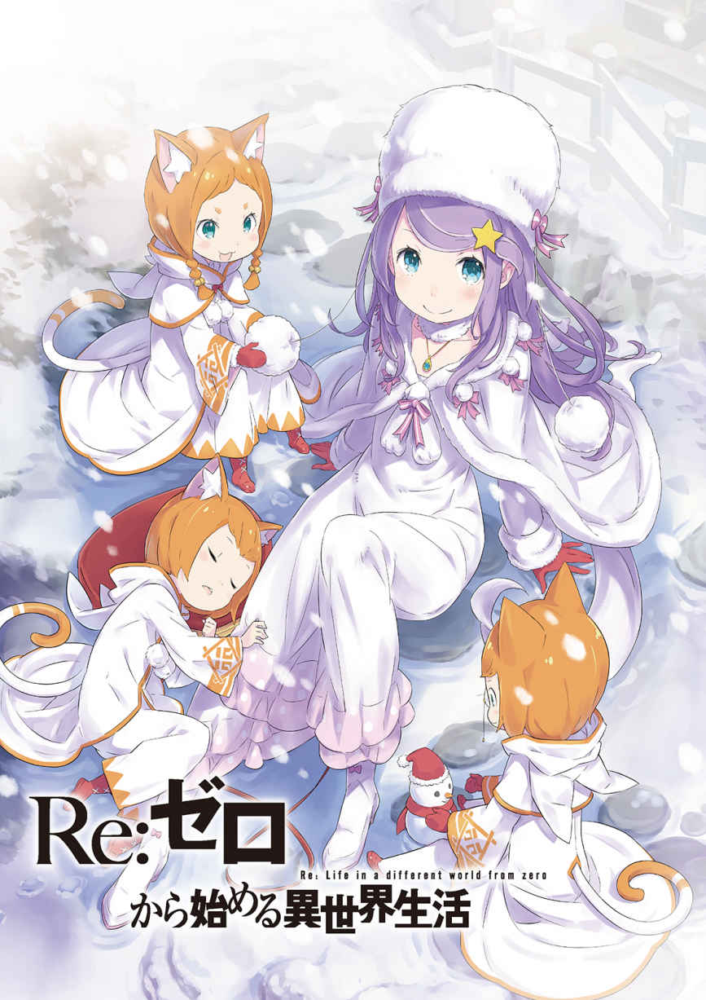
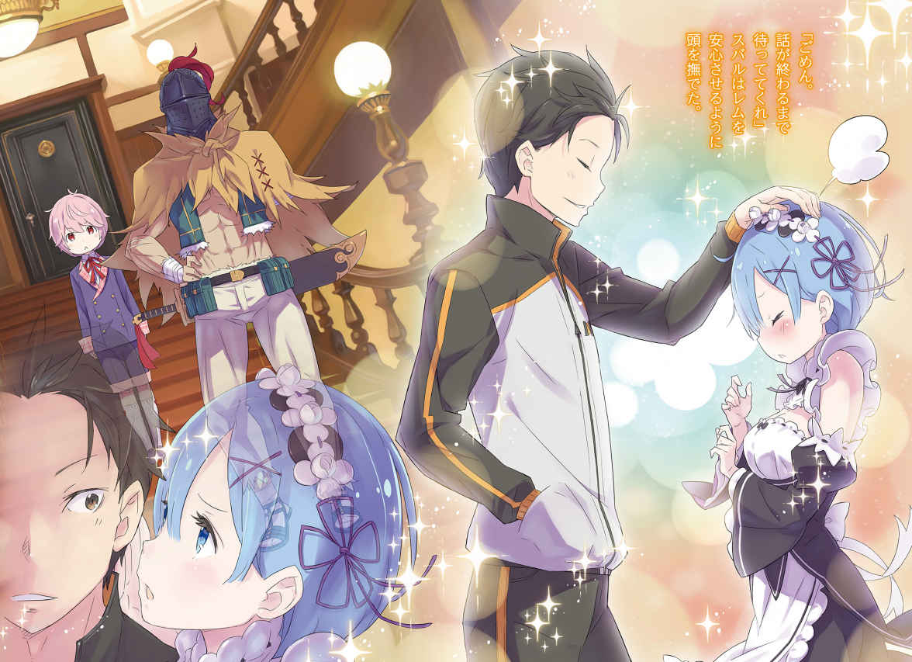
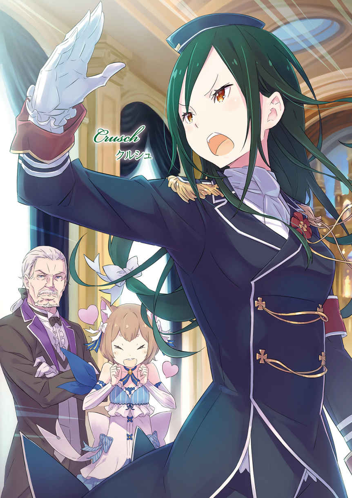
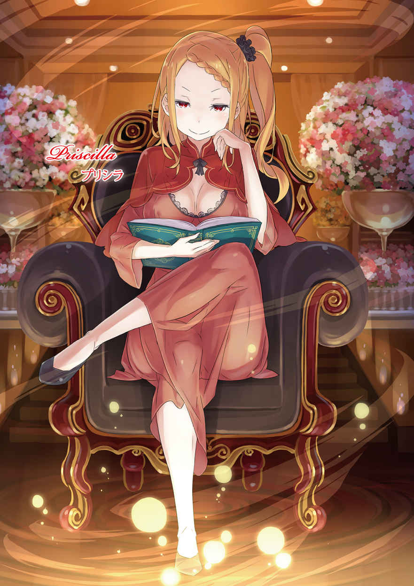
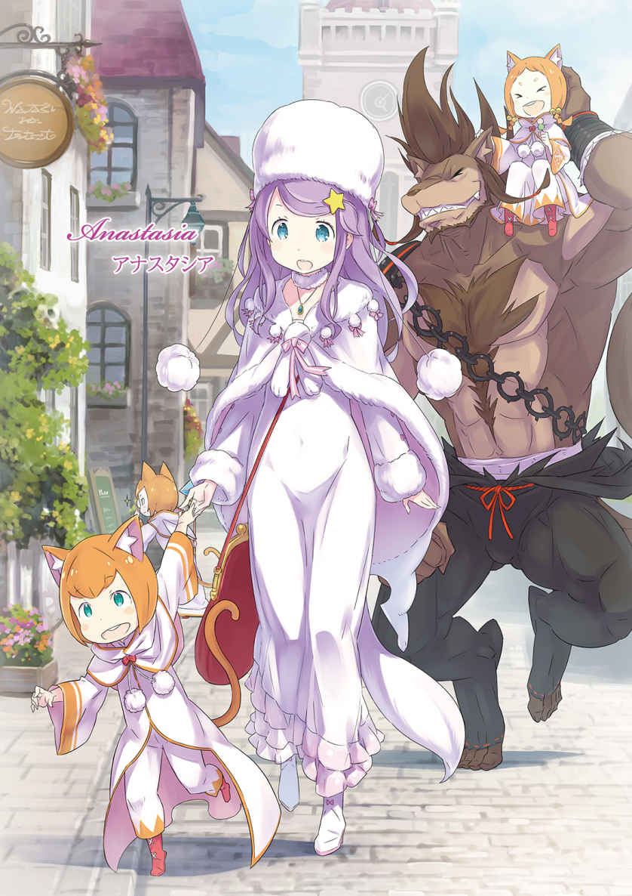
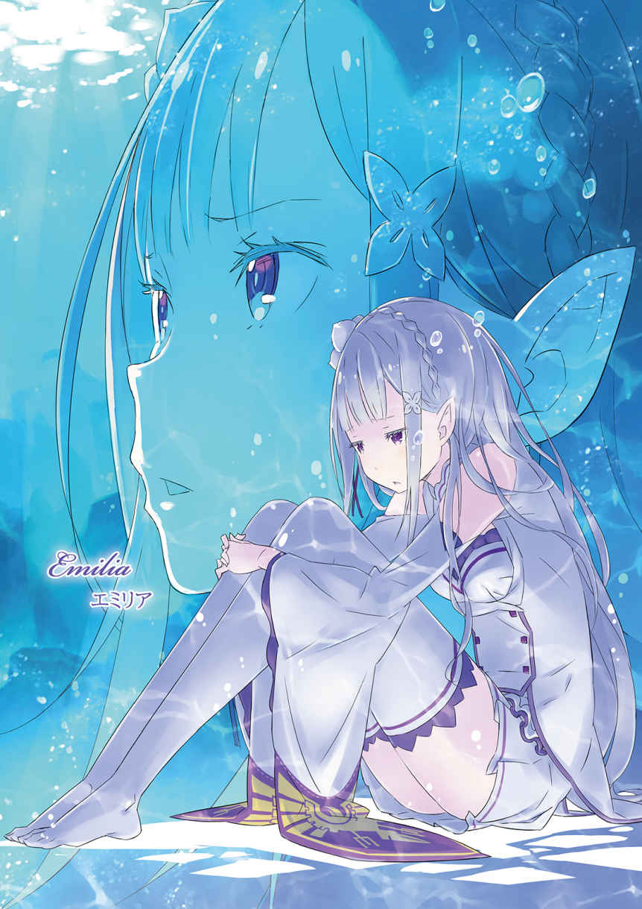
ＭＦ文庫Ｊ
Ｒｅ：ゼロから始める異世界生活６
長月達平
口絵・本文イラスト●大塚真一郎
第一章 『幼い交渉』
１
今回の『死に戻り』現象は、スバルにとって都合三度目となるループ現象だった。
一度目は、召喚初日の徽章盗難事件に関連するループ。
二度目は、ロズワール邸での魔獣騒ぎを中心としたループ。
「今回が三度目......それでもう二回も死んでるってのに、俺は何をしてた!?」
以前までのループで、スバルは『死に戻り』するたびに得た情報を整理し、八方塞がりに思える事態を打開してきた。
それなのに今回、スバルは二度もの『死』を漫然と迎えてしまった。
ループに至るまでの『死』の全貌、それすらいまだ何もわかっていないまま。
ただ、そんな救いようのない『死に戻り』でも、一つだけ確かな情報を得た。
「ペテルギウス・ロマネコンティ......ッ」
魔女教なる異常者の集団を率い、村と屋敷に惨劇を引き起こした全ての元凶。
その忌まわしき狂人の抹殺こそが、今のスバルの行動力の源泉たる全てだった。
ループを脱するためにも、散り散りになった記憶の底の底を漁り尽くす必要がある。
──一回目と二回目の死を憎悪にくべて、殺意という炎を育てながら。
「まず大事なのは、俺に許されてる正式なタイムリミットだ」
屋敷と村が魔女教の襲撃を受けたのは、スバルが村に到着する前、半日の間だ。
二回の死は皮肉にも、スバル自身の村への到着時間に大きな変化を与えていない。
「逆算して、制限時間は五日......いや、四日と半日ってとこか？」
口に出してみて、その時間の少なさに歯噛みする。
王都から屋敷までの移動時間を考慮すると、実質的に使える時間は二日とない。限られた時間で魔女教を──ペテルギウスの息の根を止めなくてはならないのに。
「嘆くのは、後回しだ。......次はループ突破の、今回の勝利条件だ」
絶対に避けなくてはならないのが、屋敷と村に起きる惨劇。原因は魔女教であり、此度の運命がスバルに突きつけた難題への模範解答は──、
「ペテルギウスをぶっ殺すってことだ」
狂人を、諸悪の根源を、彼の悪辣な殺人者を殺すことで全てを救えるのだ。
そして、シンプルな条件のクリアにはシンプルな答えが求められる──即ち、力だ。
ペテルギウス率いる魔女教に対抗するには、こちらも集団で挑む必要がある。
そう考えると、エミリア陣営の持つ戦力は実は非常に乏しい。そもそも、領主であるロズワールが私兵を率いている姿をスバルは見たことがない。
なまじ本人が強すぎるためか、領地を守るための戦力を有していないのかもしれない。
「考えてみりゃ、ロズワールはあの襲撃のとき、どこにいたんだ......？」
一回目、二回目のループのいずれも、スバルはロズワールの姿を目撃していない。
あの見た目も戦い方も派手な魔法使いだ。彼が本気で戦っていれば、その痕跡は必ず屋敷周辺に残る。だが、そんな痕跡はどこにもなかった。
「ロズワールがいないタイミングを魔女教が狙った？ そうでなきゃ、いきなりロズワールが暗殺なり奇襲なりで戦えなくなったとかか？」
後者ならば魔女教の周到さに、前者ならばロズワールの間の悪さにため息しかない。
「......それに二回目の最後、屋敷をぶち壊した化け物のこともわからねぇまんまだ」
直前の『死』──屋敷と見間違うほどの巨躯を持った四足獣の姿が思い出される。
世界を凍てつかせる獣の吐息、スバルはその冷気によって凍死させられたのだろう。あの化け物も魔女教の戦力だと仮定すれば、
「なおさら、戦うための力が足りなすぎるってことだ」
魔女教徒、ペテルギウス、そして最後に控えている可能性がある吹雪の化け物。
やはり戦力が圧倒的に足りない。何を差し置いてでも戦力を充実させる必要がある。
──その戦力をどこに求めるべきなのか、スバルはそれを知っていた。
２
王都の中層、商店や露天商が連なる商い通りでの寄り道を終えて、スバルたちがクルシュの邸宅へ帰り着いたのは夕刻に差し掛かった頃のことだった。
「お帰りになられましたか」
朱色に変わりつつある空の下、手を繋ぐ二人を屋敷の正門で出迎えたのはヴィルヘルムだ。黒の礼服に袖を通した老執事は、寄り添うスバルたちに青い瞳を細める。
「スバル殿。浮気心があるのは男児故に仕方ないとは思いますが、私個人としてはあまり感心しませんな」
「そりゃ何をおっしゃるやらですよ、ヴィルヘルムさん。迷子防止のために、レムに手を握ってもらってるだけですって。な、レム」
「はい、もちろんそうです。スバルくんは注意力散漫なので、目と手を離さないようにしないとレムはとても心配です。お屋敷の中でも油断できないと思います」
「いや、それはさすがに言いすぎだと思うけどな」
ヴィルヘルムの冗談めかした言葉に、スバルとレムも軽口で応じる。若干、レムの返事が本気っぽいのに苦笑しながら、スバルは屋敷の門前にちらと目を向けた。
「誰か、またクルシュさんに会いにきてる感じですか？」
問いかけは、鉄の正門に横付けされている竜車を見てのものだ。
車体の装飾は派手さに欠けるが繊細さがある。竜車の所有者の品格を表すようだ。客車を引く赤い地竜も、鱗のある肌が艶めいて見える。
御者の礼服もきっちりしており、目礼を見せた以外は無駄口一つ叩かない。
「ええ、そうです。王選への参加が公になって以来、クルシュ様にお目通りを願う方が後を絶ちません。もっとも、クルシュ様の方から招いた方もいらっしゃいますが」
「未来の王様になるかもって相手にゴマすっとこうって連中なわけだ。まぁ、そういう人らはそういう人らで色々と苦労もあるんだろうさ」
端的に事実を表現するスバルに、ヴィルヘルムが思わず苦笑する。
と、それから老人は表情を引き締めた。青い瞳が探るように、スバルの瞳を覗き込んでくる。
「スバル殿。下で何か、心境の変化でもありましたか？」
「ええ？ 急にどしたってんです。ほんの二、三時間で色男になりましたか？」
「目の中に修羅が巣食っておられる。本物の、紛い物でないものが」
その言葉に、軽口で応じようとした表情が変わる。
曖昧な笑みが、『本物』の笑みに。
「嫌だな、ヴィルヘルムさん。俺に何かおかしな変化があったみたいじゃないスか」
「小さな変化とは言い難いでしょうな。そのほの暗い光を瞳に宿すには、それなりの理由と切っ掛けが必要です。──私はそれを、誰より知っている」
頷いたヴィルヘルムの瞳に、スバルがこれまで気付かなかった光が見えた。
ヴィルヘルムもまた、何か許し難いものへの殺意を滾らせている人物なのだ。それ故に、スバルの憎悪の炎に気付くことができたのだろう。
「俺を、遠ざけますかね？」
「いいえ。スバル殿の為されたいようにされるがよいでしょう。先刻までのあなたと比べれば、今のあなたの方がずっと私には好ましく思えます」
昏い微笑を交換する二人。互いに腹の内は語らずとも、上辺だけは理解した仲だ。
「スバルくん。悪い顔をしていますよ」
「へへへ......って、痛い痛い痛い！ ちょ、レムさん！ 千切れるってば！」
耳を引っ張られる痛みに、あくどい話し合いが中断させられる。
「レムを不安がらせないでください」
「おいおい、超珍しいレムのおねだりなのに漠然としすぎだな。でも、安心していいぜ、レム。全部何もかも、俺がうまくどうにかしてやるからな」
話についていけず、不安がるレム。スバルは最大限の親愛を込めて笑いかける。
やるべきことがわかっている以上、今のスバルに不安な要素はない。
──殺さなければならない相手を殺すだけでいいなんて、なんと気が楽なのだろう。
なのに、レムはどうしてさらに不安そうな顔をするのだろうか。
戸惑いを目に浮かべたレムが、何かを口にしようとした直前だった。
「どうやら、お客様がお帰りになられるようです」
ヴィルヘルムが呟いた通り、屋敷の玄関を抜けて、男性がこちらへ歩いてやってくる。
長身で、くすんだ金髪を伸ばした人物だ。質の良い礼服に身を包み、下品にならない程度に装飾品を身に着けている。歳の頃は三十前後だろうか。佇まいから、出来る男の雰囲気が漂っている。
男性は三者の視線を悠然と浴びながら門前へ辿り着き、整った顎ヒゲに触れる。
「これはこれは。珍しい顔ぶれに出迎えられましたね」
柔和な微笑みに穏やかな語り口、自然と心に滑り込むような低い美声だ。男性は親しげにこちらを見るが、スバルの方に見覚えはない。自然と、眉間に皺が寄る。
「これは失礼をいたしました。私はラッセル・フェローと申します。以後、お見知りおきを。──ナツキ・スバル殿」
「......ご丁寧にどうも。ついでに、なんで俺の名前知ってるのとか聞いても？ 俺って没個性が売りだから、名前が売れてると恥ずかしくてお外を歩けなくなっちゃう」
「ちょっとしたツテですよ。王選の場で、候補者であるエミリア様の騎士を名乗った人物は有名だ。もっとも、その人物が今、クルシュ様のお屋敷で療養中であることまで知っているものは限られていますが」
警戒するスバルに、ラッセルは嫌味のない顔で応じる。
だが、その返答がかえってスバルを警戒させた。意図的に身構えさせる話術に、あまり好きにはなれそうにない相手という印象を受ける。
「ラッセル殿。クルシュ様との話し合いはうまくゆかれましたかな？」
危うく剣呑な雰囲気になりかける場に、ヴィルヘルムがさっと横から口を挟む。
ラッセルは肩をすくめて首を横に振った。
「いえ、残念ながら。クルシュ様は苛烈なお方です。やはり、あの方が我々に対して向ける目は鋭く、意見は手厳しい。これまでのこともあり、簡単にはゆかないでしょう」
「そうですか。残念です。あなたが折れぬのなら、他の方々の同意も至難ですからな」
「公爵家の地位とヴィルヘルム殿がおられるのならば、他の候補者の方々が不憫に思えるような条件ですよ。......今は、ヴィルヘルム・トリアスと名乗っておいででしたか」
ヴィルヘルムはラッセルの言葉に顎を引き、皺の深い顔を俯かせる。
「今の私が妻の家名を名乗るのは、あまりにもおこがましいことですからな」
「あなたもまた、苛烈なお方だ。そうは生きられない私からすれば眩しいほどに。とはいえ、あなた方のことは応援させていただきますよ」
外野にはわからない会話を締めくくり、ラッセルは門前の竜車へと歩み寄る。そして、乗り込む前に彼は振り返り、
「此度のクルシュ様の狙いが成るのであれば、それは我々にとっても喜ばしいことです。ヴィルヘルム殿にとっても悲願となりましょう。期待しておりますよ」
そう言い残して、ラッセルは竜車に乗り込んでしまう。無言の御者が一礼してから竜車を走らせると、繰り手と同じく不愛想な地竜は驚くほど静かに走り去っていった。
「ヴィルヘルムさん、今の人ってのは」
遠ざかる竜車を見送って、スバルはヴィルヘルムに先の人物の素性を尋ねる。
「ラッセル・フェロー。王都の、商業組合を取り仕切る会計係ですよ。肩書きは一商家の主に過ぎませんが、王都での財貨の表と裏の動きに携わる辣腕です。スバル殿も、名前以上のものが知られていると思っておいた方がよろしいでしょう」
「うへぇ。女の子じゃなしに、あんなオッサンに知られてても心躍らねぇな」
「ふむ、それは同感です。さて──」
げんなりするスバルに軽口で応えて、ヴィルヘルムは改めてこちらへ向き直った。
「今日の訪問者も、今のラッセル殿が最後となりましょう。そろそろ中に戻ろうかと思いますが......スバル殿、何かお話があるのでは？」
わざわざお膳立てしてくれるヴィルヘルムに、スバルはバツが悪くて頭を掻いた。
もっとも、話が早いと思えば悪いことなど何もないが。
「悪いけど、今日の最後の訪問者は俺だ。クルシュさんと話がしたい。──議題は、俺に力を貸してくれないかってことでな」
３
「今日の最後の訪問者が卿、というのも面白い趣向だな」
予定が狂わされたにも拘わらず、クルシュはどこか上機嫌にそう言って笑った。
応接室の椅子に深々と腰掛け、男装のクルシュは長い足を優雅に組んでいる。深い緑色の髪を撫でつけ、琥珀色の瞳がこちらの胸の内を覗き込むように細められていた。
その眼光の鋭さに、以前の自分ならみっともなく狼狽えたろうとスバルは思う。今はレムと二人、並んで彼女と正面から対峙することにも不安はなくなった。
そのクルシュの背後で、猫耳を揺らすフェリスは不服そうにスバルを睨んでいるが。
「幸い、夕食の時間までは猶予がある。それまでは問題なく、卿に付き合えよう」
「前もってなんにも言わないで、急にこんな時間にゃんて取れにゃいんだから。スバルきゅんはクルシュ様の懐の深々さに、地面にめり込むぐらい感謝してよネ」
「心配するな。感謝も地面にめり込むことも、私は要求したりはしない」
「やだ、クルシュ様ってば益荒男な寛大さに惚れ惚れしちゃいます。ぞっこん......」
フェリスの悪態をクルシュが窘め、主従がいつもの茶番をやっている。
「ダラダラ話してても埒が明かねぇし、クルシュさんもそれは好きじゃなさそうだ」
話運びには慎重さが必要だが、迂遠な会話はクルシュの不興を買うだろう。
「卿から求めた会談だ。始め方は卿に任せるとしよう。──何が望みだ？」
本当に、話の早い相手だ。
渇いた唇を舐めて湿らせ、スバルは深呼吸して言葉を紡いだ。
「魔女教って連中が、ロズワールの領地の襲撃を企んでる。それを叩き潰すために、クルシュさんの力が借りたい」
単刀直入に、スバルは目的を達するために必要な条件を切り出す。
魔女教に対抗するための戦力──ロズワールにそれが期待できない以上、それは余所から引っ張り出すしかない。その条件にクルシュなら適うとスバルは知っている。
「なるほど。魔女教か」
各々、室内の面々がスバルの言葉に反応する中、当のクルシュは頷く。嫣然とした微笑みは艶を含んでいて、スバルは彼女の新たな一面にわずかに驚いた。
その反応はスバルの予想のいずれとも異なる。だが、火蓋は切ってしまった。
早まる鼓動をなだめながら、スバルはクルシュの次なるアクションを待つ。と、
「どうした？ 言ったはずだぞ。卿が話をする場面だと」
待ちの姿勢のスバルに、クルシュは微笑みをたたえたまま首を傾ける。その反応が予想外で、スバルは微かに狼狽した。
「いや、だから......それは今、言った通りで」
「まさか、要求を突きつけただけで終わりとでも言う気か？ 卿がその要求を求める理由は？ 求めた結果どうしたい？ その要求に応じることで、こちらにどんなメリットがあるのか。それらが示されなければ交渉とは言えん」
うぐ、と声に詰まるスバルを見据えて、クルシュは退屈そうに片目をつむる。
その仕草だけで、スバルは自分の浅慮さを思い知らされる。
「そりゃそうだ。すんません、失礼しました。その、なんだ。俺もこういう交渉みたいなことって経験ないから、ちょっとテンパってて」
「未熟な己を理解するのも必要なことだ。気にすることはない。だが、会談は夕食までと区切っている。──それは、忘れることのないようにな」
寛大さを示しつつ、タイムリミットに触れるあたり飴と鞭を弁えている。
「まず、力を借りたいって頼む理由なんだが、その......単純に、戦力不足だ。魔女教徒の数に対してこっちの数が全然足りない。結果、襲撃に対抗できない」
「確かに単純な話だ。が、そこはメイザース卿だけで事足りるのではないか？ 彼の人物の対集団殲滅力はルグニカでも随一だ。魔女教など物の数ではあるまい」
「相手がひと塊ならそれもありなんだが、そうもいかない。ロズワールの体が一個しかない以上、二ヶ所襲撃された時点で詰むからだ」
少なくとも、魔女教が村と屋敷の二ヶ所を襲うことは確定している。
何度か『人払い』といった単語を耳にした記憶もある。奴らは通りすがりの竜車や行商人にも、危害を加えている可能性があった。
「なるほど。理解できないわけではない。しかし、それはメイザース卿の領主としての怠慢ではないか？ 領地を守るため、武力を保持するのは領主の義務だ。仮に自分の力を過信してそれを疎かにしたのだとすれば、辺境伯の評価を下げざるを得まい」
「その辺はまったくもってその通りですとしか。とにかく、それが理由で魔女教の手当たり次第のやり口には抗えない。戦力が、数の力が欲しいのはそういうことだ」
戦力が足りないどころか、ロズワール不在の可能性を伏せてスバルは交渉する。
ちらとヴィルヘルムを横目にする。要求が通るのであれば、ヴィルヘルムは是非とも借り受けたい戦力の一人だ。
スバルの視線の意味を察してか、クルシュは考え込むように吐息をこぼした。
「しかし、魔女教か。やはり動き出してきたようだな」
「ですネ。ま、ハーフエルフのエミリア様が表舞台に立った時点で、その辺のところは予想されてた通りですけど」
クルシュの呟きにフェリスが同意し、頷き合う主従にスバルは眉を寄せる。
が、そのことを問い質すより先に、スバルの意識は隣に引きつけられた。隣に座り、無言で唇を引き結ぶレムから激情の余波が溢れ出していた。
感情を意図的に排した横顔が、かえってその内心の荒れ模様を証明している。
レムにとって忌むべき対象であるらしい魔女教は、今やスバルにとっても最大の敵となっている。きっと、彼女と同じぐらい険しい目をスバルもしているだろう。
「事情は把握した。次は協力者に当家を選ぶ理由と......その根拠だな」
「協力者にクルシュさんたちを選ぶのは、ぶっちゃけ今の状況で一番可能性が高いはずだからだ。俺とレムがこうして世話になってるのもあるし、他の候補者よりも手を組みやすい関係だと思ってる」
このあたりの質問は、答えを用意していた部分だ。
ただ、本音ではクルシュよりさらに与し易い相手は他にいる。だが、現状での接触のしやすさと、スバル自身の心情を優先した結果が今のこの場面であった。
「与し易し、か」
「ああ、そうだ。だから、クルシュさんに話を持ちかけて......」
「ナツキ・スバル、一つ訂正しよう」
そのスバルの返答を受け、クルシュは意味深に笑いながら指を立てた。
「卿らを客人として扱っていることで誤解を招いたようだな。それは謝ろう」
「......誤解って、どういうことスか」
「私は卿らを敵として扱っていない。が、エミリアは私にとってすでに政敵の間柄だ。いいか？ 私はすでにエミリアと敵対している」
「いや、でもこうして俺たちを迎え入れてくれて......」
「それは契約が結ばれているからだ。卿らの扱いに対しては約定がある。それがあればこそ卿らを屋敷で遇しもするが、その外でなら相争う立場は変わらない」
一回目の世界でも、クルシュは契約を破棄するスバルにはっきり敵対を宣言した。それは誠実であるともいえるし、融通が利かないのだともいえる。
「つまり、手を結んでくれる目はないって、そういうことか？」
「そのこととこのこととは無関係、という話だ。言ったはずだぞ、ナツキ・スバル。交渉であるならば、互いが納得して同意できるだけのメリットを提示せよと。ここまではまだ理由含む、前提条件を確認しただけにすぎない。根拠と、純粋にこちらがそちらへ戦力を貸し出す利点を聞かせてもらわなくては。もっとも──」
と、そこでクルシュは一度言葉を切り、肘掛けに頬杖をついた。
「根拠に関しては必要ないともいえる。エミリアの素性が市井に知れた時点で、魔女教が動き出すのは予想されていたことだ。その情報の出所が確かであれ、仮に想像の産物であれ、いずれにせよ確証に近いものがある」
魔女教が動いた、というこの交渉の前提条件をクルシュは疑っていないらしい。
それはこの世界特有の常識感というべきもので、それがスバル有利に働いていた。
「そうなれば、交渉の焦点は互いの利点だ。卿らの場合は、当家の力を借りることで魔女教という脅威を排除できる。ならば当家はどうだ？ それを聞かせてもらおう」
「じゅ、純粋に人助けってのは......」
「それだけを理由に動けるのなら、ある種、それも理想的ではあるがな」
スバルの答えを夢想と切り捨て、クルシュは返す刃の視線で致命傷を狙ってくる。スバルは仕留められる前に、なんとか必死で頭を回転させる。
「あー、そのだな。たとえば、今回の窮地に手を貸してもらえることで、こっちの陣営にものすごい貸しが作れちゃったりとか......」
「──その提案を受け入れる場合、それはエミリアの王選からの脱落を意味するが、それがわかっての発言か？」
「え？」
差し込まれた鋭い指摘に、スバルは口をぽかんと開ける。
「当然だろう？ 自分の領地の危機を余所の領主に丸投げするなど、王たる器以前の問題だ。法と武力で領民を守らずして、どうして国を背負って立つことなどできよう。ナツキ・スバル。さらに一つ、勘違いを正そう」
指を立てて、クルシュは押し黙るスバルに突き刺さんばかりに先端を向け、
「卿は、エミリアの命運を背負ってこの交渉を行っている。卿の発言の是非は全て彼女にかかり、卿の発言はエミリアの発言の重みだ。判断は気軽に行うべきではなく、口にしたことを容易に翻すこともしてはならない」
「......ぁ、ぅ」
「その上で、再度問おう。──今回の件で貸しを作るのであれば、それはエミリアの陣営の敗退を意味する。それで、本当にいいのか？」
今さらながらにスバルは、自分が立っている場所の本当の意味を理解し始めていた。
スバルがいるのは、何ら責任を負う必要のない気楽な討論場ではない。発言の一つで多くの人間の立場が揺らぎ、王国の趨勢すら左右する大舞台なのだ。
「でも、それでも......」
遅すぎる自覚が両肩に責任という重石を乗せる。だが、スバルは歯を噛みしめた。
クルシュの言った通り、彼女の力を今の条件で借りるのであれば、それは取り返しのつかない失態であり──エミリアの王選はここで終わりだ。
しかし、クルシュの力を借りられないのならば、待つのは魔女教の狂信者たちによる蹂躙、そして惨劇だ。
天秤は揺らされ、スバルの脳には痛みと軋みがひっきりなしに訪れる。
それらに頭の中を掻き回されながら、スバルは悩み、苦しみ、答えを出した。
「──それでも、手を貸してほしい」
「......王選の脱落を意味するとしてもか」
「命あるだけ、マシだろ。死んじまったら、何もかもおしまいなんだから」
肩を落とし、スバルは自分の無力さに落胆と失望を隠せないまま応じる。
死んでしまえば、おしまいだ。
村の惨状、隣にいるレムの無残な死に様。それをもう一度見る勇気などない。
頭を下げて、屈辱に耐えて、それで命だけでも助かるのならそうするべきなのだ。
「わかった。──それならば、カルステン家は一切の戦力を卿には貸し出さない」
４
──一瞬、何を言われたのかわからずにスバルは凍りついていた。
「──は？」
こぼれた声は疑問符こそついているものの、理解に遠すぎて意味を為さない単なる雑音だ。だが、クルシュはそれを受け、すらりと長い足を組んだ。
「繰り返す。当家は卿の要求であるメイザース領への助力──ひいては、エミリアへ戦力を貸し出すという提案を拒否させてもらう」
再度、スバルへわからせるように噛み砕かれたクルシュの発言。
その整然とした物言いが、かえって小馬鹿にされた印象を与えスバルを激昂させる。
「ふざ......ッ！ なんで、そうなる......!?」
「まず一つ。卿がこちらに提示したメリットであり、苦渋の末に呑み込んだエミリアの王選脱落だが......これはこの交渉においては手札にならない。わかるか？」
「な、なんでだよ。ライバルが減るのはそっちにとっても十分な見返りで......」
「言っていて気付かないのか？ エミリアの脱落に関して言えば、私の関与に拘わらず発生する事柄であるのだと」
「何を......」
言っている、と続けようとしてスバルは気付いた。
「卿が言った通り、誰の助力もなければエミリアは領地であるメイザース領を守り切れない。それはそのまま、エミリアの王選の脱落を意味する。私の関与と無関係に」
「────」
「むしろ、下手に手を出して、私がエミリアの脱落に関わったと他の候補者に知られる方が問題だ。知っての通り、この王選で現状最も有利な立場にあるのは当家だ。ここで他の候補者を蹴落とす真似をして、他の陣営に一斉に目の敵にされるのは避けたい」
静観すれば、クルシュはスバルの提示した利点を無傷で手に入れられる。
そのためにわざわざ危険を冒し、火中の栗を拾うような真似をする必要はない。
だが、それでは──、
「魔女教に襲われるロズワールの......領地の、あの村の連中は見殺しにするのか!?」
叫ぶスバル。だが、クルシュは冷たい視線でこちらを射抜いた。
「一つ勘違いを正そう。そして、話題をすり替えるな、ナツキ・スバル」
「ぐ......っ」
「領地を守る力がないのはエミリアであり、無能さで民草を失うのもエミリアだ。断じて私ではない」
無力、無能──苛烈な言葉にスバルは殴られたような衝撃を覚えた。
クルシュの主張に反論しなくてはならない。なのに、浮かぶのはひたすらに幼稚な感情論ばかりで、クルシュの正論に抗う力が湧いてこない。
「どうやら、言いたいことは終わりらしい」
クルシュは応接間の扉の上にある、黄色に光る魔刻結晶の時間を確かめて、
「もうすぐ、地の刻に入る。夕食の時間だ。予定した時刻通りだな」
席を立とうとするクルシュの態度に、スバルは焦燥感に急き立てられるままに、
「ま、待て！」
話を打ち切るクルシュを手で制し、頭を必死で巡らせて交渉を続けようと試みる。
「ほ、本気で見捨てるのか？ 村の奴らには何の落ち度も、死ぬ理由もないのに！」
しかし、スバルの口から出たのはあくまで相手の温情に縋る女々しい言葉だけ。
稚拙な感情論を聞いたクルシュは、その瞳に微かな失望を浮かべた。
「言ったはずだ。力足らずは私ではなく......」
「知ってて見捨てるってのは！ 悪じゃねぇのか!? 力があるなら、助けられるならどうして助けない!? 助けて何が悪い！ 別の領地の話なら知らん顔するのか!?」
「ちょっと黙って聞いてたら、あんた......」
「フェリス、いい」
「でも、クルシュ様！ 今のはいくらにゃんでも」
「剥き出しの気概だ。応じなくては私の信条に反する」
不服そうに唸るフェリスだが、クルシュの命に従って静々と下がる。
それを目の端に入れながら、クルシュは改めて椅子に座り直した。
「見過ごすのは、見殺しにするのは悪ではないのか、か」
深々と吐息をこぼしながら、クルシュはスバルの発言を反芻する。
「そうだ！ 王様目指すんだろ!? 国の全部を背負おうってんだろ？ なら、村一つ見捨てて何が王だって話じゃねぇか！」
「一つ、考えを正そう」
浅はかなスバルを非難するように、指を立てたクルシュが視線でこちらを射抜く。
「卿の提案を却下したとき、まず一つと言ったはずだ。もう一つの理由で、卿が持つ疑問の大方は晴れよう」
クルシュがスバルの提案を聞き入れない理由。エミリアを見捨てる理由。それは、
「それは──卿の話に当家を動かすほどの信憑性がないから、だ」
これまでの交渉が、その前提が、ひっくり返るような発言がスバルを打ち抜いた。
「は、あ？」
「魔女教か。なるほど、動くことはあり得よう。奴らの教義とこれまでの活動。それらを思えば推測は成り立つ。だが、問題はその先だ」
「その先......？」
「簡単な話だ。何故、奴らが次に狙う場所と日時を卿に特定できる？」
立てた指をスバルへ突きつけ、クルシュは刃のような声と視線で、
「奴らの得体の知れなさは不可解なほど徹底している。これまでに奴らがどれだけの被害を生んできたか。その上で根絶やしにならず、何百年も存続してきたのがいい証拠だ。そんな奴らの次なる悪行を、卿はどうして知り得たのだ？」
「それは......だけど、あんただってさっきはそんなこと」
「そこまで必要性を感じなかっただけだ。が、それでも卿が納得できないのであれば、こちらを納得させる根拠を提示してもらう。それができないなら可能性は一つ」
押し黙るスバルに代わり、クルシュがゆっくりと噛んで含めるように、
「卿もまた、魔女教であるなら知り得て当然だが？」
「ふざけ──！」
今度こそ、堪え切れない激情が絶叫になって喉を駆け上がる。
だが、それはまたしても寸前で止まる。スバルの自制心とは無関係に。
「────」
それはここまで延々と、スバルとクルシュのやり取りを無言で見守っていた少女。
レムが無言のままに発する、まさしく鬼気というべき濃密な気配によってだ。
「クルシュ様、お戯れはよしてください」
そのレムは普段と変わらぬ声音で、慎ましやかにクルシュへ首を傾ける。
「スバルくんが魔女教だなんて、そんなはずがないじゃありませんか」
「そうかな？ ナツキ・スバルの発言を顧みて、知り得た理由が口にできないならそうであると断ずる他にない。卿はそういった心当たりを感じたことはないのか？」
「──ありません」
刹那の躊躇いがあったことに、クルシュは果たして気付いただろうか。
スバルから魔女の臭いを感じ取るレムだけが、今のクルシュの何気ないかまかけに引っかかるものを覚えて舌を弾いていた。
「いずれにせよ。それらの理由が信憑性を欠くため、当家がエミリアに手を貸すことはできない。──そもそも、卿は交渉役としての権限を与えられてもいまい？」
「うぐ......」
「先ほどは卿の肩にエミリアの進退が乗る、などと脅しもしたがな。実態はそれ以前の問題だ。卿が背負うものなど、今のこの場には何もありはしない」
──勝手に突っ走って、勝手に守ろうとして、身勝手にしくじっている。
クルシュの言葉は冷徹に、スバルの剥き出しの心を抉り、切り裂いていく。
「......今の卿には私を動かす力はない。大人しく、ここで守られていることだ」
「──ッ!!」
それは幾度も、幾度も幾度も、繰り返し繰り返しぶつけられた言葉だ。
スバルに無力を認めさせ、無知であることを押しつけ、不甲斐なさを強要し、無茶で無謀で無思慮な無様さを嘲笑っていく。腐りきった同情心だ。
何もかもが思い通りにならず、スバルを忸怩たる思いが支配する。
何が間違っているというのか。正しいことをしようとしているはずなのに。正しいと思って、助けられると信じて、願って祈って求めて、それを行っているはずなのに。
「魔女教は、くるんだよ！ あいつらが、村の人たちを皆殺しにするんだ......！」
喉が張り裂けそうなほどの怒りを、悲しみを込めて、スバルは訴える。
見てきた光景があった。触れてきた死があった。
親しい人々が、大切な存在が、世界の何もかもが凍りついて白い結晶へ姿を変える。
それは確かに起こることなのだ。放置しておけば必ず起きる無慈悲な現実なのだ。
何故、それをわかってくれないのか。
何故、悲劇を阻止させてくれないのか。
誰も邪魔をせず、押し寄せる最悪の運命をスバルに止めさせてくれないのだ。
「殺す......殺せばいいんだ！ 魔女教の奴らなんか、あいつらなんかみんなぶっ殺しちまえばいいんだ！ そうすれば全部、全部丸く収まるんだよ！ わかるだろ!? あいつらなんか生かしておいたらいけねぇんだ！ 奴らを殺す！ 力を、貸してくれよぉ！」
その場に膝をつき、床に這い蹲って懇願する。
地べたに額を擦りつけて嘆願すれば同情してくれるのなら、道化にもなろう。
嘲り、見下して力を貸してくれるのなら、いくらでも頭を下げてみせよう。
犬の真似でも畜生の役割でも何でも負おう。それで、この殺意が叶うなら──。
「──卿の行いの源泉はそれか」
だが、そんなスバルの恥を晒すことを躊躇わない懇願は、
「魔女教憎し。それが、卿がエミリアに近付いた本当の理由なのか」
──判断に私情を交えない権力者には、欠片の憐憫も抱かせなかった。
５
冷たい声と視線に引き裂かれ、スバルは声もなく肩を震わせる。
それが怒りによるものなのか、悲しみによるものなのか、ない交ぜになる感情の奔流に呑み込まれるスバルにはもうわからない。
「違う......俺は、ちゃんとみんなの、ことを......」
クルシュの断言など的外れだ。
魔女教への憎悪で動いているなど、見当違いの穿った見方に他ならない。
スバルの想いは、その始まりは、いつだって誰かのためであるはずなのだ。
それなのに、言葉は何一つ後に続かない。
「自身すら騙せない嘘で他者を欺くことなどできない。今、卿の瞳に宿る光を狂気であると、殺意であると呼ばずしてなんとする。気付いているか、ナツキ・スバル」
クルシュの瞳は厳しくもあり、憐れむようでもあった。
「卿は、屋敷に戻ってきたときからずっとその目をし続けているのだぞ」
渇いた指摘に、スバルの反応は劇的だった。
思わず目元に触れて、見えないそれを確かめようとしてしまっていた。
それをした時点で、クルシュの言葉を否定できないことの証明でしかないのに。
「卿が魔女教に拘る理由はわからない。魔女教に人生を捻じ曲げられたものも多い。卿もまた、その一人なのかもしれん。その怒りや憎しみは正当なものであるのかもしれない。だが、それはこの交渉には何ら関係ない」
「仮に──仮に、俺が魔女教を憎んでたとして、それでどうなる。ああ、あいつらはこの世界の害虫だ。一匹残らず殺し尽くした方がずっといい。そう思っちゃいるさ。いるが、それが交渉を打ち切る理由には、見捨てる理由にはならねぇだろうが......！」
「また話題が逸れているな、ナツキ・スバル。卿の行動の原点を憎悪と疑うのは、確かに交渉の是非とは無関係だ。もっとも、卿が交渉相手として不適格ではないかという点は大いに関係する。交渉内容の正当性も疑わしくなるからな」
「不適格......ってのは、どういう意味で」
血が滲むほど歯を食い縛り、縋りつくようにスバルは問いを発し続ける。
会話が終わることが、交渉の終わりを意味する。その恐怖に急き立てられながら。
「卿の行動の原点が魔女教への憎悪であると仮定すれば、そもそも卿がエミリアに近付いたことすらそのための踏み台にすぎないのではないかと考えることもできる」
「俺があの子に近付いたことが、踏み台......？」
「エミリアが王選に参戦し、彼女の出自が公のものとなれば、教義からして魔女教が動き出すことは明白だ。常ならばその活動の糸口さえ掴ませない奴らの頭を押さえる手段として、これほど確率を高める方策はそうはない」
「俺が！ エミリアをダシにして奴らに復讐しようとしてるってのか!?」
拳を目の前のテーブルへ叩きつけ、あり得ない言い掛かりに怒声を張り上げる。
「今の卿の振舞いで、違うと叫ぶことに説得力があるとでも思うのか？ 卿の瞳には憎悪が宿り、言葉の一つ一つに殺意が滲む。いずれのそれも、深く塗り固められて剥がれることも薄れることも、ましてや忘れることなどできない類のものだ」
──違う！ 違う、違う、違う、違う！
断じて、クルシュの発言はスバルの本質を捉えてなどいない。
「俺の憎しみと奴らの邪悪さは関係ない！ あいつらは！ 生きてたらダメなんだよ！ だから皆殺しにするべきなんだ！ それでみんなが救われる！ みんな助かるんだ！ 誰も死なずに済むんだから、奴らは死ぬべきなんだよ!!」
「言ったはずだぞ、ナツキ・スバル。自分すら騙せない嘘では他者は欺けない」
目を血走らせ、荒い息を吐くスバルに反論する声は冷たい。
クルシュは目を細めて、肩で息をするスバルを座ったままで見上げると、
「憎悪で、殺意で、魔女教憎しで動いていないと発言するのは説得力がない」
「どう、して......」
「わからないのか？」
掠れたスバルの声に、クルシュははっきりそれとわかる憐れみを双眸に宿していた。
だが、クルシュの言いたいことがわからないスバルは眉を寄せるばかりで、その反応に彼女は落胆と失望を隠し切れない様子で目を伏せた。
そして、
「──卿は一度も、エミリアを助けたいと口にしていない」
「......あ？」
「卿の言葉は誰かを救いたいと、他者を守りたいと、そう上辺だけを取り繕った内側に黒い感情を煮え滾らせている。少なくとも、王選の広間で見た姿とは重ならない」
言われた言葉の意味が呑み込めず、スバルは視線を虚ろにさまよわせる。
──スバルが、エミリアのことを助けたいと考えていない？
「────」
そんなはずがない。スバルはいつだって、この世界に落ちてきて、初めて彼女にその命を救われたときからずっと、エミリアのために生き抜いてきた。
王選の広間でだって、練兵場での一件だって、今だってそうだ。この状況を放置してしまえば、彼女や村は失われる。それを救うために行動しているのだ。
断じて、断じて、断じて、憎悪に心を奪われてなど──、
「それ以上、前に進むことは許されませんな」
その声は唐突に、沈黙を破ってスバルに投げつけられていた。
意識が現実に揺り戻された瞬間、スバルの前には姿勢を正したヴィルヘルムが立っていた。老人はテーブルを挟んでクルシュの隣に立ち、皺の深い顔に憐憫を浮かべている。
その憐憫に満ちた、見下した視線が、妙に今は癇に障る。
「──スバルくん」
ふと、袖を引かれた。レムが、悲しみを瞳に湛えてスバルの袖を摘んでいた。
「落ち着いてください。ここで暴れたって、何の解決にもなりません。仮に暴れたとしても、レムではヴィルヘルム様には決して敵いません」
「......暴れる？ 何、言ってんだ？ 暴れるとか、そんなこと......」
「ちょっとちょっと。なら、そんにゃしっかりティースプーンなんて握ってどうする気だったの？ 親の躾が悪かったのかもだけど、その持ち方はいただけにゃいヨ？」
フェリスの指摘で初めて、スバルは自分が右手にスプーンを握りしめていたことに気付いた。それも逆手で、まるで何かに突き刺そうとするような乱暴な握り方で。
──いったい、いつの間に自分はこんなことを。
「図星突かれたからって、暴れるのにゃんてよしにゃよ。ここで大暴れしても、レムちゃんが牽制してる間にヴィル爺に真っ二つにされちゃうだけだし」
「そして私はそんな命令はしたくないものだ。数日を一緒に過ごした仲で、政治的な問題も発生する。ここの絨毯は父上からの贈り物で汚したくもない」
無礼を働かれかけながら、スバルを見るクルシュの態度には余裕がある。
それは器の大きさを示しているようでもあり、こんなちっぽけな金属に怒りを託すしかないスバルの無力さを嘲笑うようでもあった。
それら全てがひどく、癇に障る。
だから、謝罪するよりも突っ張った言葉が口をついて出た。
「......どうあっても、力は貸してくれないってんだな？」
「ああ。卿の発言は信憑性が低く、協力したところでこちらが得られるものは魅力的ではない。──故に、静観させてもらう」
「魔女教は、くるぜ。そうなったとき、あの村の人たちを殺すのはあんただ。知ってて何もしなかったあんたの『怠惰』があの村を殺す」
唾棄すべき狂人の代名詞を口にして、スバルはクルシュを睨みつけた。
「ずいぶんと傲慢な物言いだ。ならば、こちらからも一つだけ」
スバルの濁った視線を受け、立ち上がるクルシュはスバルの目を真っ直ぐに見つめる。
「私には、相対している人間が嘘をついているかどうか、おおよそ見抜くことができる。昔から交渉事で他者に欺かれる経験がないことが自慢でな」
唐突に、そんなことを語り出すクルシュ。
彼女は訝しげに色を変えるスバルの瞳の、その奥を覗き込んだまま、
「その経験を踏まえて言わせてもらえば、卿は『嘘』を言ってはいない」
「な、なら......っ」
「己で嘘と思っていない、妄言を真実だと頑なに信じ込んでいる。──それはもはや狂気の沙汰、狂人というものだよ。ナツキ・スバル」
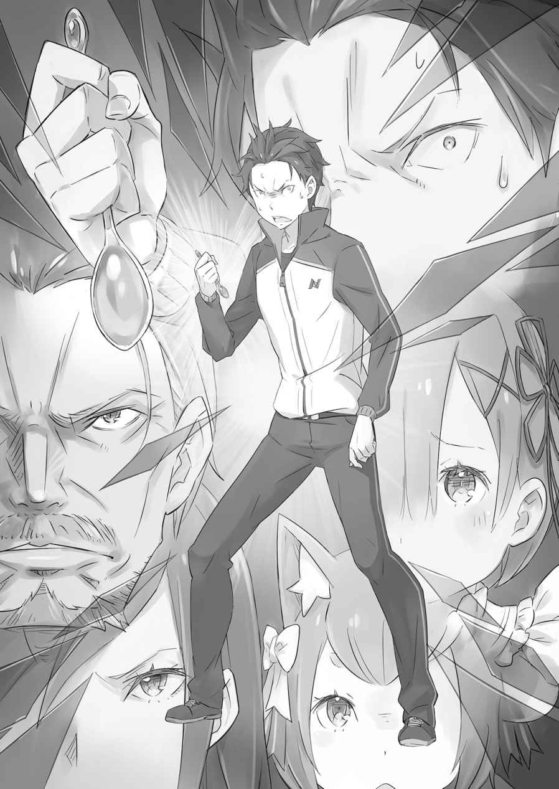
今ここで、スバルははっきりとこの交渉が決裂したのだと理解した。
「──っ」
食い縛り続けた唇の端が噛み切られ、スバルの顎を血が伝う。
その痛ましい様子を見たクルシュが目を細める。
「フェリス、治してやるといい」
「いらねぇよ！」
フェリスが動くより早くそれを拒否し、スバルは椅子を蹴るようにして立ち上がる。
「これから夕食の時間だが、同席しないのか？」
「狂人と食卓を一緒に囲むなんてゾッとしねぇ話だろ？ いくらあんたが風流人だか傾奇者だか知らねぇが、ちょっと行き過ぎってもんだ」
皮肉に対して皮肉で応じて、スバルは応接間の扉に手をかける。そのスバルに続くように、居住まいを正したレムも丁寧にクルシュたちに頭を下げた。
「短い間でしたが、ご迷惑をおかけしました。当家の主に代わり、御礼を申し上げます」
「それが卿の......いや、メイザース卿の答えか」
「はい。スバルくんの意思を全て尊重するよう言付かっておりますので」
意味のわからないやり取りであり、スバルからはクルシュの顔は見えない。
だが、別れを告げるレムに対するクルシュの声に少なからず無念さがあった。
スバルに向けた断絶とは別の感情であり、それも今のスバルには苛立たしい。
「レム、行くぞ」
足早に歩み寄ってくるレムに声をかけ、スバルは扉を開いた。
「他に当てはあるのか？」
「せいぜい、いい王様になれよ。弱者を切り捨てる独裁者的な」
背中に届いた最後の言葉に吐き捨てるように答えて、スバルは乱暴に扉を閉めた。
──こうして、交渉は惨憺たる有様で幕を閉じた。
６
交渉が決裂し、貴族街へとスバルが飛び出したのは夕刻過ぎのことだ。
すでに日は西の彼方へ埋没し、世界にはゆっくりと夜の気配が迫ってきている。結晶灯の明かりが道々を照らし出す中、スバルは鉄柵に背を預けて悪態をこぼしていた。
「クソが。どいつもこいつも......」
脳裏を過るのはクルシュとのやり取り。そして、やり込められた屈辱だ。
「分からず屋共が......なんで、俺が正しいってことがわからないんだよ......！」
胸中を渦巻くのは、自分の道を邪魔する彼女らへの、憎悪に似た感情だった。
クルシュはあの惨劇を、無情さを、悪辣な狂人の哄笑を、目にしていないから。耳にしていないから。肌で実感していないからわからないのだ。
奴らこそが、生かしておく価値のない害虫であることが。
「もういい。もういいんだよ。しくじったことの、薄情者のことなんざ忘れろ。今はもっと目の前のことを優先しろ......！」
過ぎたことを悔やんで足を止めるより、少なからず前進することを選ぶべきだ。
手札の少ないスバルには、時間すらも惜しむべき宝物に違いないのだから。
「お待たせしました、スバルくん」
と、苛立ちに足を揺すっていたスバルの下へ、門扉を抜けてレムが戻ってきた。
クルシュの屋敷から、滞在中の荷物をまとめて持ち出してきたのだ。啖呵を切って出てきたスバルは、レムがそれを回収してくるのを待っていた形である。
「......悪かった。荷物、こっち寄越せよ。俺も持つ」
「いいんです。重くないですし、スバルくんはまだ病み上がりなんですから」
スバルの申し出を固辞し、レムは荷物を抱え込んでしまう。普段なら食い下がるスバルだが、思考のリソースを別に割いている現状、そこまで拘れない。
「そういや、レムはここを出ることに反対しないんだな」
「はい。それがスバルくんの選んだことでしたら」
「まぁ、あれだけやらかした後でのうのうと治療の続きなんかできるわけねぇし。貸し借りがどうとか、エミリアには悪いことしちまった」
エミリアは何かを差し出して、スバルの治療の準備を整えてくれていた。そのエミリアの温情を度々ふいにしていることにはいくらかの罪悪感がある。
だが大丈夫だ。窮地を救った後のスバルならエミリアと和解できるし、きっとこのことも許してもらえる。
そのためにも、ペテルギウスには絶対に死んでもらわなければならない。
「スバルくん。その、クルシュ様との交渉のことは......」
「信憑性だの利益だの、小難しいことばっかで煙に巻いてきやがった。人の心がねぇんだよ。そんなんで偉ぶったとこで、誰がついていくもんかよ」
物言いたげなレムを遮って悪態をつき、スバルはそれきり話を打ち切る。蒸し返されたくないスバルの心情を読み取ったのか、レムは別の話題を持ち出してくる。
「これからどうしますか？ スバルくんのお話が本当なら、一刻の猶予もありません」
「本当なら？」
「──っ。一刻の猶予もありません。ロズワール様のお屋敷に戻りますか？」
引っかかる言葉に口を挟むスバルだが、レムはそれに取り合わない。
レムのその後の問いかけに、スバルは首を横に振った。
「いや。今、俺らだけで戻っても大したことはできない。きっちり、対抗できる戦力を引き連れて戻らなきゃな。それじゃなくても、代替手段がなけりゃダメだ」
スバルとレムだけで戻るのでは、これまでの展開をなぞるだけになってしまう。
出発が前より早ければ、魔女教と遭遇せずに屋敷に戻れるかもしれない。だが、屋敷に残った戦力だけで魔女教を迎え撃つのはおそらく厳しい。
「数が、戦力が足りないんだ。ロズワールは何してやがんだよ......」
彼が一人いれば、それだけで魔女教の戦力を駆逐できる可能性すらある。
なのに肝心要のこのとき、あの宮廷魔導師はどこで何をしているというのか。
「スバルくん。実はロズワール様ですが......この数日は屋敷におられない可能性が非常に高いんです」
「──!? 知ってたのか？ ロズワールが屋敷にいないのが予定通りってのは」
「ロズワール様はガーフィールの......ええっと、領内の関係者のところを訪問することになっていて、数日は逗留している予定で」
「クソ、タイミング悪ぃ！ それが襲撃に対処できない原因なのか！」
懸念を裏付けるレムの答えに、頭を掻き毟ってスバルは呪いの言葉を吐く。
ロズワールという最大戦力が見込めなくなった以上、先の見積り通り、圧倒的に戦力が足りない。これはスバルとレムが早期に帰参しても同じことだ。
「やっぱり、援軍を連れて戻らなきゃどうにもならねぇ」
最初の結論に戻ったことを確信し、スバルは自分を見つめるレムに頷きかける。
方針は決まった。そして、時間の猶予もない。前回や前々回の結果を上回ろうとすれば、少なくとも明日中には王都を出発しなくてはならない。
今が夜になり始めた時間であることを鑑みれば、あと半日ほどがリミットだ。
「とにかく、他の協力者を探すしかない。レム、王都の地理に詳しいか？」
「何度か足を運んでいますし、数日はスバルくんと一緒に見回っていますからそれなりです。......でも、誰を？」
「まず宿を見つけて、話はそれからだ。遅くても明日の間に王都を離れなきゃ間に合わなくなる。とにかく......後のことは全部、これから考える」
でき得る限りの準備を万端にしなくてはと、スバルはもっともらしくレムに告げる。
レムが静かにその提案を受け入れるのを横目に、スバルは無言で空を見上げた。
向こう側から夜が迫ってくる王都の空──その迫る闇が、不吉なものに思える。
まるでスバルの道の暗雲を暗示するように、薄気味悪く緩慢な動きで──。
第二章 『豚の欲望』
１
「──妾はこう見えて、意外と本が好きでな」
豪奢な椅子に座り、肘掛けに片手を置いた少女がそう語る。
置いた腕と反対の手には凝った装丁の本を開いており、すでに後半に差し掛かるそれに目を走らせる姿は、どこかそれまでの少女の雰囲気と異なっていた。
ネグリジェのような薄手の赤い寝衣に袖を通し、同じ色の肩掛けを羽織っている。豊満な体の曲線が惜しげもなく晒されている状態だが、男の視線を浴びながらも少女にはそれを意識した様子はない。
来客を出迎えているとは思えないほど自然に、少女は本の世界に没頭していた。
「────」
その厳かな振舞いに、思わず見惚れそうになる自分がいるのをスバルは感じていた。
しなやかな白い指先が文字をなぞり、瞳が文字を追う姿をいつまでも見つめていたいような気持ちにさせられる。その感慨はあるいは、目の前の少女の別の一面に魅せられたからだったのかもしれない。
「────」
絨毯の敷かれた床をスニーカーで踏み、放置されるスバルは途方に暮れる。
中に通されたはいいものの、肝心の部屋の主はスバルに興味を払っていない。強引に話を始めようとすれば、冒頭の一言が返ってきたのみ。
まさか、本が読み終わるのを待てと言われているのではあるまいか。
「いくらなんでもそれは......」
その不安を否定したいが、ページをたおやかに捲る姿を見ているとそれも難しい。
事実、少女がそんな理不尽を言いかねない性格だとスバルは知っている。
太陽を映したような橙色の髪に、目に映る全てを焼き尽くす炎のような紅の双眸。透き通る白い肌に女性的な起伏に富んだ肢体。濃密に漂う色香は毒にも似ており、静かに本に視線を傾ける姿の美しさは筆舌に尽くし難い。
その人柄が万人に愛されるものならば、どれほど神は彼女を贔屓したものだったか。
──少女の名前はプリシラ・バーリエル。
王選候補者の一人であり、スバルが次なる協力者として対話を求めた相手であった。
２
クルシュの屋敷を離れて、レムが宿の確保に向かう間、スバルはスバルで藁にも縋る思いを託した人物──ラインハルトの王都不在を確認し、肩を落としていた。
王都に用意されたアストレア家の別邸には、管理を任された老夫婦が駐在していた。
二人は連絡なしに訪れたスバルを歓迎し、申し出に耳を傾けてはくれたが、
「若様は二日前に、主であるフェルト様とそのご家族を連れて今は本家にお戻りになっておられます。私どもの方からご連絡を差し上げることは可能ですが......」
ラインハルトの不在は、彼がクルシュ邸を訪れたときに話してくれた通りだ。
それがわかっていて一縷の望みをかけたが、スバルの願いは届かなかった。
もし連絡が届いても、王都からアストレア本家への距離と、そこからメイザース領までの距離は致命的だ。ラインハルトの参戦は絶望的と思うしかない。
「ロズワールもラインハルトも、肝心なところで役に立たねぇ......！」
老夫婦に別れを告げて、屋敷が見えなくなったところでスバルは頭を抱えた。
今回は全てにおいて、間が最悪だ。
協力者の候補が次々潰えたことで、スバルから本当の意味で余裕が失われる。
せめて『死に戻り』の起点が、ラインハルトとの一別の夜まで戻せれば──。
「無い物ねだりしててもしょうがねぇ......考えろ、考えろ考えろ考えろ考えろ、俺。力も数も時間も何もかも足りねぇんだ。頭ひねるしか俺にはねぇんだ」
必死に頭を回転させて、スバルは次善の策を弾き出そうと懸命に考える。
クルシュとラインハルトが候補から外れれば、スバルには選べる手札がほとんどない。
クルシュとの交渉の顛末を思えば、騎士団に訴えかけても結果は同じだろう。それに現状、スバルは王国騎士団に対して不信感しか抱いていない。
──少なからず、良い関係を築けていたと思っていたクルシュに見放されたことで、スバルの中には他者に対する疑心暗鬼が渦巻いていた。
自ら選択肢の幅を狭め、それに気付けないスバルが思いつく知己はあと二人。だがその片方は、騎士団以上に憎たらしい『最優の騎士』。頭を下げるなど考えられない。
だから、もはやスバルには候補はたった一人しか思い浮かばなかった。
「スバルくん、これからどうしますか？ レムは......」
「大丈夫だ。俺に任せておけ。レムは何もしないでいい。しなくて、いいんだ。ずっと、俺の後ろにいてくれ。それだけでいい」
合流したレムが、考え込むスバルを見かねたように声をかける。
それを遮り、弱々しい笑みをレムに向けながらスバルは考え続けていた。
──レムを矢面に立たせることは絶対に避けなくてはならない。
スバルを守るためならば、レムはその身を投げ出し、命を捨て石にすることを躊躇わないことがわかっている。彼女の命は絶対に守り抜く。
それがレムを救い出し、依存心を抱かせてしまったスバルの義務なのだ。
彼女が失われるような結果が訪れることだけは回避しなくてはならない。
スバルが、自分がやらなければならないのだ。そうでなければレムは守れず、エミリアや村の人々を救い出すことも意味がなく、ペテルギウスへの憎悪を晴らすことも──。
「あれ、なんか......」
一瞬、ひどく物騒なことが思い浮かんだ気がして、スバルはこめかみに触れた。
今の考えはまるで、エミリアたちが救われることよりも、ペテルギウスの抹殺を優先するかのようだ。それでは丸きり、クルシュの指摘した通りではないか。
「大丈夫。大丈夫だ。俺は、ちゃんと、正しいことを、してる。しようと、してる」
自分に言い聞かせるように、噛み含めるように、見えたことを見なかったことにするように、深淵に蓋をするように、スバルは自分を肯定する。
肯定していなければ、ナツキ・スバルは正気を保てないのだから。
３
翌朝、宿で一夜を明かした二人は、一縷の望みを託して貴族街へと戻っていた。
王都上層の貴族街は、煌びやかな建物が立ち並ぶ一角だ。スバルたちが訪れた豪邸も、その華やかなイメージを裏切らない外観で二人を出迎えてくれた。
否、華やかさと煌びやかさにおいては、期待以上の外観だったと言うべきだろう。
「周りに聞いて回る必要がないぐらい、わかりやすい自己主張の屋敷だな......」
呆れるスバルの眼前、遠目からでもその屋敷の豪華絢爛さは目に焼きつくほどだ。
朝日を乱反射する豪邸の屋根は金色に塗りたくられており、建物の壁面には繊細な彫刻が幾つも彫り込まれていた。見える限りの窓の全てにもレリーフが飾られ、庭園に点在するのは前衛アートというべき石像の数々である。
成金趣味ここに極まれり──屋敷の持ち主の趣味がこれでもかと反映されており、押しつけがましく自分を主張する光景には渇いた笑みが浮かんでしまう。
門扉の前で立ち尽くすスバルの隣では、珍しくレムも唖然とした表情だ。来客に衝撃を与えるのが目的ならば、それは十全に叶っているといえる。
「まさかこれが、前の持ち主の趣味ってことはないだろ？ 可哀想に」
「ま、ま、ま、実際これは姫さんの趣味だけどな。結構、突貫工事だったんだぜ？ 夜通し働かされた連中にゃ同情すっけど、金貨袋で頬を叩かれちゃ文句も言えねぇ」
「いや、札束で殴るのと違うんだから雰囲気で流すな。金貨袋でいったら暴力だろ」
スバルの突っ込みに、門の向こう側に立つ人物がけらけらと笑う。
太い指を黒い鉄兜の隙間に入れて、うなじのあたりを掻いている男だ。
頭部を覆う漆黒の兜に、首から下は山賊風のラフな格好。珍妙さで目を引く男だが、最も印象的なのは肩から失われた左腕だろうか。
顔を隠した隻腕で、軽薄な印象を持つ男──目的の人物の従者を務める、アルだ。
傭兵を名乗る彼は、スバルと同じように地球から召喚された同胞でもある。それもあってか不思議とスバルに親しげで、早朝に屋敷を訪れた二人にも友好的な態度だ。
「で、こんな朝っぱらから何の用ですかよ。見ての通り、オレってば低血圧だから朝とかマジ激弱だぜ？ ひと狩り行こうとかって誘いならちょっとキツイわ」
「そんなファミレス行くノリの話じゃねぇよ。今日は、そっちのお姫様に話があって」
「姫さんにぃ？」
黒い兜の向こうで、顔の見えないアルがどんな眼光を飛ばしているのかわからない。品定めされる不快感を味わいながら、沈黙の時間をしばし過ごす。と、
「あー、メイドさん成分補給できたし、いっか。取り次いでやんよ」
「思った以上にくだらねぇ。ってか、メイドさんぐらいこの屋敷にもいるだろ」
「おいおい、お前は姫さんのことがわかってねぇよ。自分が最高に可愛いとか思ってる姫さんはメイドなんか連れ歩かねぇ。屋敷にいんのはショタ執事ちゃんだけだよ」
「聞くだに最悪だな......評価うなぎ下がりなんだが、とりあえず取り次いでくれ」
へーい、と気抜けするくぐもった声で応じて、アルが屋敷の中へだらだら消える。
傍らのレムは一歩引いた場所で無言を守り、表情は無表情で引き締めていた。ただ、ちょこんとスバルの裾を摘む指先からは、隠しきれない不安が滲み出している。
レムの不安を払拭してやりたいが、同じものを抱えるスバルにはそれができない。
「時間も時間だからな......。アポなしで朝の時間。あの女の場合、妾の貴重な睡眠時間を邪魔して、とか普通に言い出してきそ──」
「おーい、会ってもいいってよー」
不安要素の数々が、屋敷の玄関から顔を出したアルの気楽な声に遮られた。
予想外の回答の早さに、一瞬、呆気に取られてしまう。
「ず、ずいぶんあっさりアポ取れたな？」
「意外かもだが、姫さん実は朝強ぇんだよ。その代わり、夜はメチャクチャ早く寝るけどな。ともあれ、こっちだこっち」
たじろぐスバルに笑いかけ、アルが気安い態度で屋敷の中へ案内する。その背中に続いて屋敷に入ると、建物の内装もなかなか外観に負けないインパクトがあった。
素人目にもわかる、高そうな芸術品と調度品が歩くのに邪魔なぐらい廊下に展示されていて、照明や額縁まで貴金属で飾られる有様には狂気的な執着すら感じる。
「最初は目がチカチカすっかもしんねぇけど、慣れりゃ平気。今は朝だからだいぶマシだけど、夜の廊下とかマジで怖ぇぞ」
「子どもじゃねぇんだから夜の廊下が怖いとか言うなよ、いい大人が」
「石像の目とか夜光るんだぜ？」
「それはお前の主人の頭がおかしい」
見上げると、廊下を挟み込むように立つ石像の目には宝石のようなものが嵌め込まれていた。暗くなると、アレが光るのだろう。購入者も制作者もどうかしている。
二人の背後では、ついてくるレムがしきりに鼻を鳴らしている。嗅覚に優れているレムは、何か不審なものを嗅ぎ取ったような目で、前を行く鉄兜の背を見つめていた。
そんなちぐはぐな三人の道行きも、建物の中ではすぐに終わる。
「姫さんがいるのは屋敷の最上階。一階丸ごと一室にしてる贅沢仕様だ」
「どっかのホテルのスイートみてぇだな。上がっていいのか？」
「兄弟は、な」
階段に差し掛かり、上階を親指で示しながらアルが意味ありげにそう答えた。
その響きの不穏さに、スバルが警戒した目を彼に向ける。
「いやいやいや、意地悪で言ってるわけじゃねぇよ。姫さんが、会うのは兄弟だけって言ってんのさ。お嬢ちゃんはお客様用のお部屋へご案内だ」
「さっきメイド成分補給とか言ってた奴に、安心して預けられると思うか......？」
「そこ言われると弱いけど、オレも姫さんの部屋の前で待機してっから安心しとけ。悔しくて惜しいけど、お嬢ちゃんの案内はシュルト先輩に任せっからよ」
スバルの懸念に先回りして、アルが苦笑の響きを声に込めながら指を鳴らす。すると階段の向こうから、桃色の巻き毛をした赤い瞳の少年が姿を現した。
美少年、という形容詞しか当てはまらない少年だ。小さな体を執事服に包んで、職務に忠実であろうと顔を強張らせているのが、どこか倒錯的な雰囲気を漂わせる。
「じゃ、お客様に粗相のないようにな」
「はい。お任せくださいであります」
アルが少年の肩を軽く叩くと、かしこまった返事をするショタ執事がレムをエスコートしようとする。レムは一瞬、戸惑うようにスバルの方を見たが、
「ごめん。話が終わるまで待っててくれ。この屋敷の危険人物は、そこの兜の人含めて階段の上に集まるはずだから、安心してくつろいでくれてていい」
「危険人物ってのはひでぇなぁ、兄弟。不審者とはよく言われっけどよ」
拗ねた声のアルを無視して、スバルはレムを安心させるように頭を撫でた。撫でられるレムはこそばゆそうに目を細めて、仕方なさそうに顎を引く。
「わかりました。──そちらの人に、特に注意してください」
頷いた後で、そっと身を寄せると囁きで警告を加えてくる。
レムの目が一瞬だけアルを見る。どうやら彼はレムの警戒心を強く刺激したようだ。
「ん、わかった」
同郷の好でアルを信じたいのが本音だが、信頼度は当然レムの方が高い。
クルシュの邸宅でのやり取りを思えば、ここも敵地であると意識すべきだ。
頷くスバルに微笑み、レムがショタ執事へ連れられて廊下の向こうへ消える。
「ひゅーぅ、やーるね、兄弟。愛されてんじゃん」
「どうせやるならちゃんと口笛吹けよ。俺と一緒で吹けねぇのか」
口笛のＳＥを口でやるほど寒いこともそうない。
昔からいくら練習しても口笛が吹けなかったスバルにも、痛々しい覚えがある。
「あー、唇が無事じゃねぇからよ。まともに吹くのは無理なんだわ」
「そ、そうか。そりゃ悪かった」
思った以上にヘビーな返答があって、スバルはそれ以上の追及を諦める。
「ま、あのお嬢ちゃんを待ちぼうけさせんのも可哀想だし、姫さん待たせすぎて逆鱗に触れんのはもっとやべぇ。とっとと上とか行っとくべ」
「話が早いのは助かるよ。......ちなみに、今日のプリシラの機嫌はどんなもんだ？」
相手がプリシラだと、その機嫌がダイレクトに結果に影響しそうなのが怖かった。
「んー、良くも悪くもねぇと思うけど、それこそあんま当てになんねぇぜ？ 姫さんの機嫌なんて会話の前後、間、上下左右でコロコロ変わっし。好きなトーク内容も決まっちゃいねぇかんな。アドリブ力でうまく乗り切ってくれや」
「出たとこ勝負か......俺の一番苦手なとこだな」
階段を上がり、踊り場を抜けた先に部屋の扉が──過剰装飾された扉がある。
「この中が、姫さんの広すぎるプライベートルームだ。オレぁ中に呼ばれてねぇんで、ここで待っててやっから行ってきな」
どこまでも気楽に、アルは扉の前の階段の段差に腰を下ろしてしまう。その際に、腰の裏に備え付けていた青龍刀を外して膝の上に乗せると、
「あんまし、ご機嫌損ねねぇでくれな？ 当たり散らされるの御免だし、機嫌悪ぃと無茶ぶりばんばかされて疲れっからさぁ」
「......悪いけど、俺も結構な無茶ぶりをしにきたんでな」
アルの陳情にそっけなく答えて、スバルは深呼吸してから扉を押し開く。
そして──。
４
──そして、時間は冒頭のプリシラとの対峙に戻ってくる。
部屋に入ったスバルは、広い空間の一番奥で待ち受けるプリシラに対面した。が、彼女は一段高い場所で椅子に腰掛け、優雅に読書したままスバルを一瞥もしない。
切っ掛けを掴めない間も時間は進み、スバルを焦燥感と戸惑いが支配しつつあった。
「──さて」
故に、唐突に本を閉じる音が部屋に響いたとき、スバルは驚きに肩を跳ねさせた。
まるで自分の弱さを直視させられた気がして、スバルは小さく歯噛みする。その様子に目もくれず、プリシラは閉じた本の表紙をゆっくりと指でなぞりながら、
「つまらん話じゃった」
「......そのわりには、没頭して読んでたように見えたけど」
「読んでいる間は本の世界に没頭するのが正しい読み方じゃろう。そして物語を読み切った上で得たものを言葉にする。読まずにつまらないなどと、愚物の行いである」
本好き、と自称したことに偽りはないらしい。読まずに批判することを愚かと言い切ったプリシラは、読み終えた本をふいに宙へ放り投げた。
「──あ」
呆気に取られるスバルの前で、放られた本が唐突に燃え上がる。
凄まじい火力に炙られて本が焼失し、黒い灰だけがちらちらと舞った。
「さて、妾の貴重な朝の読書時間を奪うんじゃ。──せめて、今の本よりは妾の興味を惹くような話を持ち込んだのであろうな？」
淫靡で悪辣に笑い、細い足を組み替えるプリシラが白い指をスバルへ向ける。指先から熱を額に突きつけられる錯覚を味わいながら、スバルは渇いた唇を無理やり動かした。
「──お前と同じ、王選候補者のエミリア。彼女を取り巻いてる今の状況を打破するために力を貸してほしい」
「────」
スバルの言葉に、片目をつむるプリシラが無言で先を促してくる。赤い眼差しに平常心を揺さぶられながら、スバルは懸命に用意していた言葉を語るのに集中した。
そうして、スバルが言葉を並べ立て、結論に至るまで数分。
「魔女教、か......ふん」
肘掛けに置いた腕で頭を支え、もう片方の手で膝を叩くプリシラ。
クルシュ邸で語った内容に、いくらか改善した意見を加えた話を聞き終えた彼女は、どこか感慨深げな声音で呟いて瞑目している。
「そう、魔女教だ。あの連中は、放置しておけばたくさんの人たちを傷付ける。被害はエミリアだけじゃ留まらない。そうなる前に奴らを倒したい。そのために力を......」
「くく、ふ」
「──？」
突如、俯いていたプリシラの肩が微かに震える。その口から洩れた掠れた吐息に眉を寄せるスバルの前で、プリシラは勢いよく顔を上げると、
「はははは！ 面白い！ 面白いな、貴様。なるほど、さっきの本などよりよほど妾の心を揺さぶった。道化もここまでくれば、一芸として極まったものじゃな！」
プリシラが笑い、笑い、スバルを嗤う。
凶暴な肉食獣が浮かべる類の笑みだ。猫が鼠を爪でいたぶって殺すとき、きっと浮かべているだろう笑顔だと本能が理解した。
「──ッ！ 何が面白いんだよ」
「それがわからぬ滑稽さがじゃ。おいおい、貴様。まさか自分が今、どれだけ支離滅裂な行いをしているのかわかっておらんのか？」
己の橙色の髪に指を差し込み、くるくると髪を巻きながらプリシラは楽しげに笑う。
その、スバルの内側を見透かしたような言い方には覚えがある。クルシュの屋敷で何度となく、理解力が低いとでも言いたげにスバルへ向けられたものと同じだ。
「頼る相手がおらんのかなんだか知らんが、貴様がやっているのは自分の陣営の弱味を他所の陣営に教えて回っておるだけの利敵行為じゃ。これこれこういうわけで力が足りなくて困ってますぅ......それで助けてもらえるなどと、おめでたい頭をしとるんじゃな」
指でこめかみのあたりを叩き、スバルの必死の嘆願をプリシラは嘲笑する。
すげなくされる可能性は考慮した。だが、ここまであからさまに罵倒されるとは予想していなかった。
「なりふり構わずは結構、じゃが考えが足りん。足りなすぎる。助けようとして味方を窮地に追いやり、敵に利する......貴様の行いは無能な働き者そのものじゃな。始末に負えん。死んだ方がいくらかマシじゃ」
言いたい放題に言ったプリシラが立ち上がり、段上からスバルの前まで降りてくる。
「いっそ──妾がそっ首を叩き落としてやってもよい」
次の瞬間、プリシラの胸から抜かれた扇が、スバルの首筋、右の頸動脈に軽く当てられていた。踏み込みの瞬間が見えず、いつ腕を振るったのかすらわからない達人の技だ。
扇は刃物ですらないのに、動かされた瞬間に首が落ちる錯覚をスバルに与えた。
「目でも追えんのか」
思わず息を呑むスバルに、プリシラは退屈そうに言って扇をどける。
「愚かな上に愚鈍とくれば、いよいよ救いようがない。......が、こうまで手酷い扱いを受けながら、それでも主を思って行動する貴様の忠義だけは見上げたものじゃ。そこで」
音を立てて扇を開き、目を細めるプリシラは自分の口元をその赤い幕で隠した。
「貴様の行いを笑うだけで追い払うのはさすがの妾もしのばれる。故に機会を与える」
「......き、機会？」
「そう、機会じゃ。ちゃんす、というやつじゃな」
アルから聞いたのか、現代語をあやふやな発音で操りながら、プリシラは再び畳んだ扇をスバルへ伸ばす。真っ直ぐ、静かに向かってくるそれを何故かスバルはかわせず、扇の先端に額を押されてそのまま尻餅をついてしまう。そして、
「舐めろ」
目の前に、靴を脱いだプリシラの素足が差し出されていた。
「────」
言葉の意味がわからず、プリシラの顔と足との間をスバルの視線はさまよう。
そんな迷子のようなスバルを見下ろし、プリシラは出来の悪い子どもに言い聞かせるように優しく、奴隷をいたぶるように悪辣に、
「床に這いつくばり、羞恥と屈辱を噛みしめて、無様な野良犬のように、母の乳をしゃぶる赤子のように、妾の足を舐めろ。──それができれば、貴様の提案を考えてやる」
「な──!?」
「嫌ならいいんじゃぞ？ 己のちっぽけな矜持を優先し、尻尾を振った主人を荒野へ見捨てるというならそれもよい。どちらであれ、妾にとっては一興よ」
どう転んでも自分は楽しめる、とプリシラは口元を隠してせせら笑う。
そのプリシラの悪意しかない態度に、スバルの臓腑が怒りで煮え滾った。
だが、声を荒らげて感情のままに振舞うのは寸前で堪える。ここで感情に任せて突っ走ってしまえば、交渉はまたしても破綻する。
「────」
目の前に出されたままの足と、こちらを嘲笑するプリシラの顔を見比べる。
目をつむれば、エミリアが、ラムやベアトリスが。村の子どもたちや大人たちの顔が次々と浮かび、腹の中で煮えたぎるマグマが少しずつ鎮火していく。
悩み、戸惑い、出た結論は──、
「わ、わか......った」
屈辱を堪えて、スバルは跪くとプリシラの足を手に取った。
エミリアや、村人たちが受ける苦痛に満ちた死を思えば、この場でスバルが味わう屈辱などどれほどのことだろうか。あの絶望の未来を回避し、辿り着くべき世界を見られるのであれば、犬にでもなんにでもなったって構わない。
震える唇が白い足の甲に迫り、その吸いつくような肌に触れる──寸前、
「ああ、本当に貴様──つまらんつまらん男でしかないようじゃな」
鼻面が正面から蹴り潰されて、スバルは軽々と宙に吹っ飛ばされていた。
「────」
縦に回転し、視界が上下を失って回る。
スバルは何が起きたのか理解できない。
凄まじい衝撃に頭がぶちのめされ、訪れた浮遊感は直後にやってきた全身に固いものが叩きつけられる感触に途絶させられた。
地面に大の字になっているのだと、しばしの意識の曖昧な時間を経て遅れて気付く。
どろりと、粘着質の液体が鼻腔から大量に溢れ出していた。
「貴様のそれは忠義でも忠誠心でもない。もっと薄汚い、犬のような依存と豚のような欲望じゃ。欲しがるだけの怠惰な豚め。豚の欲望がもっとも醜い」
絶え間ない耳鳴りと嘔吐感が、頭蓋の中を縦横無尽に跳ね回っている。
どこからかプリシラの声が聞こえるが、内容が頭の中に入ってこない。
「仮に魔女教を退けたとしても、貴様のような畜生を擁する陣営など、疲弊したところを妾が打ち滅ぼしてやる。貴様の軽率な行いと態度が、妾にそう決定させた」
寝転がる胸倉を掴まれて、乱暴に体が引き上げられる。
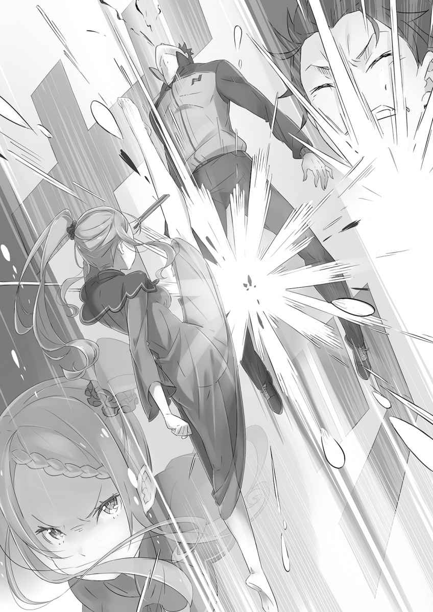
上体を起こされたスバルの鼻からさらに血が流れ出し、息苦しさに咳き込むスバルへ容赦のない言葉が至近から浴びせかけられた。
「──誇るがいい。貴様があの女を、エミリアを破滅に誘うのじゃと」
思い切り突き飛ばされて、スバルの体は床の上を滑って入口の扉前まで転がる。
転がった後を転々と血の痕跡が残るが、プリシラはその血痕よりもスバル自身を見ている方が不愉快だとでも言いたげな顔つきで、
「──アルデバラン！」
鋭い声で叫ぶと、外と繋がる唯一の扉が向こう側から開かれた。
顔を出したアルが、扉の前で血塗れのスバルを見る。
「おいおい、こりゃどうしたってんで......」
「その不愉快な愚物を放り出せ。なんなら斬り捨てても構わん」
「そら構うだろ、色々と......ほら、行くぜ、兄弟」
憤慨する主に抗弁せず、アルは倒れるスバルを軽々と担いでそそくさとドアを潜る。
だが、去り際にそっと部屋の中のプリシラへ顔を向けて、
「そう怒んなよ、姫さん。可愛い顔が凶暴さで価値落とすぜ？」
「貴様の崩壊顔をより破壊してほしくないなら、とっとと連れてゆけ。二度は言わんぞ、アルデバラン」
「その名前で呼ぶなっつの」
投げやりに言い置いて、アルはスバルを担いだままとっとと扉を閉めた。
足早に階段を下りながら、アルは肩の上のスバルを気遣う声で、
「とりあえず、早めに逃げといた方がいいぜ。姫さんのこった。すぐに気が変わって首を落とせとか言い出しかねねぇ。斬らなくてもいい内に逃げとけや」
「あ、ふぁ......？」
「ダメだ、こりゃ。連れの嬢ちゃん呼んでくっから、あとは外でどうにかしてくれ」
意識が朦朧としているスバルの様子に、アルは難儀そうに器用に肩をすくめる。
それからさらに速度を上げて、階段を飛ぶように駆け下りていった。
５
「──スバルくん!?」
屋敷の門扉に寄り掛からされて座るスバルの姿に、顔色を変えたレムが駆け寄る。
レムはだらりとくずおれているスバルに触れて、その負傷の度合いを確かめながら治癒魔法を詠唱する。淡い光が、スバルの顔の傷口を包んでいく。
「上で何があったんですか？」
「あー、アレだ。どうも、うちの姫さんのご機嫌を損ねちまったらしい。気を付けろって言ったんだが......まぁ、猫の機嫌を完璧に予想しろっつっても無理があるしな」
バツが悪そうなアルの答え。だが、その物言いには罪悪感や謝意が欠片もない。
その態度にレムは唖然とし、抗議の声を上げようとする。だが、
「......何も、言わなくていい」
「──！ スバルくん。意識は大丈夫ですか？」
脳震盪が癒されるに従い、朦朧とした意識がまとまり始める。スバルの声に顔を明るくしたレムが、さらに治療に集中するように目をつむる。
「スバルくんは本当に目の離せない人です。ほんの小一時間離れていただけなのに、こんな大ケガをして戻ってくるんですから」
「俺も、ケガしたくてしてるわけじゃ......」
血の巡りが正常に戻ると、再び鼻腔から血が流れ出す。とっさにかざした手で滴る鼻血を受け止めると、レムが懐から出した手拭いをそっと顔へ当ててくれた。
「押さえていてください。血が流れ切れば自然と止まります。治療、続けますね」
「......あぃ」
レムの言いつけ通りに鼻を押さえ、スバルはじんわりする治療のマナを受け入れる。
と、その様子を眺めていたアルが「大丈夫そうだな」と頷き、
「いるだけなら意味ねぇし、オレも中に戻るわ。何の話してたんだか知らねぇけど、あの様子じゃうまくいかなかったみてぇだし。あんまし戻るのが遅ぇと、姫さんが本気で兄弟をぶった斬れとか言い出しかねねぇ」
「スバルくんを斬る......!?」
「おっかねぇ顔すんなよ、嬢ちゃん！ 言い出しかねねぇって話！ だから言われる前にちゃちゃっと逃げとけ。オレもやりたかねぇよ、そんなこと」
過敏に反応するレムに大袈裟に答えて、アルはだらしなく肩を落とすと首を傾け、
「んじゃ、養生しろよ、兄弟。そっちの嬢ちゃんも......あー、確かラムっつったか。兄弟のことよろしく頼むわ」
「──ラムは姉様の名前です。レムの名前はレムと申します、アル様」
軽い口調で別れを告げて、背を向けかけたアルにレムが正式に名乗る。
途端、アルの足が止まった。
「......レム？」
足を止めたアルは微かに上を向き、それからゆっくりとこちらを振り返った。
「馬鹿言うんじゃねぇよ。ラムだろ？」
「レムです。......失礼ですが、アル様はどこかで姉様と？」
瓜二つの姉と間違われたことを、レムはそう解釈して聞き返した。しかし、それに対するアルからの答えはない。
アルは持ち上げた隻腕で自分の兜に触って、忙しなくその金具をカチカチ鳴らす。
「どういうことだ、オイ......」
何が納得いかないのか、アルの声には焦りがあった。それを証明するように、兜を弄る指の動きも徐々に速くなっている。
「嬢ちゃんはレムで......姉ちゃんがラム」
「はい、そうです」
「こんなこと聞くとアレだが......嬢ちゃんの姉ってのは、生きてんのか？」
「......？ 質問の意図がわかりませんが、姉様は当然、存命です」
レムがそう応じた瞬間、黙ってその会話を聞いていたスバルの肌が粟立った。
「──冗談じゃ、ねぇ」
低く、冷たく、その声は重々しい響きを伴って鼓膜を叩いた。
兜の上から額に触れながら、アルは俯き加減に喉から絞り出すように呟いていた。
そこでようやく、スバルは悪寒の正体がアルの放つ鬼気であると気付く。
この場にいてはならないと、本能が警鐘を鳴らしている。同じものをレムも感じたらしく、彼女はそっとスバルへ寄り添うと、
「スバルくん。肩を貸せば立てますか？」
治療を中断し、腰を屈めたままのレムが警戒も露わにそう聞いてくる。
その言葉に顎を引いて頷き、スバルはレムが動くのに合わせようと息を整えた。
「安心しろよ。何もしねぇから」
だがその警戒は、頭を振って鬼気を押さえ込んだアルの様子に杞憂となった。
張り詰めていた緊迫感が消えて、スバルは思わず肩を落とす。レムすらも安堵感に、その無表情をわずかに和らげた程だった。
「嫌われ雰囲気解けたとこで悪ぃが、とっとと行ってくれや。今のでわかったと思うが、オレもどうやらあんまし機嫌がよくねぇ感じだ」
「......わかりました。お時間をいただき、ありがとうございましたとお伝えください」
「あい、了解。気ぃつけてな」
どこか白々しい社交辞令を交わし、レムに肩を貸されてスバルは歩き出す。
小柄なレムに体重を預けながら、二人はバーリエル邸からゆっくり遠ざかった。
坂を下り、屋敷から遠くなる二人の背中を、アルはジッと睨み続けていた。
「ふざけるなよ。アレが、そうだってのか......反吐が出るぜ」
６
──プリシラ・バーリエルとの交渉が決裂に終わり、今度こそ全ての道は潰えた。
「最優先だった戦力確保は、俺には届かないってことなのかよ......」
絶望感と無力感に打ちひしがれながら、スバルは自身の鼻に触れてそうこぼす。
貴重な一日の午前をプリシラに潰されて、今はちょうど正午を迎えた頃だ。スバルの設定した王都出立の制限時間までは半日──時間的な余裕はさらに失われている。
なのに状況は一進一退どころか、後退するばかりなのだから話にならない。
「それにしても、あのクソ高慢女が......助けてやった恩も忘れやがって......！」
初対面のとき、悪漢に囲まれるプリシラを連れ出した功績を口にして、スバルは忌々しさに唇の端を歪めて舌打ちする。
恩義になど欠片も思っていない態度だったのは事実だが、こうして藁にも縋る思いで助けを求める相手にすら、ああまで無情に対応するとまでは思わなかった。
アルもアルだ。主人の暴挙に対して何も諌めようとしない薄情さ。何のための同郷人なのか、使えない男だ。
「どいつもこいつもクソ喰らえだ。何も知らねぇくせに。何もわかっちゃいねぇくせに......誰も何も守れないくせに、俺の邪魔ばっかりしやがって......ッ！」
歯軋りして、苛立たしげにスバルは奥歯を噛みしめる。唇の端が切れて血が舌を濡らすが、怒りと屈辱が鉄の味すら感じさせない。
「──切り替えろ、切り替えろ。あんな馬鹿共に引っかかってる場合じゃねぇ」
考えなくてはならないことが多い。
レムを最後の悪足掻きに送り出し、スバルは彼女との待ち合わせ場所に向かう。足は貴族街の通りを抜けて、王都中層の商業区へと入っていた。
そのまま人混みを掻き分け、目的地に真っ直ぐ向かっていたときだ。
「おー！ そこのおにーさん！ すごー痛そー！ だいじょびー？」
「あ？」
唐突に声をかけられ、驚くスバルは視線を斜め下に向けた。
相手の身長が低いのだ。相手はスバルの腰ぐらいまでの背丈しかなく、背伸びして覗き込むようにこちらを見上げていた。
橙色の体毛にくりくり眼、愛らしい顔立ちを喜色で満たした子猫の獣人だった。
「血、出てたんでしょー？ ミミもたまに、ゴハン食べてるときに口の中かむからわかるー！ あれすごー痛い！ 泣きそー？ 泣きそー？」
「そんな子どもみたいな理由で出た血じゃ......いや、忙しいからまたな」
「治さなくていーの？ すんすん、すんすん。それにおにーさん、口だけじゃなくて血の臭いするよ？ 鼻血だばだば出た？」
プリシラにやられた傷はとっくに塞がったはずだが、少女の嗅覚は名残を感じ取ったらしい。面白くない記憶が蘇りかけて、スバルは少女を突き放そうとする。
「こーら、ミミ。人に迷惑かけたらダメやないの。おいたしたらあかんよ」
しかし、スバルがそうするより先に、少女の連れが彼女を見つける方が早かった。柔らかな声にミミと呼ばれた少女が振り向き、短い腕を元気いっぱいに振る。
そして、その様子を微笑ましげに見つめて歩み寄ってくる人物は、
「──っ」
「えらいすみません。ウチの子ぉがご迷惑かけて......んーん？」
息を詰めるスバル。その態度に相手の謝罪が中断し、すぐに気付いた顔になった。
驚きが一瞬で消えて、代わりに予想外の出来事を歓迎するような色が瞳に宿る。
「確か......そう、ナツキくんや。エミリアの騎士、ナツキ・スバルくん。──君、まだ王都におったんやね。これは奇遇やないの」
色素の薄い、柔らかな紫色の髪をした小柄な女性だ。細められた浅葱色の瞳は、相対する者の心を穏やかにくすぐる光を宿している──だが、この女性の本質が捕食者であることをスバルは知っている。
見かけた場所は違えども、その異質な雰囲気を見間違えるはずもない。
「アナスタシア・ホーシン......」
「ん、そう。ちゃーんと覚えててくれたんやね。よかったわぁ。ウチ、あの場やと印象薄いんやないかなって心配してたんよ。ホッとしたわ......あんだけ色々大変やったナツキくんが覚えててくれてるんなら、他の人もきっと大丈夫やもんね」
耳に慣れない関西弁──カララギ弁を操るアナスタシアが、はんなりと微笑む。
まさかの遭遇にスバルは驚き、それから周囲に視線を走らせた。アナスタシアがここにいるということは、その周りにはあの男の姿が──。
「安心し。ユリウスとは別行動中。こっちに来たりせぇへんよ」
「......そうかよ」
焦りの原因を見抜かれて、スバルは居心地の悪さを返事に乗せる。口に手を当てて楽しげなアナスタシアに、主従揃っていけ好かないという感想を抱いた。
予定外の遭遇、だがこれを好機とはスバルには考えられない。
もとより、ユリウスのことがある。練兵場での彼との確執を考えれば、アナスタシアの陣営とはどうあっても絶対に手を組むことなどできないのだから。
「ひとまず、体の調子はよさそうやね。ほんのちょっぴりやけど、心配してたんよ」
「......そりゃどうも。あんたの方こそ、調子はよさそうだな」
「ぼちぼちやなぁ」
「おー！ ぼちぼちでんなー！」
スバルの皮肉に関西人そのものの返事があり、それを楽しげに子猫が笑う。こちらの少女はミミと呼ばれていただろうか。アナスタシアは彼女と二人連れのようだ。
「今をときめく王選の主役が、護衛も連れずにふらふらしてていいのかよ」
「一応、ばれんように変装したつもりなんやけど、あかん？」
その場でくるりと回り、町娘の格好を意識した変装を見せつけるアナスタシア。確かに衣装から彼女らしさは抜けたが、肝心の白い狐の襟巻きと巨大がま口が健在ではそれも説得力がない。スバルの白い目で、大体の感想を悟ったらしいアナスタシアは笑い、
「ま、ウチの魅力が隠れ切らんのは仕方ないもん。それにいざとなったら、うちの頼れる副隊長さんが頑張ってくれるから心配いらんよ」
「頼れる副隊長......？」
薄い胸を張るアナスタシアが、視線でミミを見るのにスバルは怪訝な顔をする。こちらそっちのけで露店を冷やかすミミの姿に、そんな雰囲気は微塵も見当たらない。
「疑っとる顔つきやけど、ほんまの話よ？ あの子、ウチの私兵団の二番手やから。ユリウスと戦っても、ナツキくんよりよっぽど健闘すると思うわぁ」
「............」
「あ、怒った？ ごめんごめん、堪忍な？ イジメ甲斐のある子ぉ見ると、ついな？」
何が『つい』なのか。スバルは唇を曲げて不満を露わにする。
「世間話したいだけなら行っていいか？ そっちと違って、俺はやることがあるんだ」
「なんやの、つれないんやから。やることぉて、何のことなん？」
「連れと待ち合わせてんだよ。それから王都を出る竜車の手配とか、色々だ」
レムと待ち合わせているのは、王都正門と通じる大通りの食事処の一つだ。悪足掻きの成否に拘らず、数時間後には竜車を手配して王都を出る必要があった。
「ふーん、竜車の手配。それやけど、当てはあるん？ 今、王都で竜車ぁ確保するんは実はだいぶ骨なんよ。色々と、厄介事が重なっとるみたいやからねぇ」
「竜車の手配がしんどい？ そんなはず......」
ない、と続けようとしてスバルは言葉に詰まった。
これまでのループ、当たり前のように竜車を使ってメイザース領まで戻っていたが、一回目の世界で利用した竜車はクルシュから借り受けたものだ。二回目も大きな違いがないのであれば、同じ理由でクルシュに貸し出されたものと考えられる。
「どこぞの誰かが王都中の竜車を買い集めたとか。そんなこんなで、今の王都で竜車を借りよ思たら、駆け回らなあかんよ」
「......マジかよ」
含み笑いするアナスタシアに、スバルは呆然とそれだけ呟いた。
彼女に嘘をつく理由はない。ここへきて、王都を出るだけのことが障害になる。信じられないほど、苦難ばかりが降りかかる展開にスバルは頭を抱えてしまう。
「お嬢、イジワルしたらダメー」
だが、そんな風に俯くスバルを見て、ミミがアナスタシアの袖を引いていた。
「竜車って、あのトカゲでしょー？ お嬢がおにーさんにかしてあげたらいーじゃん」
「竜車を貸してって、持ってるのか!?」
「そらウチも商会の代表者やし。竜車の一台や二台、都合つけられるよ？ やけど、ナツキくんはウチとお話したくないみたいやしぃ」
「ぐ......っ。さっきは、その、態度が悪くて......」
立ち話を切り上げようとしたことを指摘されて、バツの悪い顔でスバルが口ごもる。その様子に、アナスタシアは口に手を当ててくすくすと笑った。
「ええよ、ええよ、許したげる。代わりに世間話、付き合ってもらおか？ 頼み事するんも何も、円滑な人間関係が大事や。場所は、その待ち合わせのお店でええから」
その可憐な商売人の微笑み、それを拒む言葉の持ち合わせはスバルにはなかった。
７
「お昼にはまだちょこっと早いけど、お店で手ぶらはあんまりやからね」
そう言って、アナスタシアがカウンターから軽食を運び込んでくる。パンに野菜と肉を挟んだ、縦長のハンバーガーのような食事だ。ミミがアナスタシアからそれを受け取り、嬉しそうな顔でかぶりついている。
場所は王都正門前大通りの軽食屋だ。王都で一番人通りの多い場所だけに、ひっきりなしに人の出入りがある。店内は満席で、スバルたちが座った席が最後の空席だった。
「ナツキくんも、遠慮せんと食べてええんよ？ ここで待ち合わせするくらいやから、ご飯も食べるつもりやったんやろ？」
「頼み事する上に飯まで奢られたんじゃ居心地が悪ぃよ。飯なら連れがきたら一緒に食うから放っておいてくれていい。アナ......いや」
席数は多いが、店内はそれほど広くない。ごみごみと狭苦しい場所で、アナスタシアの名前を直に呼ぶのは躊躇われた。
「そこまで気ぃ遣わんでもええけどね。呼び難かったら、お嬢でもいいんよ？」
「それはそれで呼びづれぇって。......それで、竜車のことだけど」
「さっそく本題に入ろうとする。自分の目的ばっかり優先やと相手は喜ばんよ。交渉の基本は、どんだけ相手の懐に入れるか。ナツキくんはそこがあかんね」
気が逸るスバルにダメ出しして、アナスタシアも自分の分の食事に口を付ける。野菜と肉が咀嚼され、ソースを舐めとる舌がどこか艶めかしい。
クルシュやプリシラもそうだが、やはりアナスタシアも仕草一つ一つにどこか常人と異なる魅力がある。王選の候補者が持つ、何がしかの資質の表れというべきか。
「食べてるとこ、ジッと見られるんはちょっと恥ずかしいわ。ウチ、育ちが悪くてマナーがなってへんもん。食べ方、変やない？」
「それを指摘できるほど、俺も教養レベルが高くねぇんだ。......じゃなくて、全然変じゃないと思う。大口開けてかぶりつく女の人って、その、珍しいから」
「......それ、ひょっとして懐に入ったろ思て言ってるん？ それならダメダメやね」
スバルの絞り出した歩み寄りを、アナスタシアはけらけらと笑って低評価を下す。彼女の無慈悲な判断に、スバルは早くもお手上げだ。
「あのさ、冗談じゃないんだ。本当に困ってるんだよ。だから本題に入りたいんだ」
「情に訴えかけるんも、ウチみたいな人種が相手やと下策中の下策やねぇ。でも、頑張りは認めよか。竜車の手配、やったね」
言いながら、アナスタシアが懐から羽ペンを抜いた。それから彼女はパンを包んでいた紙を広げると、そこにさらさらと何かを書き込んで折り畳む。そして、
「この紙に竜車が残ってるはずのお店の場所と、ウチの名前でサインしといたわ。これだけ回収したら、ナツキくんの目的は完了やね」
「もったいぶるなよ」
「もったいぶるよぉ。やって──タダで渡したら面白くないやろ？」
静かに言って、アナスタシアが折り畳んだ紙をカウンター席の上に置いた。そっと掌をかぶせてこちらの視線から隠し、たじろぐスバルに微笑みかけてくる。
先ほどから何度も見せていた彼女の微笑み、その質がこれまでと違って見えた。
「そんな肩に力入れんでも平気やって。ウチはただ、世間話に付き合ってほしいだけ。必要な話だけしてお別れやなんて寂しいやないの。せめて連れの女の子がくるまで、ウチとお話してくれても欲張りやないと思うわぁ」
「なんで、そこまで俺みたいなのとの世間話に拘るんだよ。得るものなんてないだろ」
「何の意味もないことなんて、この世のどっこにもないとウチは思うとるよ。どこの誰からどんな着想が得られるかなんてわからんもん。せやけど、その中でもナツキくんはとびきりのもんが得られる、そんな気がするんよ」
「......それが、王選のあの場所で持たれた印象ってんなら歓迎しねぇな」
「あの場所以外で、ウチとナツキくんに接点なんてないやん？」
スバルの苦し紛れの皮肉を、それ以上の正論でバッサリと切り捨てる。アナスタシアの要求と目的とを天秤にかけて、スバルはすぐに観念した。
「本当に、レムがくるまで話すだけだな？ それでその紙は渡してもらえる」
「ウチは嘘もつくし騙しもするけど、これはホント。書面で誓ってもええよ」
「いけしゃあしゃあと言ってくれるぜ。......何を話したらいいんだ？」
「最初にちゃんと言ったやろ？ 交渉の基本は相手の懐に入り込むこと。話し上手は聞き上手って言うてな。まず、相手に興味を持つことから始めるのがええんやないかなぁ」
つまりは嫌々話に付き合う姿勢をまず見せるな、という苦言だろう。機嫌を損ねて、約束を違えられても困るのだ。スバルは頭を掻いて考え込む。
「ね、ね、お嬢、お嬢。ミミ、さっきのもっと食べたい。頼んでいーい？」
「ええよ、好きなだけ食べ。あ、でもソースでお口汚すんはダメ。せっかくの可愛い顔がペタペタなるやん。それも可愛いけど」
「ぐしぐし拭いてー！ やたー、いってくるー！」
アナスタシアに顔を拭かれて、ミミが大はしゃぎして元気よく店員のところへ向かう。その小さな姿に、スバルはピンときた。
「さっき、あのちびっ子のことを副団長って言ってたけど」
「なに？ ウチのことやなくてミミのこと？ ナツキくん、そういう趣味なん？ 猫耳がついてたら見境なくなる性質？ それやったら、うちの子に近付かんといてな？」
「そんな厄介な性癖なんて持ってねぇよ。第一、そんなんだったら......」
あの分からず屋の屋敷にいた、猫耳の騎士の姿が思い出されてスバルは歯噛みする。
「とにかく、違う。純粋に気になっただけだ。私兵団って言ってたと思ったけど」
「カララギやと有名なんやけどね。ウチのホーシン商会の専属の傭兵団『鉄の牙』。出資者がウチやから、団員を選ぶ権利もウチにあんの」
そう言って、アナスタシアがうっとりとした目をミミの背中に向ける。
「メチャメチャ可愛いやん？ 抱いて寝ると、もうたまらへんよ？」
「そういう趣味って、むしろそっちが言われるべきじゃねぇか。まさか副団長とか、そういう人事までコネ人事ってんじゃねぇだろうな」
「そこは心配せんで大丈夫。言ったやろ？ あの子は『鉄の牙』の二番手、実力で持っとる副団長の座ぁや。そうやないと、ウチと二人で王都の散策なんてできんもん」
その言葉に絶対の信頼を感じて、スバルはもう一度ミミの小柄な背中を見る。
とても強そうには見えない。しかし、アナスタシアの言葉には説得力があった。王選候補者を一人で護衛するなど、実力が見込まれていなければ不可能な人事だ。
「あ、言っとくけど、団員の詳細までは話さんよ？ ウチも手勢を全開にするほど気前よくはないんやから。むしろ、気前は悪い方やって自信あるわ」
「それこそ、自信持つようなことでもなんでもねぇよ......」
突っ込んだ話を避けられたが、スバルは一つの脅威として『鉄の牙』の名を脳裏に刻み込む。いずれ、アナスタシアと明確に敵対するとき、立ちはだかる壁の一つとして。
「ナツキくん、眉間に皺寄せすぎや。目つき、悪ぅなってるよ」
「目つきの悪さは生まれつきだよ。人のコンプレックス気軽に抉るな」
「コンプ？ んん、ええわ。それにしても、生まれつきで思ったんやけど、ナツキくんはどこの出ぇなん？ 黒髪なんて滅多におらんし、その服装も珍しいし」
「出身は地球の日本で、この服はジャージってもんだ。たぶん世界で一着しかない」
正直に答えた方が、まるではぐらかしたみたいな形になるから不思議な話題だ。
案の定、アナスタシアは煙に巻かれたような顔で唇を尖らせる。
「チキューのニッポンって、聞いたことないけど......どこの話？」
「大瀑布の向こう側だよ。東の東、さらに東のジパングだ」
「大瀑布......」
笑い飛ばされるものと、投げやりに言ったスバルの言葉にアナスタシアが考え込んだ。予想と違うリアクションにスバルが眉を寄せる。
「笑わないのか？ ラインハルトには馬鹿受けだったんだけど」
「ん。そう、やね。極々たまに、大瀑布の向こうからきたなんて言う人がいるいう話は聞いたことあるんよ。まさか、自分で出くわすとは思わんかったけど」
「ユーモアのある人間が俺以外にいるもんなんだな。有名人か？」
「いつか、『荒れ地のホーシン』に興味があったら調べてみたらいいと思うわ」
笑みのない顔のまま、アナスタシアがスバルにそう教えてくれる。『荒れ地のホーシン』と聞いて、スバルは首をひねった。ホーシンとはまさにアナスタシアの家名だ。そして『荒れ地のホーシン』という英雄譚は、スバルにも聞き覚えがある。
「ホーシンとは、関係者ってわけじゃないんだよな？ 確か、あやかってその名前をもらったとかって言ってた覚えがあったけど」
「カララギを建国した人の名前やし、カララギ出身のウチからしたら無関係ってわけでもないけど、血の話なら何の関係もないよ。ウチが勝手に名乗っとるだけ。商売と立身出世の神様みたいなお人の名前やし、縁起もええやろ？」
「それって、すげぇ度胸がいる話だな」
神様の名前を自ら名乗り、その功績に恥じないことを自分に課すという覚悟だ。
王選の場で、王国すらも私欲で手に入れると豪語したアナスタシアの姿が思い浮かぶ。ああした振舞いの原点で、すでに彼女は後戻りできない一線を引いていたのだ。
「失敗してたら指差されて笑われてたやろけどね。でも、ウチはここまできた。まだまだ道の途中やから、偉そうなことは言わんとくけど」
アナスタシアの出自の片鱗は、王選の場での所信表明で触りだけ聞いている。カララギの貧民街で育ち、その後は商才だけを頼りに今の地位にのし上がったという話だ。
一国でも名うての大商家を従え、王国の王位を争う立場に名乗りを上げる。
今さらではあるが、目の前にいる人物の破天荒さを思い知った気分だった。
「どうして、そこまでできる？ 失敗したらとか、怖いと思わないのか？」
「お、なんやのなんやの。ナツキくん、やっとまともにウチに興味持ったん？」
含むところのない、純粋な疑問が口をついて出た。それはアナスタシアが受け取った通り、やっと彼女を正面から見たことで出た質問だったかもしれない。
ただの嫌な相手でも、ユリウスを連れた人物でもなく、アナスタシア個人として。
「失敗、失敗なぁ。そら、ウチも怖いと思うよ？ ウチかてこれまで全戦全勝やなんて口が裂けても言われんし。ただ、ここぞの勝負では勝ち続けてきてるけどね」
「その賭けの連続も、ここまででいいとか思わないのか？ だって、もう十分だろ。大商人になって、仲間もたくさんいて、それで」
「──十分やなんて言わんでくれる？ ウチの満足はウチにもわからんもん」
ふいに低い声と浅葱色の瞳に貫かれて、スバルは思わずたじろいでしまう。
「ウチな、夢があるんよ」
押し黙るスバルに、アナスタシアがふっと唇をゆるめて急に話題を変えた。何も言えないスバルを余所に、彼女は指先でカウンターを軽く叩く。
「貧民街で明日をも知れん毎日を過ごして、その日暮らしが精いっぱいな中で、夢を持ったんよ。......ウチがこの手で、手に入れられるものは全部手に入れよてな」
「自分の手で、手に入れられるもの全部......」
「ウチが何者になって、どこまでいけるのか確かめるんがウチの夢。せやから、このぐらいで満足やなんて妥協だけは絶対にせんよ。命ある限り、ウチの手の届く限り、掴めるものは全部ウチのものにする。何もかもなくして無一文で死ぬか、たくさんのものに囲まれて満たされたまま死ぬか。──結果が出るまで、ウチの人生の大勝負は続くんよ」
圧倒、された。
目の前の小柄な少女が、まるで見上げるほど強大な大人物であることを理解する。
クルシュとも、プリシラとも異なる人間的な素養。だが、決して彼女らにも劣らない強烈なカリスマ。否、今のスバルにとっては、その二人よりもよほど好感が持てる。
分からず屋のクルシュと決裂し、傲岸不遜なプリシラに袖にされたスバルの前に垂らされた、天からの最後の縋る糸──あるいは、彼女がそうなのではと思うほどだった。
戦力を引っ張ることができずにいるスバルに、力を貸してくれる最後の可能性。
「なぁ、アナスタシアさん。折り入って、話があるんだが......」
最初の厄介払いのような姿勢を投げ捨て、スバルはアナスタシアに神妙に向き直る。
彼女に頼る。そう考えると脳裏をちらつくユリウスがスバルの胸を突き刺すが、その感傷を無理やりに押さえつけ、話を持ちかけようと試みた。
「たーんま。さっきからナツキくんが聞いてばっかりやん。ウチに興味持ってくれたんは嬉しいんやけど、それやと不公平やないの」
しかし、その決心の出鼻をアナスタシアのはんなりとした声が呼び止める。
「不公平って、それどころじゃ......いや、なんだ。言ってくれ」
「そそ、譲り合いも大事。交渉以前に対人関係の問題やね。......ナツキくんは王都を出るみたいやけど、もう十分に観光はできたん？」
「観光って、呑気なこと言ってんなよ。俺はそんなつもりないし、アナスタシアさんだってそうだろ。お上りさん気分でぶらり旅なんてしてる場合か？」
話を遮ってまで出てくる話題がそれかと、スバルは舌打ちしそうになる。
「ぶらり旅やなんてつもりないけど、観光も馬鹿にしたもんやないよ。──人がたくさんいるところを見て回ると、それだけで見えてくるもんなんかもあるんやから」
苦笑が途中で消えて、アナスタシアの声がわずかに低くなる。その態度と表情の変化に目を奪われるスバル。彼女はそんなスバルに、顎をしゃくって通りを示した。
「この通りも、さっきの商い通りも雰囲気が前と違うやろ？ ナツキくんは気付かん？」
「......そう言われれば、殺気立ってたような感じはあったな」
ほんの数日と数時間、スバルが知る王都の光景はそんなものだが、そのスバルにも違いが肌で感じられるほど、王都の雰囲気は以前までと違ってしまっている。
「顔ぶれが違うんや。王選の話を聞きつけて、余所から業突く張りが集まってるんよ」
「自分を棚に上げて、業突く張りとかよく言うもんだな」
「そら、小金狙いのみんなと国狙いのウチとで欲張り比べしたら可哀想やん。それに商機は速度が命......鼻の利く人らの動き見たら、もっと上の動きも見えたりするよ？」
アナスタシアの言った、『上の動き』とやらはスバルにはない考え方だった。
「上が動けば人が動く。人が動けば物が動く。せやから、今の王都には各地から行商人やらがわんさと入ってくる。人を見た後は物を見る。ここからも色々と見えてくるわけ」
「物を見るって......売り物か？ 今の王都で、売れてる物に何か意味があるって？」
「呑み込みがええね。ちなみに、今の王都では色々と物の価値が変動しとるんやけど、特に重宝されるんは鉄製品。剣やら槍やらの武器が、王都の内外から集められとるよ」
「鉄と武器って、その話は聞いた覚えが......ああ、オットーだ」
一回目の世界で同行した行商人、オットーとの会話だ。不良在庫を大量に抱えて酒浸りになっていた彼だが、どうやらこの時点で破産は確定していたらしい。
「それにしても剣と鎧......鉄を集めてるってことは、それも武器とかにするのか？ 集めてる奴は、まさか戦争でもする気でいるんじゃねぇだろうな」
「さて、どうやろね。目的は物そのものより経済を回すこと、って可能性もあるよ。自分主導で好景気を作ったんなら、それだけで名声稼ぎには十分や。商人連中は横の繋がりが強い......喉から手ぇ出るほど、欲しい評価やと思うもん」
確かに、商人からすれば商機を生み出してくれた相手には感謝の一つもあるだろう。商業の活性化は都市の活性化にも繋がる。アナスタシアの理屈にスバルは納得する。
「今の口振りだと、鉄を集めてる奴が誰なのか有名なのか？ それって誰......」
「ナツキくんも、よぅ知ってるお人やよ」
「俺の知ってる相手って」
「──クルシュ・カルステン公爵。王都で鉄を買い漁ってるんは、クルシュさんや」
「クルシュが......？」
何気なく話を進めて、身近な名前が出たことにスバルは驚いた。
だが、考えてみると思い当たる節もある。連日のクルシュの屋敷への来客。あれは有力者との折衝だけでなく、商品を持ち込む商人との交渉のためでもあったのかもしれない。
「そうか、ラッセルが顔を見せたのもそれが理由......」
「ラッセル・フェロー？ 大物やね」
当然といえば当然だが、ラッセルの名はアナスタシアも既知のものだったようだ。
そして彼女の情報のおかげで、スバルの中でも散らばるピースが結びついていく。
「庭園の大荷物に、夜中も出入りする人たち。全部、商人を味方につける戦略か？」
クルシュと盃を交わした夜や、忙しく動き回る使用人たちの姿が思い出された。ただそれらの姿と、鉄製品ばかりを集める行動の真意がどこか真っ当に重ならない。
もっと、何かそれだけではない思惑が絡んでいるような気がして──。
「......そんなこと、今さら俺に何の関係があるんだよ」
疑問を追い求めようとして、その途上でスバルは徒労感を覚えてそれを投げ出す。
クルシュが何を企み、王都の経済を掻き回しているかなんてスバルには関係ない。スバルにとって重要なのは、魔女教に対抗する手段、それだけだ。
なのにどうして、こんな余計な思考に意識を割かれなくてはならないのか。それは、
「──まあまあ、参考にはなったかなぁ」
思考が行き詰まったところで、正面のアナスタシアがそう呟いた。
やけに印象的に響く声にスバルが顔を上げると、彼女はそっと掌を差し出す。思わず受け取ったのは、竜車の手配に必要と前置きされていた走り書きだ。
「ありがとな、ナツキくん。十分、聞きたいことは聞き出せたわ」
走り書きとアナスタシアの笑顔から、スバルは話の終わりを悟る。
だが、まだレムは店にきていない。なのに、もう十分という台詞は──。
そこまで考えて、スバルははたと違和感に気付いた。遅すぎる、違和感に。
「......これは、偶然か？」
「──さて、ナツキくんはどう思う？」
歯軋りするスバルに、アナスタシアの淡々とした声がかかる。彼女の浅葱色の瞳はまるで、スバルの表情の変化を見逃すまいとするようにこちらを射抜いていた。
──自分の演出した舞台で、まんまと踊った道化師の顛末を見届けるように。
「通りで出くわしたときから全部仕組んでたのか。俺から、今の話を聞くために」
「ケンカ別れして、クルシュさんのとこ出たんが昨日の夜やろ？ 今なら口も目も表情も、色んなところが滑らせやすいん違うかなと思うたんよ」
謀られた。その事実にスバルの頭に血が上り、喉が詰まった。
「こ、んなやり方して満足なのかよ！ こんな......騙し討ちみたいなやり方で！」
「ウチかて心が痛いんよ。やけど、ウチとナツキくんの関係で、笑い合いながら円満に情報交換なんて難しいやん。信用ない取り引き、保険かけて当然やないの」
面と向かって、信用のない相手とそしられたことが胸を突いた。
胸に手を当てて、スバルはアナスタシアを親の仇でも睨むような目で射抜く。
「お前もそうやって、俺が気に入らないからって間違うのか......」
「ウチが間違う？」
「目の前のつまらないことに引っかかって、大事なものを見落とすって言ってんだよ！ 正しい道を見過ごして、間違った答えに後悔するのに......！」
「何が正しいとか、何が間違ってるとか。まぁ、色々と考え方があるとは思うけど、ウチから言えることはとりあえず一つや」
歯軋りするスバルに小首を傾げて、アナスタシアはあくまで微笑みを崩さない。
「自分の正しさを信じてもらいたいなら、相応のものを見せなあかんよ。そしてウチはナツキくんにそれを見ない。評価を変えるには、別の評価で覆す以外にない」
「────」
「評価を決めるんはそれまでの行い......つまり過去や。何をどうしても過去は変わらん。やから、ウチの中のナツキくんの評価も変わらんまま」
自分の薄い胸を軽く叩き、アナスタシアが激高するスバルを上目遣いに見る。
そして、
「やらかしたことは、絶対に消えてなくならんよ？」
「──ッ!!」
「おにーさん、お嬢にそれ以上はちかづいたらダメー。ミミ、ちょーつおいから」
思わず踏み出しかけたスバルの顔に、大きな杖が突きつけられていた。ミミだ。スバルとアナスタシアの間に割り込み、逆上するスバルを牽制している。
「ありがと、ミミ。でも、なんもせんでええよ。ナツキくんも何もできんはずやから」
「......っ！ 俺が！ 何もできないなんて勝手に！」
「ありゃ、ウチ痛いとこ突いてもた？ せやったらごめんな？ けど、利用したことは謝らんよ。取れるところからふんだくるんは、商人の鉄則なんやから」
唾を飛ばすスバルから距離を取り、アナスタシアが後ろ手に手を組んで首を傾げる。
「それに、お互い言うほど損のない話し合いやったやろ？ ウチは聞きたいことが聞けたわけやし、ナツキくんもウチに質問いっぱいしてくれたやないの」
「それこそ、お前が誘導しただけだろうが！ 汚い......汚い真似しやがって！」
「やから最初にウチ、嘘もつくし騙しもするって言うたやん。書面で誓おか言うたら、そこまで保険かけなかったんはナツキくんやったはずやけど？」
「どの口がそんなこと......！ お前らは主従揃って最悪だ！ クソ食らえだ！」
最初の直観に、商い通りで顔を見た瞬間の嫌悪に従っておくべきだったのだ。
ユリウスを従えている時点で、彼女は最悪だと理解するべきだった。それをあろうことか話術で誑かされ、信用できる相手なのではと縋ることすら考えさせられて。
どこまで──本当にどこまで、自分は恥をさらせば気が済むというのか。
「......ユリウスも報われんなぁ。ウチのせいでもあるけど」
アナスタシアの言葉に耳を貸さず、スバルは手の中の紙を破り捨てようとする。だが、衝動的に行動する直前に、本当に収穫がゼロになる自覚がそれを躊躇わせた。
「さすがに、そこまで馬鹿はしぃひんのやね。安心したわ。──ミミ」
「あーい！ おにーさん、こっちむいてー！」
荒い息をつき、紙を握りしめるスバルにミミが杖を振りかざす。淡い輝きが、棒立ちのスバルの顔を柔らかく包んだ。
「いたいのいたいのとんでったー！」
「────」
最初の遭遇以来、切れたままだった唇の傷が癒しの魔法に治療される。
言葉の出ないスバルに、ミミはにへらーと悩み事のなさそうな顔で笑いかけた。
「お嬢はこまったさんだけど、悪気はぜんぜんないからゆるしてやってなー？ おトモダチいないからてけとーなの」
「ミミ、余計なことは言わんでええんよ。......そしたら、またな、ナツキくん」
完膚無きまでにやられて、情けまでかけられて。わなわなと肩を震わせるスバルに、アナスタシアが背中を向けた。その背に、飛びかかれたらどれだけいいだろう。
「最後に一個だけ、ナツキくんに交渉のコツの補習や」
立ち止まり、背を向けたままアナスタシアが指を立てて言った。
「交渉の秘訣は、交渉のテーブルに着く前にどれだけ準備できるかぁで決まる。小手先を学ぶんはもちろん、優位な状況を作るのも一緒。自分が知ってて、相手が欲しがるもんをぶら下げる。欲しい欲しいばっかりの、ナツキくんに足らんのはそこやね」
アナスタシアの真意がわからない。今さら、そんな話を聞かされても意味がない。
だが、その言葉の意味するところはすぐにわかった。
「ほんなら、行こか。──みんな」
手を叩き、アナスタシアがそう呼びかける。彼女の挙動にスバルが眉を寄せたのと、店内にいた客が一斉に立ち上がったのは同時だった。
満席の店内にいた客が全員、店の外へ向かうアナスタシアについて出ていく。
全員が頭からフードをかぶり、その素性を隠していた集団だ。注意深く見れば、頭に不自然な膨らみ──おそらく、獣の耳が隠れているのがわかる。
アナスタシアの私兵団『鉄の牙』の名前が、はっきりと脳裏を過った。
「なんだよー、みんないたのー？ あー、おにーさんはまったねー！」
ぞろぞろと並ぶ仲間に笑いかけ、ミミが最後にスバルに手を振って店を飛び出す。そうしてがらんとした店内に残されたのはスバルと店主の二人だけになっていた。
──交渉のテーブルに着く前に、どれだけ準備できるか。つまり、そういうことだ。
「クソがぁ！」
不甲斐ない自分が堪え切れず、スバルはカウンターに拳を叩きつける。店内に客がいなくなり、スバルと同じように困った顔をしていた店主だけがいそいそ奥へ引っ込んだ。
「──スバルくん？」
そのまま、屈辱に肩を震わせていたスバルを呼ぶ声があった。
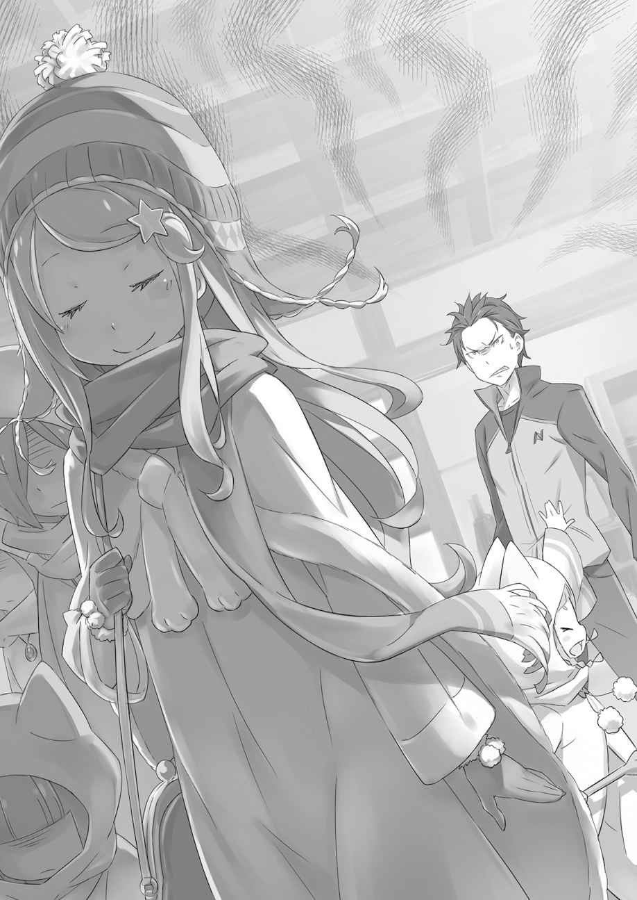
レムだ。店で待ち合わせ、合流する手筈だった彼女がスバルに駆け寄ってくる。
「スバルくん、どうしたんですか？ 何かあった......」
「──なんでもない。レム、結果はどうだった？」
心配するレムの声を遮って、スバルは今の屈辱感を無理やりに押し隠す。
アナスタシアにやり込められた話など、レムに伝え聞かせても仕方がない。頑ななスバルの態度にレムは口をつぐみ、それから別行動の成果を素直に報告した。
「騎士団詰所の方に、魔女教の暗躍を報告してきました。ロズワール様のお名前を出したので、門前払いにはなりませんでしたけど......」
後半にいくに従い、弱々しくなる声の調子にスバルは大体の反応を悟る。
騎士団に遺恨のあるスバルより、ロズワールの使いとしてレムを向かわせた方が、騎士団を動かせる可能性は高い。そう踏んでの最後の悪足掻きだったのだが、
「いい返事はもらえなかったか」
「......似たような報告が騎士団にいくつも上がっているみたいです。魔女教は背景が不鮮明ですから、確かめようのない密告が後を絶たないらしくて」
「ああ、なるほど。本当に魔女裁判とかやってた時代みたいな魔女の扱いなわけだ。......それで本物が隠れちまってるってんなら、笑えねぇ」
潜在的に魔女教を恐れる人々の数だけ、幻の魔女教の存在が各地に生まれてしまう。
その恐怖心が騎士団に密告という形で集まり、結果的に本当の情報の価値までもが薄れて消えてしまう。それはなんと本末転倒なのだろうか。
これは騎士団の怠慢と魔女教の邪悪さにこそ原因がある。
騎士団は上がってくる情報の精査を手抜きせずに行うべきだし、魔女教の奴らは存在そのものが害悪以外の何物でもない。
打つ手全てが不発に終わったと、スバルはそう理解した。
「戦力を掻き集めるのが不可能だっていうなら......悔しいけど、仕方ない」
「どう、しますか？」
「決まってる。屋敷に帰るんだ。戻って、エミリアやラムを連れ出す。王都でも、ロズワールが出かけてる先でもいい。とにかく、あの場所は危険なんだ」
ペテルギウスの哄笑が脳裏に蘇り、口惜しさにスバルは拳を震わせる。
あの骸骨のような面構えを粉砕してやりたくても、肝心の手がそこまで届かない。仮に今の戦力で挑むことを選べば、矢面にレムを立たせることは避けられない。
──それだけは嫌だった。それはもう耐えられなかった。
スバルの行いで、スバルの考えの結果で、レムが傷付くことはもう考えられない。
ペテルギウスと戦うための戦力を用意できないのなら、奴らと事を構えることなど考えてはならない。レムを失う選択肢などもっての外だ。
臓腑は今も殺意で煮え滾り、尽きることのない憎悪の呪詛が頭蓋の中に延々と響く。
「あの、スバルくん。実は屋敷に戻るための、竜車のことなんですが......」
「──手配が、難しいって話だろ。それだったら」
鬼気迫るスバルに、レムが言い難そうに進言する。彼女の懸念に頷き、スバルはアナスタシアから渡された紙切れを開いた。そこには約束通り、店舗の名前とサインがある。
惨敗を喫した交渉の中で、スバルがお情けで恵んでもらった戦利品だ。
「この店に話を持っていけば、悪いようにはされないはずだ。それぐらいは、確かだ」
「本当ですか？ そんなものどこで......スバルくん、さすがです！」
「さすが。さすがか。......はは、レムは面白いな」
「──？」
入手した経緯を知らないレムに、皮肉の意図も悪気もあったはずがない。
それでも、スバルは渇いた笑みが浮かぶのを堪えられなかった。
「時間がない。すぐにでも出よう」
戸惑うレムを連れて、スバルは教えられた店舗を目指して大通りへと踏み出す。
入り乱れる雑音に苛立ち、舌打ちしながら土を踏んだ。
「まだ一日半──今から王都を出立できれば、三日目の間に屋敷に辿り着ける。そうすれば、エミリアたちを連れ出す時間もあるはずだ」
一回目の世界を回想し、スバルは時間制限を何度も何度も検証した。
確実であると言い切れずにいるのは、二回目の世界の記憶が判然としないためだ。比較検証できるはずの時間を、ナツキ・スバルが無駄にしてしまったからだ。
「二回目は......クソ！ いったい、俺は何日頭がおかしかったんだ......!?」
頭を掻き毟り、使えない記憶を、使えない自分を、罵りながら歩き続ける。
そのスバルの後ろを、歩幅の合わないレムが懸命に速度を合わせてついていく。
そんなレムの姿に、振り返ることを忘れたスバルはついに気付くことはなかった。
第三章 『白鯨の顎』
１
アナスタシアの紹介で借り受けた竜車は、これまで見た中で最も大型のものだった。
巨躯を誇る地竜は後ろ脚で力強く地を蹴り、地響きを立てながら草原を駆け抜ける。
「体がでかい分、速い......のはいいけど、この砂埃はどうにかならねぇのか」
舞い上がる砂塵に視界がけぶり、御者台の上でスバルは目を細める。
「本来は貨物運搬用の地竜だそうです。ですから走り方は乗客に配慮してないし、早駆けに特化していて静かに走る調練もされていませんから......」
「最後の一台だった上に休憩なしで走れる。贅沢は言えねぇか......それでもキツイ」
幸い、砂塵の影響は地竜の加護──この世界特有の、個人や種族へ与えられる特別な力によって避けられているが、視界の悪さが苛立ちを誘うのは避けられない。
スバルはかろうじて変化が望める空を見上げる。流れる雲と、ゆっくり角度を変える太陽。それらは時間の経過を意味し、スバルの心をじりじりと焼き焦がしていった。
──以前に比べてかなり優位に動けているはずだ。
援軍こそ得られなかったが、竜車の出立が二日目になったのは大きな変化だ。街道を半日で抜けて、三日目の朝方には屋敷へ到達することができる。一回目の世界より、半日以上も時間の猶予が得られるのだ。
エミリアたちを屋敷から連れ出し、魔女教から逃げる時間は十分にある。
「問題は......前回みたいに、途中で魔女教の奴らと遭遇する可能性があることか」
おぼろげな二回目の世界の記憶では、意識がはっきり覚醒したのは洞窟の中だった。あれが屋敷へ帰る途中の出来事ならば、同じことは今回も起こり得るということだ。
レムが殺され、彼女を連れて洞窟を出るのにも一日近い時間をかけたことを思えば、
「あいつらは、数日前から屋敷の周囲に潜伏してるってことになる」
ただ、その日取りがはっきりとわからない。
惨劇は五日目の朝には訪れる。二回目の世界で、正気に戻ったスバルが洞窟を出るのにかけた時間を一日半と推測すると、魔女教との遭遇は三日目から四日目にかけて。
「つまり、明日の朝方の到着予定だと、あいつらとの遭遇の可能性は消えない......ッ」
ぎちり、と何度目になるかわからない歯軋りに血が滲む。
横目でちらりと、スバルは手綱を握って、運転に集中しているレムを見た。
魔女教と遭遇すれば、また当たり前のようにレムに頼らざるを得ない。
事前に魔女教と遭遇する可能性を打ち明ければと思うが、いざそれを口に出そうとすると、声の出ない自分にスバルは気付いてしまう。
『死に戻り』で得た情報を伝えて、ペナルティを受けるのが恐ろしい──そうではない。
確かに苦痛への恐怖はある。他人に心臓を握られる痛みは、正気の人間が耐えられるようなものではない。あんな苦痛を味わうことなど、二度と考えたくないほどだ。
だが、スバルに今、魔女教の話を躊躇わせたのはその痛みが原因ではない。
もっと別の、もっとどうしようもない理由だ。
──はたして、レムはスバルの話を信じてくれるだろうか。
「──ッ！」
考えただけで背筋に悪寒が走り、スバルはそれに耐えかねたように肩を抱く。
鼓動が馬鹿みたいに速くなり、嘔吐感が内臓を圧迫した。極限状態のストレスと、一睡もできていない肉体の疲労がスバルの精神と肉体を蝕んでいる。
今のスバルにとって、この世で最も信用できるのはレムの存在に他ならない。
エミリアにすら見捨てられ、クルシュとプリシラ、アナスタシアに立て続けに無下にされたスバルは疑心暗鬼に陥り、あらゆるものを疑わずにはいられない。
だから、今のスバルにはレムしかいないのだ。
全面的に全ての信頼を預け、疑いなく仲間と呼べるのはレムだけだった。
もしもそんなレムに、魔女教の話を打ち明けて、それで彼女の表情が疑心に曇るようなことがあればスバルはどうなるだろう。考えただけで恐ろしい。
「ビビってる、場合かよ......」
臆する気持ちを追い払おうとするが、声は掠れて吐息にしかならない。囁きよりもか細い声は地竜の立てる地震きに掻き消され、スバルの耳にすら届かなかった。
それほど恐ろしくても、打ち明けなくてはならないのだ。
魔女教と遭遇する可能性がある以上、話さないことは裏切りでしかない。
スバルが命を失って舞い戻ってきたのは、最善の未来を掴むためなのだから。
「れ、レム......その、話が......」
「スバルくん。──道の前方に人が集まっています」
「え？」
正面を睨むレムの視線を追いかけ、砂埃の向こうにいくつもの影が浮かぶのを見る。
まさか、魔女教の待ち伏せかとスバルは戦慄した。
早すぎる事態に声を失うスバルの前で、曖昧だった影は徐々に輪郭を帯び、やがてはっきりとした形を作る。それは、
「おーい！ ちょっと地竜を止めて、情報交換なんていかがですかー！」
街道の真ん中で両手を振り、大声を張り上げて竜車の制止を呼びかける影。
細面に灰色の髪をしたその人物は、行商人オットー・スーウェンであった。
２
「いやぁ、よかった。今の時期、王都に向かう人は多くても、その逆の方はあまりいませんから。そういった方にもお話を聞きたいと思っていたところなんですよ」
竜車を止めたレムとスバルを出迎えて、オットーは揉み手に笑顔でそう語る。
酒に溺れてもいなければ、世を儚んだ有様でもない。ついでにいえば負傷した様子もなく、行商人オットーここに健在といった感じだ。
一回目の世界で、必死に止めるオットーを置き去りにした記憶が蘇る。バツの悪さを誤魔化すように、スバルはオットーの背後を見渡す。
「ここに集まってるのって、みんな行商人か何かなのか？」
「何かもなにも、まさにそれでして。みんな、王都で儲けようって欲深ばっかりです」
尋ねるスバルにオットーは愛想笑いで答える。
街道の脇には複数台の竜車が停車しており、竜車の持ち主だろう男たちがたむろしている。数は十台前後、持ち主の年代は若いものから四十代ほどまでとまちまちだ。
彼らはオットーとスバルたちの挨拶が終わったのを見計らうと、ぞろぞろと二人を取り囲むように集まり出し、めいめいに名乗って話題を振り始めた。
内容は主に王都の今の様子と、王選以前と以降での変化。また、通貨の価値変動や市場の雰囲気など、商人が気にする話題ばかりだった。
正直、ここで足を止める時間も惜しい。オットーの無事も確認できたので、話がひと段落した時点で立ち去ってもよかった。だが、
「これから出立するんですか？ もう夜ですし、危険では？ 僕たちは今夜はここで野営するつもりなので、よければご一緒されたらいかがです？」
オットーの言葉通り、すでに日は西の彼方に没し、街道に夜が忍び寄っている。
しばらくすればリーファウス街道は夜に侵食され、視界は星明かりと結晶灯の乏しい光を頼りにするしかなくなるだろう。
行商人たちは野営の準備をすでに始めており、中央には煌々と火が焚かれていた。
街道に現れる野犬や野盗も、これだけ人数がいれば手を出すことはできないだろう。ただ、その安全な時間とやらも今のスバルには惜しいのだ。
「そんなこと言って、オットー。お前、時期外して在庫にした油を少しでも減らしたいだけなんじゃねえか？ 親切面すんない！」
誘いを断ろうとした途端、集団からオットーを囃し立てる声が上がる。その声にワッと笑いが広がり、槍玉に挙げられたオットーは唇を曲げて不満顔をする。
「そんなつもりじゃありませんよ。純粋な善意からです。まあ、食事やランタン。それらに少しでも油をご利用いただければ......という欲がないわけではありませんが」
「油が、どうかされたんですか？」
肩を落とし、負け惜しみのように口にするオットーにレムが尋ねる。
「いえ、ちょっとヘマをやらかしてしまいまして。今の時期、売り物として価値が微妙な油を大量に抱えているんです。本当は北のグステコで大金に代わるはずだったんですが、今じゃどれだけ赤字が減らせるかが僕の命の瀬戸際でして......」
困った様子で同情を誘い、油が売れれば儲けもの──程度の思惑が透けて見えた。
レムにもそれがわかったのだろう。同情はしても、形式的な慰めをかけるに留まる。
「王都に行っても、この油を全部捌けるかはわかりません。二束三文で売り払うことになったら、僕は破産です。──破産です」
大事なことだから二度言ったようだが、それで油全部買いとか言い出す豪快な善意は持ち合わせがない。一回目の世界で世話になった関係だが、だからこそあまり巻き込みたくない。オットーの前途を祈るより、自分たちの前途が今は最優先なのだ。
夜の街道を駆け抜けて、一刻も早くメイザース領へ入らなければならない。別れを告げる言葉を口にしようとして──ふと、スバルは気付いた。
信用で何も動かせないのなら、金で何かを動かすべきではないのかと。
「オットー、話......いや、商談がある」
ふいに表情を消し、雰囲気の変わるスバルにオットーが目を見開く。が、その声音に冗談の気配がないのを感じたのか、商売人はすぐに姿勢を正した。
「商談ならばなんなりとお聞きします。お客様──何が御入用で？」
「お前の竜車に積んでる油、全部買い取ってやる。代わりに足を貸してくれ」
オットーの地竜──見覚えのある竜車を指差し、その上でスバルは両手を開いて、野営の準備を進める商人たちに聞こえる声で叫ぶ。
「ここにいる商人と竜車──足を金で売ってくれる奴は、全員俺に買われてくれ！」
３
スバルの持ちかけた『商談』に、行商人たちは最初は顔を見合わせて笑った。
だが、スバルの意図を酌んだレムが、路銀の入った袋の中身を全員に見えるように掲げると、冗談だと思っていた男たちの顔色が一斉に変わった。
そこからはオットーを筆頭に、話に乗りたいものたちの立候補が始まる。
結果として、その場にいた十四名の行商人の内、十名の同行が決定した。最初は難航した話し合いも、儲けを分配するオットーの提案で綺麗に着地する。
「大型の竜車を持つ四人に、全員分の荷の運搬を委託。後日、王都の組合経由でアガリを分配します。ナツキさん方に付き合う側の運賃と、売上をすり合わせてですね」
うまく全員の意見をまとめたオットーは、一同の代表者の地位を獲得している。千載一遇のチャンスを前に、躍起になった結果といえるだろう。
「僕の油を買い取っていただけるのは嬉しいんですが、その他にも竜車を足として使うってのはどんな目的なんです？」
荷を移し替える同業者たちを眺めながら、オットーは腕を組んで出立時間を気にするスバルに問いかけてくる。それを受け、スバルは自分の顎に触れた。
「これから俺たちはメイザース領へ戻るところなんだ。一応、メイザース辺境伯のところの下男って役回りなんでな」
「存じ上げてますよ。『亜人趣味』のロズワール・Ｌ・メイザース辺境伯。爵位持ちのルグニカ貴族の中でも、かなり変わったお人柄と伺っていますが」
ラムが聞いたら憤慨しそうな評価だ。オットーの言葉にスバルは肩をすくめ、
「まぁ、否定はしねぇところだよ。変態っぽいのは事実だ」
「雇い主に言いますね。いえ、そういう答えが期待できたからこその話の振り方でしたけど。それにしても、ナツキさんはお貴族様の使用人には見えませんね」
「まだ見習いなんで。及第点もらってるのは裁縫とベッドメイキングだけだよ」
「ともあれ、その辺境伯のお使いなのは信じるとしまして......竜車が御入用なのはどういったわけです？ 正味、辺境伯なら自前の竜車もお持ちのはずでしょう？」
探るようなオットーの言葉は、スバルの真意を疑っている証拠だ。
「話した通り、竜車の数がいるんだ。乗せるものの数が多いから、できたら竜車の中身は空っぽな方がありがたい。お前の場合は油を買い取るから仕方ないけどな」
「感謝してますって。それで、その運ぶお荷物っていうのは？」
問いかけを重ねるオットーは、スバルの身分までは疑っていないようだ。ただ、運ばされる荷物の危険度は気にかかるようで、そこだけはしつこく追及してくる。
「────」
嘘で誤魔化す必要はない。疑念を招いて話を断られてはたまらないのだ。
「運ぶ品物っていうのはだな、人だ」
「人身売買は勘弁ですよ!?」
「そんなサイドビジネスしねぇよ。辺境伯の屋敷の近くに村があるんだ。小さい村で、村民は全部合わせても百人もいない。その人たちを乗っけて移動させたい」
──それが、スバルが閃いたオットーたちを雇った理由だった。
スバルとレムが乗る竜車は貨物運搬用の大型竜車で、十人以上を乗せて走ることもできる。そんな竜車が複数台あれば、村人全員を脱出させることもできると考えたのだ。
「死体運搬なんて言いませんよね。だとしたら非常に残念ですがこの話は......」
「......そうならないように、お前らを連れていきたいんだよ」
エミリアとの合流を焦るあまり、スバルは村人たちのことを失念していた。
自分の無思慮にいい加減うんざりだが、ここでオットーたちと出会えたことは数少ない幸運といえる。偶然と運命が、珍しくスバルに好意的に働いた幸運であると。
「実は近々、辺境伯の屋敷の周辺で大規模な山狩りを行うつもりなんだ」
「山狩り、ですか？」
「あのあたりは昔から魔獣が何種類も生息しててな。これまでは結界で人と魔獣とを棲み分けさせてたんだが......先日、魔獣のせいで村に被害が出たんだ」
「それで山狩りってお話になったわけですか？ ですが......」
スバルの説明が引っかかるのか、食い下がろうとするオットー。スバルは無言のまま自分の右腕の袖をまくり、その下に無残に残る獣の傷跡を見せつけた。
深々と残る爪と牙の裂傷に、オットーが小さく息を呑んだ。スバルの体にはそれ以外にも、消せない傷跡がいくつも刻まれたままになっている。
「辺境伯の好意で、死にかけた俺は王都で治療を受けさせてもらった。んで、その治療もひと段落したんで、帰路の途中ってわけだ」
「な、なるほど......それで。いやでも、ならどうして辺境伯が直々に触れ回らず、ナツキさんが道中で竜車の手配なんてして......？」
「辺境伯は住民の移動なしで、さっさと魔獣を片付けるつもりだ。けど、俺の体を見てわかる通り、魔獣が万が一のおいたをする可能性がある。だから俺は保険をかけておきたいのさ。主人を信用しないわけじゃないけど、経験則があるからな」
目を伏せたスバルが神妙に告げると、オットーは小さく唸って考え込む。そして、
「わかりました。聞かれたくないことまで踏み込んで、すみませんでした。傷の件には触れずに、みんなにはうまく説明しておきますので」
気遣わしげにスバルの方を見ながら、オットーは人の良さそうな顔に苦いものを浮かべている。意図せず、スバルの傷に踏み込んだことを悔やんでいるのだろう。
急速に商人から善人へ表情が変わるあたり、根が甘すぎるようにスバルには思えた。
「気にしなくていいさ。みんなにも、変に疑われないようにそのまま話してくれよ」
「まあ、そうおっしゃるなら。損な性分ですねえ」
スバルの判断をそう揶揄して、オットーは気を許したような顔でそう笑った。
内心でそう言い訳する自分の方が、ずっと悪人であるのだと思う。
──嘘はついていない。ただ、全部を明かしていないだけだからと。
４
全ての準備が片付き、野営地を引き払ったのはそれから二時間後のことだった。
積荷を移した四台の大型竜車と別れて、スバルたちは夜中の街道を出立する。
メイザース領へ向かう十一台の竜車。多少の窮屈さはあるだろうが、村人全員を連れ出すことは十分可能だろう。
「夜半の間も走り続けて、メイザース領へ入るのは朝方になるでしょうかね」
竜車で並走するオットーが、隣からそう声をかけてくる。
隣り合う竜車で普通に会話できるのも、地竜の『風除け』の加護の効果らしい。風や揺れの影響を受けない効果は、こうしたことにまで干渉するのだ。
「休憩なしで走り通しになって悪いな」
「いえいえ！ 文句なんてありませんとも。在庫処分ができる上に、運賃も弾んでもらえるとなれば僕は無敵です。三日三晩、走りっ放しだってやれますよ！」
「商談が終わった直後にぶっ倒れて寝込んだんじゃなかったか？」
「あれ!? 心とか読みました!?」
鉄板ネタのオチを先に言われてうろたえるオットー。そこから、スバルは自分の横で手綱を握っているレムの方へ視線を移す。真っ直ぐ、進行方向を見つめるレムの横顔からは感情が読み取れない。そのことはスバルにとって、いささか愉快ではない状況だった。
「──スバルくん」
「......あ、ああ、どした、レム。何かあったのか？」
「いえ。静かだったので、お疲れなのかと思ったんです。砂で視界が悪いですけど、他の竜車がいるので道は誤りません。眠たくなったら眠っていて大丈夫ですよ」
「お言葉に甘えるって言いたいけど、レムばっか働かせるのは格好悪すぎるからな」
「でも、スバルくんは病み上がりなんですから」
こちらを気遣い、立てようとするレムの姿勢にスバルは閉口させられる。
言い方こそ優しいが、意思は固くて態度は頑なだ。レムができる限り、スバルの負担を減らしたいと考えていることがよくわかる。
こうして誠心誠意尽くされるたびに、レムの真意がわからなくて怖くなる。胸に刺さる抜けない棘の正体を、知りたい心と知りたくない心が矛盾してねじくれていくのだ。
「レム、は......」
「はい」
レムの薄青の瞳がスバルを見つめ、その透き通る眼差しに息が詰まった。
迷いと躊躇いが沈黙を誤魔化したがるが、その考えをスバルは首を振って追い払う。
レムの真意の在り処を疑って苦しむぐらいなら、はっきりさせた方がずっとマシだ。
「レムは、俺のやってることに疑問はないのか？ 俺はお前に何の説明もしてないんだぞ。魔女教のことも、こうして行商人を雇ったことだってそうだ」
説明責任を果たさず、レムの優しさに甘えている自覚はある。だからこそ、質問も反論もせずに従うレムの気持ちが、スバルには不安でならなかった。
そのスバルの問いかけに、レムは一度だけ目をつむると、
「ロズワール様から、王都ではスバルくんの行動を尊重するよう言付かっています」
そう、感情を凍らせた使用人としての顔を覗かせてレムは答えた。
「────」
その答えに言葉を失い、スバルは顔を強張らせる。
「言付かってた......ロズワールから......？」
「はい。具体的に何かをしろ、と命じられてはいません。でも、王都では何をするにも、スバルくんの方針に従うようにと。レムもできる限りそうするつもりでいました」
「ロズワールの、命令......」
レムの言葉が、どうしてかうまく頭に入ってこない。
ただ淡々と、スバルの頭の中にはロズワールが下したレムへの命令が繰り返される。
レムがスバルの行動に異を唱えず、黙って従うのは主人からの指示であるから。
つまり、ここまでのレムの行いは、彼女の真意ではないということではないのか。
いや、それどころか、レムがこうしてスバルの隣にいてくれることさえあるいは。
「スバルくん？」
押し黙るスバルを覗き込み、レムは形のいい眉を寄せる。
その心配げな眼差しすら、今のスバルは素直に受け止めることができなかった。
「だ、大丈夫だ。何でも、ないよ」
首を振ってレムの視線から逃れて、スバルはおざなりな返事で平静を取り繕う。
こうして気遣ってくれることも、倒れそうになるスバルを支えてくれることも、孤立したスバルの傍にいてくれることも、全てはロズワールの命令が理由なのではないか。
もっと極端な話、レムは本心ではスバルの行いを認めてくれていないのではないか。
「──ッ」
疑心暗鬼に胃液が込み上げ、スバルは口内を満たす酸っぱい液体を呑み込む。嘔吐感は行き場を失い、怖気と虚脱感が体の中で荒れ狂っていた。
手足が痺れ、視界が明滅し、脳味噌が痒くてたまらない。今すぐ頭蓋を叩き割って、中に指を突き入れて掻き毟りたくなる衝動が息を荒くする。
何も考えたくない。考えたくない。
考えれば考えるほど、思い返せば思い返すほど、求めれば求めるほど、欲しかったものは遠ざかり、理想は夢想へ姿を変え、希望は絶望と失望に塗り替えられる。
「スバルくん、寝てしまいましたか？」
嫌だった。もううんざりだった。
考えたくない。疑いたくない。信じたくない。裏切られたくない。
頭を抱え込み、外部からの反応を全て遮断して内に閉じこもる。
レムは何度かスバルの名前を呼んでいたが、反応がないのを確かめると、呼びかけを諦めて再び視線を街道へ向けた。
このときスバルはついに、本当に自ら、この世界でたった一人になろうとしていた。
５
「──ルくん。ごめんなさい、起きてください、スバルくん」
呼びかけに、意識が揺り起こされる感覚があった。
肩に誰かの手が触れて、無意識の淵から自我が覚醒する。ぼんやりとした瞼を手で擦って目を開ければ、目の前に見慣れた少女の顔が映り込んだ。
「......レム、か。どうした？」
レムを確認した途端、眠る前のやり取りが思い出された。胸が鈍く痛む。
痛みを堪えるのに苦心するスバルに気付かず、レムは申し訳なさそうに頭を下げ、起こしてしまったことを一言詫びてから、
「そろそろ街道の分岐点に着くはずなんです。暗くても見落とすはずのない目印があるので、それは大丈夫なんですけど......残りの距離を確かめておきたくて」
あたりには深々と闇が満ちている。すぐ隣のレムの表情すらおぼろげなものだ。照明は地竜が首から下げた結晶灯と、竜車に取り付けられた簡易照明だけしかない。
その光量も十分とは言えず、夜目の利く地竜と違って人間は手元も怪しいほどだ。
「話はわかった。けど、それで俺に何してほしいって？」
「地図を確認したいんです。でも、レムは手綱を手放せないので......スバルくんの足下の荷の中に地図が入っているので、それを出してほしいんですけど」
「足下って、これか」
暗がりの中、結構な重さの荷袋を手繰り寄せる。それを膝の上に乗せ、中に手を突っ込んで物色してみるが、目的のものはなかなか見つからない。
「どれが地図だかわかんねぇな。てか、この暗さじゃ地図も見えないんじゃないか？」
「そんな心配は......とは言い切れませんね。ええと、どうしましょう」
「さて、どうしたもんか......いや、ちょっと待ってろ」
表情を曇らせるレムの姿に、ふとスバルの脳裏を名案が閃いた。
再び足下を探り、先ほどのものと違う荷袋──スバルの私物が入った袋を取り出す。
「見つけたぞ、と」
そこから冷たく固い感触を引っ張り出して、レムの顔に突きつける。目を丸くするレムの前で、スバルは久々に手に取ったそれの電源ボタンを押し込んだ。
「しばらく電源入れてなかったけど、電池切れてるなよ。......お」
緊張の一瞬の後、画面に浮かび上がる『起動』のエフェクト。それからきっかり一秒経つと、スバルの手元は眩い光によって照らし出されていた。
パッと明るくなる光景に、レムが驚いた顔でスバルを見つめる。
「スバルくん、それって？」
「失われたロストテクノロジー、いや未来テクノロジーの携帯電話だ。かろうじて充電が生きてたみたいで、助かったっていうべきか」
異世界召喚初日の大活躍以来、電源をオフにしていた携帯電話だ。
スバルがこの世界に持ち込んだ数少ない持ち物の一つ。他にもいくつかの私物があるが、利用性は群を抜いて高い一品だ。バッテリーが続く間だけという限定条件付きだが。
「しかし、次の活躍の機会が懐中電灯代わりになるとは思わなかったけどな」
本来とは異なる使い道で、スバルは荷物の中を文明の光で照らし出す。荷袋の中から目的の地図は容易に見つかり、スバルはそれをレムの膝の上に広げて置いた。
「これで照らしておくから、地図見てみ」
「はい、ありがとうございます」
「ナツキさん、なんですか、それ。見たことない道具ですけど」
と、興味津々の様子で、オットーが横手から顔を出してきた。竜車を左に並走させ、身を乗り出す彼が首をひねる。
「見たことない結晶灯......いえ、結晶に見えませんね。知らない素材っぽいですが」
オットーの様子につられて、右側にも同行する竜車が一台並び立つ。バンダナを頭に巻いた壮年の男が目を輝かせ、スバルの手の中の携帯に視線が釘付けになっていた。
普段なら彼らの反応に気分が良くなり、軽口と自慢話に鼻を高くしたことだろう。しかし生憎、今のスバルにはそうしてやれるゆとりはない。
「悪いけど、辺境伯に持たされてる秘密の道具なんだよ。詳しいことを知られると行方不明になるかもしれない一品だ。見たことは忘れた方がいいぞ」
「うわぁ、なんですか、そのお金の臭いしかしない裏事情は」
かえってオットーの興味を惹いてしまったようだが、誤魔化すための会話は必要にならなかった。その前に、地図から顔を上げたレムが「わかりました」と頷き、
「もう少し走った先にフリューゲルの大樹が見えてくるはずです。そこから北東に道なりに向かえば、メイザース領へ入れるはずですよ」
「フリューゲルの大樹？」
聞き慣れない単語にスバルは首を傾げる。オットーが指を一つ立てた。
「フリューゲルの大樹っていうのは、リーファウス街道の真ん中にそびえる雲を突くような大木の名前ですよ。実際、目にしたら驚くような大きな木です。なんでも数百年前、フリューゲルって賢者が植えたなんて伝承が残ってるそうで」
「それでフリューゲルの大樹か。なんでまた、その賢者はそんなことしたんだ？」
「いやぁ、数百年前の話ですしね。それにフリューゲルさんも、木を植えたって話以外に何をしたのかイマイチわからない人でして。賢者扱いなのも謎が多いんです」
「なんだそりゃ。功績のわからない偉人なんているもんなのかよ」
オットーの説明に不完全燃焼感を味わうが、レムや他の行商人も補足しないところを見ると、どうやら本当に功績が伝わっていない人物らしい。
そんな思いを味わってから十数分後、件の大樹が見えてきてスバルは驚いた。
「なるほど......これは確かに、すげぇとしか言えねぇな」
夜の空に堂々と枝を伸ばす大樹は、圧倒的な存在感でスバルたちを見下ろしている。
大樹の大きさは、元の世界の樹齢千年などと言われる木々と比較してもなお大きい。オットーの話によれば樹齢は数百年のはずだが、植物の成長速度が向こうの世界とは段違いなのだろう。思わず、畏敬の念を抱いてしまうような雄々しさがあった。
大森林の中ではなく、これだけの大樹が平原の中に一本だけ根を張っているのだ。リーファウス街道の目印として、これほど目立つものは存在しまい。
悠然と立ち尽くす大樹の真横を抜け、竜車の進路は地図の通りに北東へ。メイザース領までの道のりを縮めながら、やがて遠ざかる大木にスバルは名残惜しさすら感じた。
「なんて、感傷的になってる場合じゃねぇのにな。と、あれ？」
心に余裕があれば、携帯で写真の一枚でも撮ったかもしれない。そんなことを考えながら御者台に腰を下ろしたスバルは、意識を大樹から切り離して違和感に気付いた。
「さっきまで右側走ってたバンダナのオッサン、どこにいった？」
スバルの携帯に興味を示し、右を並走していた竜車の持ち主の姿が見当たらない。
急に速度を落としたのかと後方を確認したが、そこにはバンダナの人物の後ろを走っていた竜車があるだけで、ぽっかりと隊列から彼の存在が抜け落ちている。
「まさか、大樹に見惚れてはぐれたんじゃねぇだろうな」
「どうしました、ナツキさん。何かお探し物でも？」
「お探しも何も、お前らの仲間だよ。さっきまでこっち側を走ってた、バンダナの似合う渋い旦那はどこいった。童心に帰って木登りなんてしてる場合じゃねぇぞ」
呑気なオットーに皮肉をぶつけて、スバルは身内の不始末を責める。
が、スバルの苛立ちをぶつけられたオットーはきょとんとした顔をすると、まるで言われた言葉の意味がわからないとばかりに首を傾げて、
「何を言ってるんですか。僕の反対側なんて、誰も走っていませんでしたよ」
「──は？」
返事の意味が呑み込めず、スバルはぽかんと口を開けてしまう。
「何言ってんだ。さっきまで、一緒に携帯を好奇心丸出しで覗いてただろうが」
「あ、携帯って言うんですか、それ。っていうか、それを聞いてしまった僕の身柄の安全は保障してもらえるんですかね。嫌ですよ、行方不明とか......」
「茶化してるんじゃねぇ！」
スバルのジョークとでも思ったのか、軽く受け流そうとするオットーを一喝する。再び右を振り返るが、そこには変わらぬ空白が広がり、いたはずの存在は見当たらない。
「──？」
と、その空白を睨みつけていたスバルの視界が、不意にぼんやりと滲んだ。
まるで目の前に靄がかかったような不鮮明な感覚。スバルは何度か瞬きしたが、その違和感は拭い去れない。空白の闇はそのまま、スバルたちの竜車と並走している。
その闇がどうにも不気味で、不安感を煽るものに思えてならなかった。
だから、スバルは畳んでいた携帯を開き、その空白に光を当てて闇を追い払う。
本来、そこにいたはずの人物の名残を求めて、どこか消し去ることのできない得体の知れない感覚の正体を確かめるために。
そして、照らし出される光の中に──、
「......あ？」
スバルは空白の中に浮かび上がる、あまりに巨大な眼と目が合った。
その直後、咆哮が轟き、リーファウス平原に霧がかかる。
──リーファウス平原に、霧がかかる。
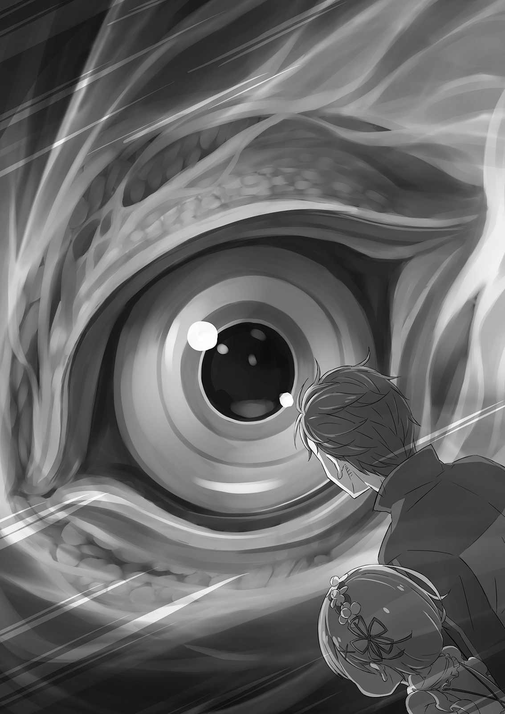
６
飛沫を伴う風を浴び、スバルはまるで真正面から殴られたような錯覚を得た。
「──ッ！」
叩きつけられる暴風に体が浮き、そのまま御者台の外に放り出されそうになる。とっさに伸ばした指は何も掴めず、スバルの体は暗闇の中へ一直線に転落する──寸前、
「スバルくん!!」
後ろ襟を掴まれて、スバルの姿勢が強引に真下へ押し付けられる。尻から座席に落ちて火花が散る視界の中、スバルに圧し掛かりながら手綱を操るレムの姿が見えた。
口を開き、普段の無表情をかなぐり捨ててレムが決死の形相で吠える。
叫び声は詠唱となり、レムの意思に従ってマナが収束、世界を魔法が作り変える。
生み出されたのは、スバルの体ほどもある氷の槍だ。
瞬く間に三つの氷槍が中空で形作られ、凄まじい勢いで矢のように射出された。
宙を走る氷槍が、岩に鋼を叩きつけるような音を立てて着弾──目の前の闇に砕かれる。
「お、わぁ!?」
直後、再び首を掴まれ、そのままスバルの体は一気に真上に引き上げられた。
遠ざかる座席、浮かび上がる眼下に竜車の姿が見えた。乗客が消えたことに気付かず、地竜は暗闇の街道を土煙を立てながら懸命に走っている。
次の瞬間、横殴りの莫大な質量が地竜ごと竜車を木端微塵にぶち抜いていった。
貨物運搬用の無骨な車体が紙切れのように引き千切れ、力強く地面を蹴っていた大型の地竜が衝撃に四散し、血と内臓を街道にぶちまけて肉片へと姿を変える。
そのあまりに現実離れした光景に、スバルの思考が真っ白に染まった。
「左へ──!!」
すぐ間近で怒鳴りつけるような声が聞こえて、一秒後に体が硬い床の上に落下する。肩と腰に走った鈍い痛みが、スバルの意識を空白から現実に引き戻した。
しかし、次々に襲いかかる衝撃に顔を上げる余裕はない。
乗り込んだ竜車が急旋回し、スバルは遠心力に振り回される。荷台を転がり、そのまま投げ出されかけるのを、指先にかかったロープを掴んですんでで堪えた。
首を巡らせ、自分がオットーの竜車に飛び込んでいたことだけを把握する。
荷台の留め具であるロープを手首に絡め、スバルは揺れの中で立ち上がろうとする。
「ダメです、スバルくん！ 立たないで！ 『風除け』の加護が切れています。レムとスバルくんはまともにここでは動けません！」
見ればレムは、床に自分の右腕を突き刺して体を支えている。レムの身体能力ですら、この揺れの中では姿勢を保つことも困難なのだ。
地竜のまとう『風除け』の加護の影響下から外れ、襲いくる揺れや風の猛威が容赦なくスバルの体力を削る。胸が悪くなり、立つことすらできそうにない。
そこまで理解して、スバルはようやく我が身に何が起きたのかを把握した。
レムがスバルを抱えて、吹き飛ぶ竜車からオットーの竜車へ飛び移ったのだ。その判断が一瞬遅れていれば、今頃はスバルたちも砕けた竜車と運命を共にしていただろう。
「な、何があったんだ!? いったい、こいつはどういうことなんだ!?」
ほんの数十秒の間に起きた、圧倒的破壊を伴う大異変。
その密度の濃さに、スバルの頭が追いついてこない。
「わからないんですか!?」
その混乱したスバルの問いかけに、悲鳴のようなオットーの声が上がる。
振り返るオットーは顔を蒼白にして、歯の根を震わせながら空を指差した。
「夜霧が出ています！ 霧の中、あんな巨体で空を泳ぐ存在なんて一つしかない！」
確かめるように、認めたくないと拒むように、嫌々と首を振りながら、恐怖に痙攣する肺に必死に空気を送り込み、力一杯にオットーが叫ぶ。
「──白鯨です!!」
オットーの絶叫に呼応するように、平原に轟く白鯨の咆哮が大気を揺るがした。
──白鯨。
その名前をスバルが聞いたのは、一回目の世界でのことだったはずだ。
霧をまとい、街道を塞いだ化け物の呼び名。
街道を白鯨が塞いだことが原因で、一回目の世界は屋敷までの帰路を大きく迂回することとなった。魔女教の暴挙に間に合わなかったのは、それが原因と言ってもいい。
しかし、肝心の白鯨をスバルが目にしたことはこれまでに一度もなかった。故にスバルがその存在を失念し、軽視していたことは否めない。それが、
「まさか、このタイミングで出くわしやがるのか!?」
スバルの知る、白鯨出現による街道の封鎖とタイミングは噛み合っている。
一回目の世界でスバルたちが出立したのは三日目のことだ。その時点で街道は白鯨の霧によって封鎖されていた。そして今は二日目の夜半──白鯨の出現が朝になって王都に伝えられたとすれば、明日中に街道が封鎖されることだろう。
白鯨の出現を知らないまま、その脅威とぶつかるとしたら今夜以外にない。
「まさか......は、白鯨にぶつかる、なんて......ああ、龍よ、龍よ、救いたまえ......」
虚ろな目でぶつぶつと、念仏のように龍へ救いを求めるオットー。
戦意どころか生気を喪失した姿に、白鯨の存在が行商人たちへもたらす絶対的な恐怖の実態をスバルは目の当たりにした。
以前の世界でオットーは、白鯨とは商人にとって凶兆の象徴なのだと表現した。
唇を震わせ、心ここにあらずながらもオットーは手綱を操っている。
彼の地竜は白鯨の存在に気付いたことで恐慌状態に陥っており、体力の残りを度外視した速度で地を蹴り、速度をぐんぐんと上げ続けている。
暴れ回る荷台の揺れをダイレクトに味わいながら、スバルは必死に闇へ目を凝らす。
白鯨の姿は夜の中へ沈み、その巨体はどこにも見当たらない。
「クソ......なんかべたべたすると思ったら、霧が出てやがる......ッ」
冷や汗とは別の滴を額に感じ、当てた掌が濡れる感触にスバルは顔をしかめる。
ただでさえ光源に乏しい闇の中で、霧まで出ているとなれば視界の確保は絶望的だ。
「レム！ 白鯨は見えてるか!?」
「暗すぎてとても無理です！ でも......！」
後ろを、横を、上を見回し、スバルは視界の中に魚影を探し求める。
そのスバルの声にレムが悲痛に応じ、続く言葉を何故か彼女は躊躇った。
息を詰めるレムが気にかかってそちらを見るが、深い霧の中ではシルエットが見えるだけで表情は窺えない。もはや手元すらも怪しいほど、霧は勢いを増していた。
「────」
最初、スバルが白鯨のものと思しき眼と目が合ったとき、その眼球はスバルが両腕を伸ばして作る輪よりも大きかっただろうか。
眼球一つとってその巨大さということは、白鯨はその名の通り、本当に鯨に匹敵する体格を持ち合わせているということになる。
そんな化け物が音も気配も隠したまま、夜の空を自由に泳ぎ回っている現実。
深くなる霧の原因である白鯨の姿が見えないことが、恐怖をさらに掻き立てていた。
「けど、レムの先制攻撃は当たったはずだ。......それで、退いた可能性だって」
楽観的すぎるだろうか。
レムの詠唱で打ち込まれた氷槍の威力は、スバルがこれまでに見た魔法の中でも最上位に位置するほどのもので、スバルなら一本で一回、合計三回は死んだだろう威力だ。
いかに巨躯の持ち主であっても、深手を負えば怯むこともあるだろう。
「他の竜車はどうなった!?」
「散らばって逃げているようです。霧が現れたときは即座に分かれて逃げること。運が良ければ白鯨に追いつかれず、霧から逃げ延びることもできるはず」
白鯨と遭遇したときの対処法、その一般的な内容だろうか。
なるほど、確かにこの竜車と並走している竜車はどこにもいない。それまで後続として追走していた他の竜車は、その不文律に従って散り散りに逃げているらしい。
──せっかく確保した足を失った事実が、スバルに奥歯を噛みしめさせた。
タイミングが悪すぎる。村の住民全員を連れて逃げるための方策が再び瓦解した。
「悔やんでてもしょうがねぇ。とにかく、今は霧を抜けることだけ考えて......」
揺れに内臓を掻き回されながら、スバルは脱出後の問題をひとまず棚上げにする。
目先の窮地、減った手札。自前の竜車が消えた以上、このオットーの竜車だけでも屋敷へ帰り着く必要がある。だから今は、この厄介な霧を──、
「────!!」
ずらりと石臼のような強大な歯が並ぶ口腔が、唐突に眼前に大口を開けていた。
咆哮が轟き、圧倒的な音の暴力と爆風に地竜が竦み上がる。地竜が足をもつれさせて地面を削り、車輪が浮いて竜車の荷台が大きく傾いた。油の入った壺が幌を破って外へ吹き飛び、縁に掴まっていたスバルも危うく投げ出されかける。
必死に荷台に齧りつきながら、スバルは竜車の正面に薄汚れた歯が並ぶ巨大な口が、こちらを丸呑みにせんと迫ってくるのを目の当たりにした。
事この瞬間に至って、スバルは己の認識が甘すぎたことをようやく理解する。
白鯨に遭遇し、深い夜霧の中をさまよう現状。
それは、今この瞬間をいかに生き延びるかという鉄火場に突入しているのだと。
「──るぁぁぁぁぁ！」
竜車を呑み込む顎が迫る瞬間、雄叫びと衝撃に荷台の板張りの床が弾け飛んだ。
床を砕き、前方へ弾丸のように跳躍したのはレムだ。暴風にたなびく髪飾りの下から、鋭い角が突き出す鬼化状態。彼女は自分の得物である棘付きの鉄球を振り回し、
「──左へ走り抜けて！」
「ひだりひだりひだりひだりひだりひだり！」
鉄球が真上から白鯨の上顎を叩き潰し、どす黒い血煙を噴出させながら開いた大口を閉じさせる。大地を下顎で抉り、それでも推進力が消えずに迫る巨顔。その真横を一心不乱に地竜を制御するオットーの竜車が走り抜けた。
走る竜車の荷台、その右側が巨躯を躱し切れずに交差に巻き込まれ、岩肌に擦りつけたような擦過音を上げてひしゃげ吹き飛ぶ。
車輪を失った荷台が大きく軋み、バランスが崩れてそのままひっくり返った。
当然、その上にいたスバルも為す術もなく地面に投げ出されそうになり、
──死ぬ？
判断の遅さが死を招く直前、轟音に紛れて迫る銀色の蛇がスバルの胴体に組み付いた。落下の軌道から強引に引き上げられ、スバルは頭から御者台へ落とされる。
そして、
「喰ら、ええぇぇぇ──!!」
スバルを引き上げた鉄球を右手に、空いた左手で御者台と荷台の連結部分を破壊したレムが、切り離される荷台の端を掴み──瞬間、竜車を引く地竜が悲痛に嘶くほどの荷重が発生し、大型の貨物用車両が後方へとぶん投げられた。
半分に削れたとはいえ、小屋一つ投げるような超大型の質量弾だ。それは行き違った白鯨の横腹を直撃──身をよじる白鯨の尾が大地と木材を爆散させ、土塊をまき散らす。
「や、や、やりましたか!?」
何が起きたかわからないまでも、自分の竜車の大半が失われた事実を悟っているのだろう。払った犠牲に見合う希望を求める思いが、ヤケクソ気味な声に込められていた。
大気を鳴動させる咆哮と、さらに勢いを増す宵闇の霧。そして背後から迫る絶望という名のプレッシャーが、その希望を打ち砕くとわかっていながら。
「ど、どうして執拗に僕らを......竜車は他にもいるでしょうに!?」
喚き散らし、オットーは我が身に降りかかる不幸を呪う。
他に八台の竜車がいたにも拘わらず、自分が襲われることの理不尽への糾弾。スバルも全く同感だったが、口汚く罵り続けるオットーの姿に不平は喉の奥へ引っ込んでいく。
捨て石、あるいは身代わりの肉の壁──仮に魔女教と相対したとき、スバルが同行した彼らをどう利用しかねなかったか、その一端が醜さの中に垣間見えた気がして。
「それに運命に恨み言を訴えてても、状況は変わらねぇ......」
依然として白鯨の脅威は背後に迫り、空を泳ぐ巨体の速度は竜車をしのいでいる。
貨物車両を捨てて身軽になった地竜の走行でも、追いつかれるのは時間の問題だ。
「考えろ考えろ考えろ、打開策、打開策だ。何か、何かないか。何か......！」
必死に頭を働かせるが、打開策は何も浮かんでこない。追い込まれる切迫感と、足下すら見えない夜霧の中で、スバルはヒントすら見つけることができなかった。
そして無為に時間を浪費する間に、運命は再びスバルに苦難の選択を強いる。
激しい揺れを受け、車体に縋るスバルの下へそっとレムが歩み寄った。同じように揺れに翻弄されるはずのレムは、それを感じさせない足取りでスバルへ寄り添うと、
「スバルくん。これを受け取ってください」
「なんだ!? 何か思いついたのか!? こっからどうにかでき......」
窮地を脱する妙案が浮かんだのかと、顔を上げたスバルにレムが小袋を押し付けた。ずっしりと重みのあるそれが、路銀袋であるとすぐにわかった。
今、この場において、この金が何の役に立つというのか。
路銀を差し出すレムの行いに悪寒を感じ、スバルは強張った笑みを頬に張りつけ、
「れ、レム......？ 銭投げがパワーバランス崩すぐらい威力ある技なのは知ってるけど、それってあくまで、ゲームの話で......」
「レムが竜車を降りて迎撃します。その間に、スバルくんは霧を抜け出してください」
戯言で現実を否定してかかるスバルを、毅然としたレムの声が打ち砕いた。
レムはスバルではなくオットーへ向き直る。
「オットー様。スバルくんをお願いします。約束の報酬はスバルくんが確かに。──霧を抜け出し、白鯨出現の報告をメイザース領へお伝えください」
「ほ、報酬......？ 今はそれどころじゃ、い、命あっての物種ですよ!?」
こちらのやり取りを聞いていなかったオットーの返答。それでも、彼が生きるために懸命に竜車を走らせるのを見て、レムは安堵に唇を緩めながらスバルを振り返った。
「スバルくん。レムは頭が悪いので、こんな案しか思いつきません。どうか......」
「ま、待てよ、レム！ お前、白鯨が出現したことを知らせろって、言ったよな？ それってまさか......お前、生きて戻るつもりがねぇってことじゃねぇのか!?」
悲壮な決断を下したレムを、スバルは必死に引き止める。
暗がりの世界には変わらず昏々とした闇が落ちているのに、目の前のレムの顔だけが今のスバルには何故かやけにはっきりと見えていた。
「行かせねぇ！ 行かせねぇぞ！ お前が、お前まで死んだら、俺は......！」
路銀の入った袋を足下に落とし、目の前に立つレムの腰を引き寄せた。
小柄な体を腕の中に抱き、離れていこうとするその存在を繋ぎ止める。この腕を放してしまえば、レムは命すら振り切って飛び出していってしまう。
それだけは阻止しなくてはならない。そうでなければ──、
「あぁ......」
泣きそうになるほど感情が荒れ狂う中、抱擁を受けるレムが熱い吐息をこぼす。
耳にかかる陶然とした響きに視線を落とすと、スバルの腕の中でレムはこちらを見上げながら、うっとりと微笑んでいた。
「レムは今、このときのために生まれてきたんですね」
「何を言って......」
いる、と続きを口にすることはできなかった。
衝撃が首筋の後ろを打ち、世界が反転するような感覚がスバルを襲う。
抱き返すように腕を伸ばしたレムが、スバルの後頭部を手刀で打ったのだ。
体から力が抜け落ち、スバルは崩れ落ちるようにレムへ寄り掛かる。
「れ、む......何して......」
視界だけでなく、意識まで竜車の揺れに呑まれて消えそうになる。
首を持ち上げていることすら困難になる中、スバルは必死にレムに縋りついた。
そうしてもがくスバルを、レムは慈愛の眼差しで見つめている。それからレムはそっとスバルの耳へ唇を寄せ、遠ざかる意識の切れ端に届くように囁いた。
「大丈夫です。レムはずっと、スバルくんの後ろで見守っていますから」
『何もしなくていい。ずっと、俺の後ろにいてくれ』
出立する前に、今日の朝に、レムにそう告げたのはスバル自身だった。
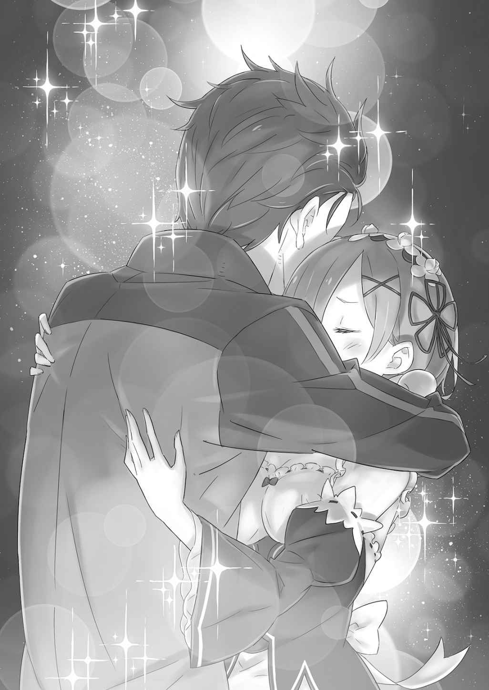
だからその言葉の通りに、レムはスバルの後ろを守るために立つ。立つのだ。
「ちが......俺はそんな、つも、りで......」
「スバルくん。レムは──」
意識が落ちる。
遠ざかっていく。白く、染まっていく。
一度、強く抱きしめられたような気がした。
額に、優しく柔らかな感触が当てられて、すぐに離れる。
そして、それが最後だった。
７
────。
────────。
──────────あ。
揺れに、衝撃に、顔を打たれる感覚が繰り返されていた。
度重なるそれが空白にあった意識を呼び起こし、スバルは現実に回帰する。
顔を持ち上げ、上体を起こそうとしたがそれは揺れに阻まれた。手が滑り、再び床に頭から落ちそうになるが、腹のあたりをずっしりと押さえる質量がかろうじてそれを防ぐ。
腹部にかかる固い圧迫感。手を当てて、その感触が金貨の類を詰め込んだ袋であることを確認して、意識が消える寸前の記憶が脳裏を駆け抜けた。
「──レムは!?」
「ナツキさん!? 目が覚めましたか!?」
腹の上にあった路銀袋を横へ投げ出し、スバルは四肢を着いたまま周りを見回す。相変わらず世界は闇に包まれており、激しい揺れと音が竜車の上にいることを伝えてくる。
そして跳ね起きたスバルに気付き、首だけこちらを振り向いたのはオットーだ。彼は御者台から後ろを振り返り、立ち上がろうとするスバルに声を上げる。
「動かないでください！ 頭を打ってた上に、延々と加護が切れてたんです。地竜は今も全力走行中で、ナツキさんに配慮してる余裕はないんですから！」
「そんなことはどうでもいい！ レムは、レムはどうした!?」
怒鳴り返し、スバルは御者台の隅々まで少女の姿を探し求める。荷台を失い、狭くなった竜車だ。視線をさまよわせる必要がないことなど、誰にでもすぐにわかる。
それでも、実際にその事実を確認するまで、認めるわけにはいかない。
「答えろ、オットー。レムはどうした......！」
「あのお嬢さんは......」
声を荒らげて、今にも飛びかかってきそうなほど興奮するスバルを見て、オットーは答えに詰まることの危険性を理解したのだろう。
「僕らの竜車を逃がすために......白鯨を迎え撃とうと竜車を降りました」
意識を失う寸前のやり取りが、決して夢や幻ではない現実だと伝えてきた。
「────」
絞り出すようなその言葉に、スバルは一度だけ息を呑む。それから、
「戻れ」
「......は？」
「戻れっつってんだよ。レムを、レムを助けるんだ！ 今すぐに戻れ！」
狭い御者台に飛び乗り、スバルはオットーの胸倉に掴みかかる。
今も混乱する地竜を制御するのに手いっぱいなオットーは、そのスバルの暴挙に対応できず、胸倉を掴まれたことに顔を青くした。
「ほ、本気ですか!? 戻って......戻ってどうなるって言うんです！ 白鯨の、あの化け物の恐ろしさを見なかったんですか!? 自殺行為ですよ！」
「あの化け物を間近で見ちまったから、レムを助けに戻れって言ってんだろうが！」
命令を拒否するオットーに、スバルは青筋を立てながら怒声を張り上げる。
白鯨の脅威を、スバルはその目に焼き付けた。
あの巨体で地竜をしのぐ速度で空を泳ぎ、尾の一振りで軽々と大型の竜車を破壊する。視界を塞ぐ霧の中でも獲物を確実に捕捉し、レムの魔法にもダメージを負わない。
間違いなく、この異世界で見てきた中で、最大最強の難敵だ。
あの脅威と比較すれば、人間の範疇ではあったエルザに対処することも、無数のウルガルムの群れに挑みかかることだって、ずっと容易く攻略法を見つけられるだろう。
だが、あそこまでの化け物には勝てるビジョンすらまるで浮かばない。
「レムだって、同じだ......置いてなんていけるか。そんなことしたら！」
鬼化したレムの強さは、スバルだってよく知っている。だが、その理解が言っているのだ。白鯨の前では、その強さすらも意味を持たないのだと。
ここにレムを置き去りにすれば、彼女は確実に失われる。
それでは意味がない。それでは、スバルが生き残ることに意味なんて何もない。
スバルが望む未来には、レムの存在だって欠かすことはできないのだから。
レムがいなければ、スバルはスバル自身すら見失ってしまう。肯定することができなくなってしまう。スバルにはレムが、肯定してくれる存在が必要なのだ。
「時間稼ぎの捨て石なんて許せるか！ 今すぐ戻れ、オットー！ さもないと......」
「頭おかしくなったんじゃないですか、あなたは!?」
しかし、スバルの懇願はオットーの怒声によって塗り潰された。
胸倉を掴んでいた手首が逆手に握られ、次の瞬間に背中から御者台に叩きつけられる。
「あがっ！」
「加護も切れたような状態で、単独で街道を抜けることもある行商人を力ずくで従えられるとでも？ 甘く見すぎなんですよ！」
掴んだままの手首を捻り、うつ伏せに転がされてスバルの肩が極められる。それをするのはいまだ、片手には手綱を握ったままでいるオットーだ。
「とにかく落ち着いてください！ それが今のあなたの状態です。そんな状態で何ができるって言うんですか。あの子の、残ってくれた彼女の気持ちを無駄にしますか！」
「お前がレムを語るんじゃねぇよ！ レムを見捨てる......見殺しにするようなお前に、あいつのことを語る資格なんざあるか！ 戻れ！ 今すぐに、レムを助けろぉ！」
「ああもう！ 話にならない！ 冷静に、冷静にお願いしますよ！」
じたばたともがき、極められた腕を外そうと抗うスバルにオットーが舌打ちする。そのままオットーは進路を見据え、地竜を真っ直ぐ走らせたまま、
「白鯨がどれだけ恐ろしいかまだわからないんですか！ 何百年と世界に君臨し、奴を殺そうって話は何度もあった！ わかりますか!?」
聞き分けのないスバルに言葉を浴びせ、オットーはやるせない感情に顔を曇らせる。
「何百人って武器を持った人間が挑んで、それでも奴を殺せない！ そんなところに武器も戦う力もない僕らが行って、何ができるっていうんです！ 奴の前に立った女の子を助け出す!? そんなことすら僕らにはできない！ できるはずもない！」
「うるせぇんだよ！ そんなこと、やる前から......！」
「わかり切ってることだってあるんですよ！ ルグニカ王国が編成した討伐隊！ 大征伐のときですら、先代剣聖が殺されたような化け物ですよ！ 勝てるはずがない！」
絞り出すオットーの激白には、無念と悔しさが震えとなって表れていた。
オットー自身、白鯨に対して決して浅からぬ憤怒を抱いているのだ。だがそれでも、その怒りの原因たる白鯨の脅威は人間には大きすぎる。
分からず屋のスバルにそれを教えるために、自らもまた白鯨の大きさを自覚せざるを得ない言葉を吐き、心を折られるような苦しみを味わっているのだ。
「剣聖を......殺した......？」
その魂の叫びを聞いて、それまで何一つ聞き入れなかったスバルの勢いが萎れる。
剣聖──それは異世界に召喚されたスバルが目にした、最強の人物に与えられていた称号であり、スバルにとっては並び立つもののない『強さ』の象徴だ。
先代の剣聖が、『最強』の体現であるラインハルトと同一の強さとは限らない。
だが、ラインハルトと同じ称号を持つだけの力ある存在、それを殺した白鯨とは。
「ラインハルトよりも、強い......？」
最強の存在すらもしのぐ、最悪の災厄を名乗るに相応しい化け物だというのか。
急速に、それまで根拠もなくスバルの背中を押していた焦燥感が失われていく。それらの後押しがなくなったとき、スバルは気付けば立ち上がる力すらなくしていた。
「俺は、何を......今、こんなところで、転がってる場合じゃ......」
レムを助けたい。救い出したい。今すぐに戻らなければそれは叶わない。
心はそれを理解しているのに、肝心の闘志が手足に伝わらない。魂に届かない。
拘束していたスバルを解放し、オットーは憐れむような声で、
「僕は弱く、あなたも弱い。だから僕らは、あの女の子を助けられない。──あの女の子の強さに、僕らは追いつけないんですよ」
──だけど、レムだって本当は強くなんかないのだ。
そのことをスバルは知っているのに、知っていたはずなのに、何も言えない。
うなだれたまま竜車の揺れに身を委ねた。地竜は夜霧の中を真っ直ぐに駆け抜ける。
背後にレムを置き去りにしたまま、竜車は遠ざかる。
スバルはレムから、遠ざかり続けていた。
「────」
そのまま、五分か、十分か、俯いたまま時間が経過したときだった。
「ナツキさん、あれは......」
それまで黙って地竜を走らせていたオットーが、前方に目を凝らしながらスバルを呼んだ。ゆっくりと顔を上げ、スバルは御者台のオットーの隣へ這いずり、そこから彼と同じ方角へ目を向け──ぼんやりと、闇の中で揺れる光を見つけた。
「霧で遮られてますが......あれは結晶灯の光です！」
「霧を、抜けるのか......？」
「抜けたとしても外は夜の街道ですから、明かりがあるのは不自然です。おそらく、僕らと同じように霧に巻き込まれた人では......」
オットーの推測を裏付けるように、同じようにこちらに気付いた相手がまっしぐらにこちらへ向かってくる。十数秒後、霧から現れたのは一台の竜車と御者の男だった。
「や、やっと人に......なあ！ これ、霧だよなぁ!? は、白鯨って、ことだよな!?」
壮年の男は口の端に泡を浮かべ、文字通りの恐慌状態に陥りながら必死に叫ぶ。
男は夜霧の中で見つけたスバルたちを、神か仏とでも思ったように縋る。悲痛な声は推測を否定されたがっていたが、オットーは首を横に振った。
「ええ、白鯨です。僕らはすでに遭遇しました。今は幸いにも逃げ切ったはずですが、霧を抜けるまではいつどこで出くわすかわかりません」
「ほ、本当なのかよ......！ ああ、最悪だ。なんで、なんでこんなことに......」
頭を抱えて悲嘆に暮れる男を横目に、スバルは隣に座るオットーを睨みつけた。
『幸いにも』などとオットーが口にしたことが、まるでレムを置き去りにしたことへの罪悪感を忘れたような開き直りに聞こえたからだ。
「オットー、言い方に気を付けろよ」
「なんです、ナツキさん」
「ふざけた言い方をするなって言ったんだよ。幸いにもだと？ 冗談じゃねぇ。レムが、レムがどんな気持ちで俺たちを......」
レムを置き去りにした時点で、スバルとオットーの立場は完全に同じだ。それでもレムのことを思って怒ることで、スバルは自分の罪悪感を紛らわせようとする。
わかっている。もうとっくに、スバルにだってわかっているのだ。
取り残されたレムが白鯨を前に、知恵を駆使して生き延びている──そんなことは、希望的観測とすら言えない妄想でしかないことぐらい。
レムはこの霧の中で、三回目のこの世界で、またしてもスバルを救うために死──、
「レムって、誰のことです？」
そんな悲壮なレムの覚悟と想いは、驚くほど軽々しく裏切られた。
「──は？」
「いえ、ですからレムっていうのは？ 散り散りになった他の行商人の中にも、そんな名前の人はいなかったはずですし......誰のお話をしてるんですか？」
スバルの発言の意図がわからないと、オットーは首を傾げている。
そのレムの存在を軽んじた仕草が、彼女の高潔さを踏み躙る行いに思えて。
──振り上げた拳で思い切りに、その横っ面を殴りつけていた。
途端、車上の乱れが手綱越しに地竜に伝わり、竜車が大きく左右へ揺れる。支えを失ったスバルが御者台の後ろへ倒れ込み、殴られたオットーも御者台に横倒しになった。
オットーは殴られた頬を押さえ、いち早く起き上がると倒れるスバルを見て、
「い、いきなり何をするんですか!?」
「ふざけるな！」
信じられない、とスバルの凶行にオットーが目を剥いているが、オットーの言動が信じられないのはスバルの方も同じことだ。
「お前、何を言ってやがる......！ 俺たちを逃がすために残ったレムを指して、誰のことだなんて、ふざけるな！ てめぇ、殺されたいのか......ッ！」
「何を言ってんだかわかんないっつってんですよぉ！ なんだ、あんた、急におかしなこと言い出して......白鯨を見て狂ったんじゃないんですか!?」
食い下がるスバルの言葉に、オットーはなおも白を切り続ける。
堪え切れない激情に視界が真っ赤に染まる。時間がやけにゆっくりに感じられ、噴き出す殺意が目の前の男の細い首をへし折れとスバルに命じていた。
手を伸ばし、何もかもを忘れた恩知らずの命をねじ切ってやろうとし──、
「あんたら何やってんだ!? 今はもめてる場合じゃねえだろ！ とにかく霧を......」
怒鳴り合い、挙句に殺し合いに発展しそうになる二人を見て、並走していた竜車の男が狼狽しながら制止を呼びかける。ただ、その声も剣呑の極みにある二人には届かない。
その醜い争いを止めたのは、必死な男の次なるアクションだった。
「霧を抜けて、白鯨から逃げるのが最優先じゃな──」
現実的に、懸命な説得を続けていた男。その体が背後から竜車を呑み込む白鯨の大口の中に吸い込まれて、一瞬の内にスバルたちの視界から消え去った。
竜車と地竜を丸ごと呑み込み、顔を上へ向ける白鯨が巨大な質量を咀嚼する。
木材と鉄材が噛み砕かれ、肉を石臼のような歯ですり潰される地竜が断末魔を上げる。その絶叫と破砕音に紛れて、同じく挽肉にされただろう男の声は誰にも届かない。
「な、ぁ──」
その巨躯の音もない接近、そして蹂躙にスバルとオットーは揃って言葉を失った。
オットーは再見した白鯨の威容に膝を震わせ、スバルは凝然と目を見開いていた。
「なん、で......お前がここに、いんだよ......」
いまだ健在の白鯨は、すぐ横のちっぽけな二人になど欠片も関心を向けず、口の中に広がる晩餐に舌鼓を打つのに夢中だ。
「お前が、ここにいるってことは......」
この化け物を引きつけるために、あの場に残った少女はどうなったというのか。
その圧倒的な存在を前に、わかり切った答えを求めずにはいられなかった。
無論、白鯨がその問いに答えてくれるはずもない。咀嚼を終えた白鯨は次の獲物を品定めするように、その大きな瞳で並走する竜車を──スバルを見下ろしてきた。
「う、あああああ──!!」
と、そのプレッシャーに耐えかね、先に狂乱に陥ったオットーが叫ぶ。
地竜も白鯨の存在に恐慌状態になり、主人の指示を待たずに走る速度を上げた。一瞬だけ互いの距離が開くが、白鯨は身をくねらせながら泳ぎを加速してついてくる。
「どうしてどうしてどうして......こんな執拗に、引き、離したはずじゃぁ......っ」
加速する竜車の御者台で、喪失感に打ちのめされるスバルは崩れ落ちたままだ。錯乱するオットーの嘆きも、今は頭を右から左へ通り抜けていく。
「なんだって、僕らばかりを......！ こんな暗い、中で......どうして......っ。何か、何か目印でも、あるって、んですかぁ......！」
泣きじゃくりながら、オットーが竜車に取り付けてあった結晶灯を外して捨てる。
少しでも白鯨の目につかないように、無駄な抵抗をする姿が痛々しかった。だが、そのオットーの叫びに、スバルの脳裏をふとあるイメージが浮かび上がる。
執拗にスバルたちを追う白鯨に対し、目印でもあるのかと嘆いたオットーの言葉。
その白鯨のおぞましいほどの執念に、正しく理由があるとしたら──、
「まさか......」
御者台から身を乗り出し、スバルは背後を泳いでいる白鯨の方へ目を凝らす。
夜霧の中を悠然と泳ぐ白鯨は、おぼろげな闇でその巨体を覆っている。しかし、懸命に足掻くスバルの目は、こちらに正面の顔を向ける白鯨の姿をうっすらと確認した。
その白鯨の頭部からは、歪にねじくれた角が伸びているのが見えた。
──屋敷の周辺の森に生息していた魔獣、ウルガルムは体格の大きな野犬に角が生えたような見た目をしていた。そして魔女の力で生み出されたという魔獣は、スバルの体が発する魔女の臭いに引きつけられて、襲いかかってくる習性がある。つまり、
「あの化け物も......白鯨も、魔獣なのか......？」
信じ難い可能性を口にして、スバルは受け止められない現実に首を横に振った。
だが、そう考えれば辻褄が合ってしまう。
散り散りにばらけた複数の竜車の中、白鯨がいち早くスバルたちの竜車に目をつけた理由も、オットーの竜車に乗り移った後にも執拗にスバルたちを狙ってきた理由も。
レムが死を覚悟して時間を稼いだ後にも、この竜車へと追いついてきた理由も。
暗闇の中を追い縋る白鯨の存在に、レムが何かを言おうとして躊躇ったことが思い出された。レムはあの時点で、気付いていたのだ。
「俺の体が......白鯨を、引き寄せてるってのか......？」
スバルの存在を追いかけて、魔女の臭いを追いかけて、白鯨は襲ってきた。
レムはそんな事実に誰より先に気付いたから、スバルを守るために自分から竜車を降りて時間稼ぎに走ったのだ。スバルを守るために、スバルのためだけに。
「そんな、レム......俺は、そんな......俺のせい、で......ッ」
押し寄せてくる重圧と悲嘆に、スバルは顔を覆ってしゃがみ込んでしまう。
レムを失った事実が、レムを失わせた事実が、それら全てが自分の責任であると理解したことが、スバルの心と体を責め立ててくる。
「ナツキさん......」
絶望感に打ちのめされるスバルの肩を、背後からオットーが叩いていた。
震える指先と、やけに乾いた声。スバルはそのオットーの方におずおず振り返り、
「オットー、俺は......」
「死んでください」
次の瞬間、肩を押されたスバルの体はあっさりと、竜車から突き落とされていた。
「──は？」
視界が逆さまになり、振り落とされる体が天地を見失って激しく回る。
その乱れた視界の中に、哄笑するオットーの姿が見えた。彼は白い歯が見えるほど大きく口を開けて、涎を垂らしながら、
「あな、あなたが、悪いんですよぉ！ あなたが、あなたのせいで、追ってくるなら、せき、責任取ってくらさいよぉ！ あはは！ 死んで！ 死んで、僕を助けてぇっ！」
狂笑する姿が見えて、スバルは彼の精神が擦り切れてしまったのだと気付いた。
スバルの弱々しい呟きを聞きつけ、根拠も聞かずにそれに縋り、スバルを突き落としてしまうぐらいに、オットーは追い詰められてしまったのだ。
その理解に達した瞬間、スバルの体もまた地面の上へと到達していた。
背中側から容赦なく地面に叩きつけられ、誇張なしに全身の骨が砕け散るような痛みを味わう。苦鳴に内臓の潰れる音が混じり、転がりながら血反吐をぶちまけ続けた。
痛みを自覚する機能すら奪われるほどの衝撃。
胃液の嘔吐と吐血を繰り返し、ゆるゆるとスバルは首をもたげる。はるか先に、自分を振り落した竜車が逃げ去る音が遠ざかっていくのが聞こえた気がした。
恨み言は不思議と湧いてこなかった。
痛みと苦しみでそれどころではないというのが本当のところだが、それ以外にもどうしてか、オットーを責める気になれない不可思議な感情があった。
巻き込まれただけのオットーが、生き残ろうと必死に足掻いた上で自分を突き落としたのだ。仕方ないことだと、それを許してしまったのかもしれない。
「えふっ、ごえぇ」
そんな感傷は口内に満ちた血の味と、思い出したように全身をつんざく激痛と、
「────」
悶えるスバルの前に姿を見せた、あまりに巨大な存在の前に吹き消されていた。
──その威容の強大さは、抗うことの愚かしさを一目でスバルに理解させた。
うつ伏せのスバルの目の前、手を伸ばせば届くほどの距離で、白鯨はその大きすぎる口から生臭い息を吐き出し、ちっぽけなスバルの存在を確かめている。
矮小な人の身にとっては、白鯨のただの呼吸すら暴風に等しい。ましてや今のスバルが自分の体を支えられるはずもなく、吐息一つでどこまでも地面を転がされる。
折れた骨が複雑にひしゃげ、新鮮な痛みに聞き飽きた絶叫がスバルの喉で炸裂する。
「────」
そうして悶え苦しむスバルを見下ろし、白鯨はまるで弄ぶように沈黙を続ける。
悠然と佇むその姿に、油断などという言葉は適さない。生物としての格が違うのだ。
まさに、象に蟻が挑む事象に等しい。鯨に人が、海の中で挑みかかるようなものだ。
痛みと嘔吐感に支配される頭の中で、スバルは間近に迫る『死』の感覚を理解する。
すでに幾度も味わってきた絶望感。
自分がゆっくり確実に失われていく喪失感。
道半ばでまたしても何も為せない己に対する無力感。
それらが親しげにスバルへすり寄り、馴れ馴れしく肩に腕を回してきて、今回の無様な葛藤と滑稽な足掻きようをせせら笑っているのがわかった。
何がいけなかったのか、もう何もかもがわからない。
ただ、レムを失ってしまった今、スバルの手の中には何も残されていない。
ああして無様に生き延びようとしたことすら、馬鹿馬鹿しい抵抗だったと自嘲する。
くだらない。つまらない。何もできない残せない、最低の生き様だった。
目の前に、白鯨の鼻先が迫ってきているのを感じる。
開かれた口腔に、固い鱗を持つ地竜すらも易々と挽き潰す強靭な歯が並んでいる。
スバルの肉を、骨を魂を、すり潰して咀嚼して食い散らかそうとしている。
いっそ殺せと、早くその顎で喰らいつけと、負け惜しみを口にしようと唇を震わせ、
「死に、たくない......」
それすらもできない己の弱さに、今度こそスバルは本当に絶望する。
これまでにないほどの無力感が、胸の内側に冷たい刃を突きつける。全身の血が凍てついて冷え切り、失望感に目の前が真っ暗になった。
「い、やだ......死に、たくない。助け、死にたく、ない......！ 死にたくない、死にたくない死にたくない......嫌だ嫌だ嫌だぁ......助けて、レム、助けて......」
泣き言が、弱音が、止まることのない薄汚い生への執着が、口から溢れ出す。
すでに失われた命に、失わせた命に縋りつき、何もできなかった弱者が、何も為せなかった敗北者が、何も守れない塵芥が、それでも命が惜しいと泣き喚く。
哀れだった。無残だった。醜態とはまさに、この姿のことを言うのだ。
誰もがその滑稽さに目を背け、嘲りの言葉をぶつけ、見るのも苦痛だと誹るだろう。そうまでして命に縋りつくことを、高潔な人間性は決して許容できない。
惨めだった。虫けらの生き方ですらまだ可愛げがあった。自分惜しさに、尊く誇り高い存在の尊厳すら穢すそれは、まさに『豚の欲望』そのものだ。
「いや、だぁ......死に、たくな......助け......」
それでも這いずり、なおも逃げ惑い、命を繋ぐ可能性を求めて姑息に喘ぐ。
いつしか力を失った体は進まず、指先は草を撫で、土を削る力も残されていない。泣き喚く気力すらとうに絞り尽くし、体を横に転がすのが最後の抵抗だ。
「しに、たくな、いよぉ......」
そうして、仰向けに転がったスバルの口から漏れる命乞い。
それが最後の生き足掻きだった。
もう何もできない。考えられない。されるがままになるしかない。
それなのに、スバルに終わりをもたらす衝撃はいつまで経っても訪れなかった。
慣れ親しんだ『死』の気配が、噛み砕かれる凄絶な終わりが、いつまでも訪れない。
いつ終わるのかわからない終わりを待ち続ける恐怖は、容易く人の心を壊す。
耐え切ることなどできない恐ろしさに身をよじり、スバルは震える体を酷使して、自分を終わらせる絶望を探して視線をさまよわせ、
「......え」
──間近に迫っていたはずの白鯨が、どこにもいなくなっていることに気付いた。
８
それからのスバルはひたすらに、生への執着だけで走り続けた。
「死にたくない......死にたくない、死にたくない......」
息が切れ、足がふらつき、滴る血が目に入って視界が眩む。だが、それすら厭わずにスバルは走る。もとより視界の悪さなど、闇と霧に紛れて何も変わりはしない。
星も月も見えない夜の腕の中で、スバルは自分の足下すら見通せない。あるいは気付いていないだけで、自分はとっくに白鯨に呑み込まれたのではないか。
今はあの魔獣の腹の内を、自ら終わりに向かって進んでいるだけなのかもしれない。
「ひぐっ」
暗闇の中、スバルはどこまでも一人きりだった。
レムを失い、オットーに見捨てられ、白鯨すらもスバルを捨て置いた。
存在価値を失ったスバルに、ちっぽけな存在に、誰も構ってなどくれはしない。
死にたくないと、何故そう思うのかすらもうわからない。
生きていて何の意味があるのか。死なないことに何の意味が残されているのか。
取り留めのない思考が浮かぶのは、痛みと恐怖を紛らわすための自己防衛本能の為せる業か。こんな場面でも自分可愛さを発揮する自分が、いっそおぞましい。
「──あ？」
霧の終端は、自虐の限りを尽くし、罵声すら浮かばなくなった頃に唐突に訪れた。
果てがないとまで思わされた闇の突然の終わりに、信じられない顔でスバルは地面に崩れ落ちた。柔らかな月光が降り注ぎ、スバルは自分が生き延びたことを理解する。
手足に血が通う感覚が蘇り、スバルは夜空へ両手を伸ばした。
スバルにそうさせたのは、胸に込み上げたのは、生を掴み取った歓喜ではない。
「また、俺は......」
再びみっともなく足掻いた果てに、命を掴んでしまった自分への失望だった。
あれほど渇望した生を手にして、スバルは何の感慨も抱けない。耐え切れない罪悪感が胸中を焼き焦がし、存在を忘れていた恥の感情に殺されてしまいそうになる。
「レム......レム......っ！」
顔を覆い、堪え切れない熱い涙と少女の名前をこぼし続ける。
その名を呼ぶことで、許しを請うことで、スバルは自分の魂を慰め続ける。
土に額を擦りつけて啜り泣き、どれぐらいの時間が経っただろうか。
それはゆっくりと軋んだ音を立てて、蹲るスバルの下へとやってきた。
「お、前は......」
原型を失った車体を引きずり、血に塗れたそれは一台の竜車と地竜であった。
見覚えのあるそれは間違いなく、オットーが所有していた地竜だ。だが、その車上にはスバルを突き落とした青年の姿は見当たらない。
「なんで、お前が......あいつは、オットーは？」
疑問が口をついて出たが、当然のように応じる言葉はない。
ふらふらと近付いてくる竜車に、スバルも立ち上がって歩み寄る。その無残に破損した竜車を見上げて、スバルは気付いた。
──御者台にはいくつも十字架を模した短剣が突き刺さり、血痕が残されている。
霧を抜けたところで、何者かに襲われたのだ。
狂乱し、スバルを見捨てて命からがら逃げ延びたオットーが、その後に襲いかかってきた絶望を前にどんな感情を抱いたのかは想像もできない。
しかし、彼の身に何が起きたのかは、こうして単独の地竜を見れば明らかだった。
「......行こう」
ぼそりと呟き、スバルは痛む体を持ち上げて御者台に乗り込んだ。
手綱をかろうじて動く右腕で掴み、見よう見真似で振るって地竜に指示を出す。
主人とは違う手綱の感覚に、地竜は戸惑うようにつぶらな瞳でスバルを見上げた。
だが、繰り返し手綱を振るうスバルに、地竜はゆっくり街道に沿って進み始める。
──銀色の月の輝きの下で、竜車はゆっくりと走り出した。
共に大切な存在を失った同士、傷口を舐め合うかのような人と地竜の組み合わせで、ゆっくりゆっくりと、星と月の嘲笑を浴びながら。
ゆっくり、ゆっくりと、竜車は走り続けた。
走り続けた。
第四章 『言葉にはさせない』
１
ぎしぎしと、音を立てて竜車は進み続ける。
御者台にもたれかかり、形だけの御者をするスバルの意識は朦朧としていた。
疲労があり、負傷の影響があり、何より精神の摩耗が大きい。
折れた骨や切った額の治療もままならず、外れたままの左肩は断続的に痛みを訴えかけてくる。口の中は割れた歯の感触が不快の極みで、血と泥と小便で汚れ切った衣服は冷え切った感覚を地肌に直接伝えてきている。
──何故、生き延びてしまったのだろうか。
レムに守られ、彼女を失い、オットーに見捨てられ、無様に命乞いし、白鯨にすら捨て置かれて、夜霧の街道を無軌道に踏破し、抜け出して生き長らえてしまった。
今、共に生き残った地竜と進むこの道は、どこに続いているのだろうか。
どこへ辿り着けたとしても、そこで自分にいったい何ができるというのだろうか。
誰かを守りたい、助けたいと、その気持ちが自分を動かしていると信じていた。だが、実際には見たくなかったものを、綺麗な言葉で誤魔化して悦に浸っていただけだ。
自分が、自分の命を何より惜しむ、自分可愛さでできた肉塊だと気付いてしまった。
レムを白鯨の前に置き去りにし、オットーに引き返せと命じたとき、反論するオットーに心を折られたふりをして、本心では安堵していたのではないのか。
剣聖のような存在ですら敵わない相手ならば、戻ったところで犬死するだけ。それはレムも望まない。──だから、自分が戻る必要はない。死ぬ必要はない、と。
事実としてスバルはレムを助けに戻らなかったし、憎むべき対象である白鯨に命乞いまでした。死にたくないと叫び、小便を漏らして逃げ惑った。
そのときの脳裏に、レムの安否などただの一度も過らなかった。
こんな男のために命を投げ出すなんて、レムはなんて馬鹿なことをしたのだろう。
「でも......一番、馬鹿なのは......」
もう、レムはどこにもいない。
オットーも、他の行商人たちも残らず、スバルは一人きりだった。
地竜だけが無言のまま、整備された街道を辿るように人里を目指して歩き続ける。
どこでもいい。どこへなりと連れてってくれればいい。
投げやりな気分になり、スバルは手綱を手放して御者台に倒れ込む。寝転んだ視界に入ったのは、見え難い場所に刺さったままの十字剣だ。霧を抜けたオットーが遭遇したらしい、魔女教の信徒たちの襲撃の痕跡だった。
いっそ、このままスバルの下にも魔女教が現れてくれないだろうか。オットーと同じように、この無意味な命を刈り取ってはくれないものだろうか。
それとも、いざその場面になれば、やっぱり自分は命乞いしてしまうのだろうか。
あの、ペテルギウスを前にしたとしても。
「ぺてる、ぎうす」
ぽつりと、憎悪の対象の名を口にして、スバルは自分の心の空洞を思い知った。
レムを惨殺し、スバルを嘲笑し、全ての諸悪の根源であった狂人の名を口にしても、スバルの心には何の波紋も生まれることはなかった。
ほんの数時間前まで、あの狂人への怒りだけがスバルに活力を与えていたのに。
「俺はいったい、なに、を......」
竜車の車輪が軋み、ひどく甲高い音が鼓膜を掻き毟る。
痛みすら感じる不協和音に顔をしかめて、スバルはそっと体を起こした。
「森......？」
見れば、いつの間にか地竜はその歩みを止めていた。周りを見渡すと、木々に囲まれた林道を掻き分け、竜車は剥き出しの土の地面を踏んでいた。
朝日が昇ってしばらく経ったのか、頭上から白い陽光がスバルの体を焼いている。
意識すればじわりと、その熱が体の芯に沁み渡っていって、
「──あれ、スバル？」
ふいにとぼけた高い声がして、自分の名前を呼ばれたことにスバルは驚愕した。
止まった竜車によじ登り、御者台のスバルを覗き込んでくる小さないくつもの人影。
「やっぱスバルだ」「どしたの、スバル」「小汚い、スバル」「臭い、スバル」
彼らはスバルを指差し、口々にその惨憺たる有様を笑い始めた。
だが、それはスバルを嘲笑するような悪意ある笑いではなく、むしろ親しい間柄にだけ許される親愛の込められたものだ。
「お前、ら......」
知っている顔だ。ここ数日間に何度も見た顔だ。いずれも苦痛と嘆きに歪んで、もう二度と笑うことができなくなった姿を目にしてきた顔だ。
それはロズワール邸近くのアーラム村、そこで暮らす子どもたちの笑顔だった。
呆然と顔を上げて、スバルは林道の先に人里の気配を、求めた光景を見つけ出した。
──あれほど望み、あれほど願った場所に、ついに辿り着いてしまった。
何もかも失い、全てに絶望して諦めたこのとき、スバルは間に合ってしまったのだ。
「スバル？」「あれ、どしたの？」「あ、危ないって！」
子どもたちの声が高くなり、こちらを案じているのがわかる。
わかったのだけれど、もう頭が重くて、体を支えていることができなくて。
張り詰めていたものが音を立てて途切れて、スバルの意識もまた、あらゆる懊悩から突き放されるように、静かに深い場所へ落ちていく。
「ちょ、落っこちて──」
──落ちて、いく。
２
──スバルが目を覚ましたとき、最初に目に入ったのは見知った白い天井だった。
結晶灯が設置されただけの簡素な天井は、煌びやかに飾られた部屋が多い屋敷の中では珍しく、そこが気に入って自室に選んだ自分の小市民ぶりが実感できる。
頭の下にあるのはいつまでも柔らかさと高さに慣れない枕で、肩までゆったりとシーツを掛けられた自分が、寝台に寝かされているのだとすぐにわかった。
どんな状態でも、目覚めからすぐに意識が覚醒するのがスバルの体質だ。部屋の中を見渡して、そこがずっと寝起きしてきた部屋であることを確かめる。そして、
「──あ」
寝台の横で椅子に腰掛け、静かに本に目を落としている少女がいた。
黒を基調として、露出が多めに取られた改造メイド服。短い髪を飾る白い花の髪飾りと、可愛らしい顔立ちに鋭さを宿した強張った美貌が内心の気高さを知らしめている。
その姿に気付いた瞬間、スバルは跳ねるように上体を起こし、こちらの起床に気付いていなかった少女の手を取り、その表情を驚きに彩らせた。
「──何を気安く触っているの、バルス」
冷たくそっけなく、振りほどかれた手の感触に、その声音に、幻想が砕かれる。
失った大切な存在との再会は、目の前の少女の髪が桃色であることに気付いた途端に虚構であったことを思い知らされた。
スバルが会いたかった少女と瓜二つの、髪の色だけが違う双子の姉。
「数日ぶりにラムと会えたのが嬉しいのはわかるけど、そうして本能のままに飛びかかるのは男らしいというよりオスっぽいわ。いやらしい」
軽蔑したようにスバルを睨み、ラムが寝台から遠ざかるように椅子の位置をずらす。
視線と声の冷たさに、見た目だけはそっくりな妹との明確な違いが感じられた。
「あぁ......そう、だよな。今さら俺に、そんな資格が......」
頭を掻き毟り、唇を噛んで俯いたスバルにラムは怪訝そうに眉を寄せる。
ラムにしてみれば、今のは目覚めの挨拶に等しい毒舌に過ぎない。いつものスバルなら軽口で返す程度のやり取りなのに、深刻な顔をして黙り込まれたのだ。
「......あまり、ラムの柄じゃないことをさせないでほしいのだけど」
言いながら、身を寄せるラムの掌がスバルの頭を優しく撫でた。静かで穏やかなリズムを刻み、鼓動を和らげるような慈愛の指先に、スバルは動揺してしまう。
「失礼なことを考えている顔だわ、バルス。ラムが優しいのが意外？」
「意外、だよ。......お前は俺が弱ってりゃ、追い打ちをかけるタイプのはずだろ」
「ラムほど慈愛と寛容に溢れたメイドもいないはずだけれどね。今のバルスをいたぶるなんて悪辣すぎる。この場は後回しにして、次に溜め込んだ分をぶつけることにするわ」
「訂正して、やっぱりお前は思った通りの女だ」
次の機会に悪ふざけを持ち越す宣言をするラムだが、その指先から慈しむ感情が消えないのをスバルは体感している。
素振りも口ぶりも性格も何もかも違うくせに、やはり彼女たちは姉妹なのだ。
その思いやりが同質のものだとわかるほどに、スバルの胸は締めつけられる。
伝えなければならないことがあり、避けられない苦しみが待ち受けている。
「あ......」
考え込むスバルの髪から指先が遠ざかり、名残惜しさに思わず声が出る。慌てて口に手を当てたが、悪戯な眼差しをしたラムが唇を綻ばせる方がずっと早い。
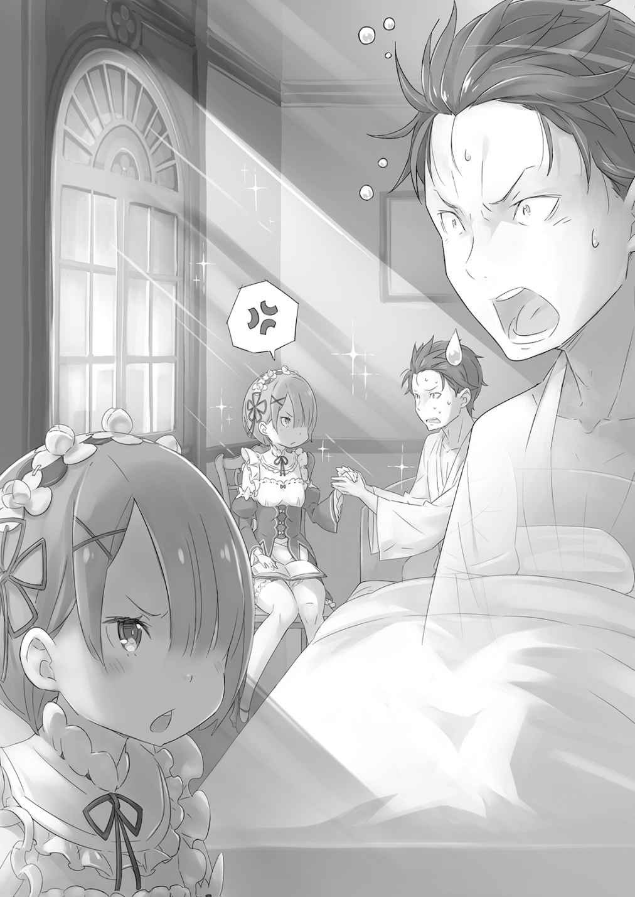
「もっとしてほしかった？」
「子どもじゃねぇんだ。いらねぇよ......」
「子どもみたいに泣きそうな顔して、よく言うわ。意地の張り方がガキそのものよ」
バツの悪いスバルを横目に、ラムが肩をすくめながら上から目線でものを言う。
「それじゃ、バルス」
「............」
スバルの前に再び椅子を動かし、正面に座ったラムがスバルを見つめる。
「──話を聞かせてもらうとするわ」
そう、ラムの方から話の口火を切ってきた。
「ひどい有様だったわ。村に知らない竜車が現れたと思えば、半死半生で薄汚れたバルスがいる。村の人間がラムを呼びにきたとき、最初は冗談かと思ったぐらいだわ」
淡々と、ラムは意識を失ったスバルが屋敷に担ぎ込まれるまでのことを振り返る。
「外れた肩と割れた額。折れた肋骨は接いであるけど、無理したら傷が開くわ。血と泥で汚れた服は処分した。──漏らしてたことは、エミリア様には黙っててあげる」
「......ああ、そら助かる」
掠れた応答をするスバルに、ラムは退屈そうな顔で肩をすくめた。
ラムからすれば今のはちょっとした笑い話だったのだろうが、肝心のスバルの方がこれでは大した話題にもならない。
「俺の傷、これを治してくれたのって......」
「エミリア様よ」
あっさりと、スバルが懸念していた通りの内容をラムが口にする。
その答えにスバルがうなだれると、ラムは腰に手を当てて鼻を鳴らした。
「仕方ないでしょう。最初はベアトリス様にお願いしたけど、断られてしまったのよ。あの方も気難しい方だから、断られることは覚悟していたけど」
「その......エミリアは、俺のこと何か言ってたか？」
「ラムからは何も言えないわ。それは本人と話をするべきことでしょう」
外れていた肩に手をやって、恐る恐る尋ねるスバルにラムの答えは冷たい。
「王都でエミリア様とバルスの間に何があったのか、ラムは聞いてないわ。興味もない。今のバルスの反応を見れば、どうせバルスが碌でもないことをしたんでしょう」
「辛辣だな」
「相応の評価だと思うけど？ 核心に踏み込むのが怖くて、違う話題で少しでも先延ばしにしようとしてるヘタレにはぴったりだわ」
「ぐ......」
ぐうの音も出ないスバルは、本心ではラムが求めている話がわかっていた。何しろ、戻ってきたスバルの傍にいるべき存在がいないのだ。当然、最初に報告すべきことだ。
それをこうして口にせず、スバルが自分から話し出すのを待つのはラムの優しさなのか、それとも厳しさなのか。──きっと、優しく厳しい心遣いだ。
いつまでも、その気遣いに甘えているわけにはいかなかった。
「──レムが、死んだ」
それを口にした瞬間、スバルの胸の中からスッと何かが抜け落ちる。
それは胸の奥底で、ずっと重たい塊となってつかえていたもので、今の告白をした瞬間にグズグズと形を失って胃の中に落ち、己の存在を主張し始める。
その塊がいったい何だったのか、頬を伝う熱い感触があってやっと理解した。
──俺はレムを、失わせたのだ。
滂沱と、涙がこぼれ落ちた。
そして気付く。ようやく気付く。スバルは何度も、レムを死なせた。
スバルがレムを死なせたのは、彼女の死を実感として得たのは、以前の屋敷でのループも含めればこれで四度目だ。四度、レムを死なせてやっと気付いた。
スバルがレムの死に対して、彼女のために涙を流したのはこれが初めてだった。
こんな自分のために尽くしてくれたレムのために、やっとスバルは涙を流した。
自分可愛さでもなく、罪悪感からでもなく、やっと純粋にレムのためだけに。
「俺が......何もできなくて。街道に霧が......白鯨が、出たんだ。それで、レムが俺を逃がそうとして......でも、俺は霧の中に取り残されて......それで結局......」
言いたいことがまとまらない。
嗚咽まじりの言葉は呂律が回らず、会話の前後もうまく噛み合わない。言い訳じみた内容が止まらず、それがレムの最期を穢している気がして、スバルは怖くなった。
罪は認めた。罰を受けよう。見苦しい自分に相応しい、あるべき罰を。
だからそのために、全てを明らかにするための説明を──。
「レムって、誰のこと？」
────。
────────。
────────────。
「あ、ぇ、は......？」
何を、言われた、のか、わからなかった。
ラムの口にした言葉の意味が呑み込めず、スバルは間の抜けた声で聞き返す。
レムッテダレノコト、とはどういう意味なのだろうか。
だが、ラムはそんなスバルを訝しげに見て、首を傾げながら再び口を開いて、
「レムって誰のことなの、バルス」
双子の妹の名前に眉一つ動かさず、それが誰であるのかを問いかけてきた。
「だ、誰も何も......馬鹿なこと言うなよ！ おま、お前の、お前の妹の名前だろ!? レムだぞ？ レムだ。レムだよ。ふざけてる場合じゃ」
「ラムの妹......」
唇に指を当てて、ラムは真剣に考え込むように目をつむる。
その思い出そうとする仕草が、今のスバルには耐え難いほどもどかしい。何をやっているのかと怒鳴りつけ、今すぐ霧の立ち込める街道にラムを叩き込んでやりたくなる。
「ラムの妹の、レム。ああ......」
「思い出したのか!?」
「いないものは思い出せない。ラムはずっと一人で、妹なんているはずもないわ」
ひどく白けた顔で、ラムはスバルに期待も抱かせずにはっきりと断言する。
「そんな、馬鹿な......何を、言って......」
「──ラムに妹なんていないわ」
「ふざけるな！ レムがいなけりゃ、魔獣の森の騒ぎはどういう話になるんだ！ 俺と、レムとお前とで、魔獣を......」
「本当にどうかしているわよ、バルス。癪に障るけれど、ウルガルムの群れを撲滅できたのはバルスの手柄が半分。あとはラムの努力とロズワール様のお力が全て。......その、レムとかいう名前の生き別れの妹の滑り込む隙間なんてないわ」
スバルの抗弁を聞いても、ラムは頑なに妹の存在を認めようとはしない。
屋敷で起こった繰り返しの日々の顛末も、ラムの中では違う話とすり替わっている。
確かにあったはずの出来事が、ラムの中では偽りの思い出で塗り潰されている。
意味がわからない。どうして、そんな風に答えられるのかがわからない。
「冗談にも、なってない......悪夢にしたって、出来が悪すぎるだろうが......」
「ラムはいつだって本気でいるわ。夢を見ているのはバルスの方でしょう」
「夢......夢？ 夢だと!? ふざけるな！」
取り付く島もないラムの態度に、スバルはシーツをはねのけて寝台から降りる。まだ体力が戻っていない下半身がふらつくが、激情がその体に活力を与えて歩き出させた。
「バルス、まだ立ち上がったら......」
「うるせぇ！ 黙って......黙って見てろ！」
ふらつく体にラムが手を伸ばしかけるが、激昂するスバルはその手を振り払う。
スバルが寝かされていたのは屋敷の東棟二階の、スバルの自室だ。レムの部屋は三階、その場所に彼女の痕跡を求めて、スバルは上階を目指して歩き出した。
「体力も戻っていないのに、無理を続けると倒れてラムに迷惑をかけるわよ」
後ろからついてくるラムがそんな言葉をかけるが、肩を怒らせて歩くスバルは聞く耳を持たない。普段よりも時間をかけて階段を上り、スバルは屋敷三階の通路を真っ直ぐに抜け、幾度も通った部屋の前に立った。
辿り着いたレムの部屋を見れば、ラムのおかしな考えも粉々に打ち砕けるはずだ。
部屋のドアノブを掴み、スバルは一気にその部屋へと押し入る。
躊躇などいらない。ここで躊躇えば、怖気づくスバルの心にまたしても言い訳を許してしまう。悩み、惑う時間など与えない。
踏み込んだ部屋の内装は簡素だが、慎ましやかに少女らしい装飾がされて──、
「......嘘、だろ」
何も、なかった。
踏み込んだ部屋の中には、他の空室同様に形だけ整えられた寝台と、部屋に備え付けの小さな机があるだけ。レムの部屋はシンプルではあったものの、無個性の塊のような、こんな部屋とは違う。女の子らしい、小物や飾り物は確かにあった。
「そんなはずが......」
部屋の中を見回して、信じられない気持ちでスバルは廊下へ飛び出す。
扉の脇に立つラムの視線を無視し、スバルは階段から今の部屋までの扉の数を数えた。間違えていない。間違えるはずがない。目をつぶっていてもここへ辿り着ける。
──なのに、どうして。
「べ、ベアトリスか？ 最初のときみたいに、空間をシャッフルして俺を......」
「バルス」
「そうだ、そうに決まってる！ あいつ、変な芸を身につけやがって。俺を馬鹿に......」
「バルス、いい加減にしなさい」
必死になるスバルを見て、ラムが静かな声で未練を断ち切りにくる。
愕然と、スバルはラムの方を見た。スバルを見るラムの瞳には哀切が浮かび、普段の彼女からは考えられないほど、スバルの身を案じてくれているのがわかった。
だけど、違うのだ。今、スバルが求めているのはそんな眼差しではない。
「レムは......ここには......」
「──そんな人は、この屋敷には最初からいなかったわ」
首を振り、ラムは瞳を曇らせるスバルに、はっきりと叩きつけるように、
「ラムに、妹なんて、いないわ」
そう言って、スバルの戸惑いに今度こそトドメを刺したのだった。
３
──レムの死は自分の責任だと、背負うべき罪をスバルは自覚したつもりでいた。
その重すぎる重責を、今までならば投げ出して逃げていただろう責任を、受け止めてようやく、レムの死に向き合おうとしていたのに。
「俺、には......」
レムの命を嘆く資格も、許しを請う資格すらもないというのか。
エミリアのためだと思ってやった行動は彼女に受け入れられず、感情はすれ違ったままいまだに分かり合えていない。
スバルのために全てを投げ出すレムは、世界を繰り返すたびに壮絶に命を散らす。その命の責任を負おうとすれば、世界はその責務すらスバルから奪い去った。
時間が、世界が、魔女教が、白鯨が、あらゆる障害がスバルの望みの邪魔をする。
どうしてこんなにも世界は自分に冷たく、あらゆる思いはスバルを裏切るのか。
それは、それは──。
「バルス、部屋に戻っていなさい」
呆然と、空っぽの部屋に立ち尽くすスバルにラムがそう言いつける。
傍らに立ったラムは、棒立ちのスバルを部屋から連れ出して背中を押すと、
「疲れているだろうから、色々と混乱しているんでしょう。部屋に戻って、ベッドで夢の続きを見なさい。ラムはまだやることがあるから、あまり構っていられないわ」
打ちのめされるスバルを前にしても、ラムの判断はスバルに厳しい。寄り添い続けることなどせず、自分に課せられた役割を果たしにいこうとする。
「部屋に戻って、寝ていなさい」
去り際にもう一度だけ言い残して、ラムの姿が階段を下って消えていった。
彼女の言う通り、眠ってしまえばこの疎外感から逃れられるのかもしれない。
悪い夢なのだ、きっと。夢を見ている中で、夢を見るためにベッドに入る。
逃げて、逃げて、逃げてしまえばいい。逃げ続けてここまでやってきたのだ。これまでと同じように、これまで通りに、逃げて逃げて逃げて逃げ続ければ──。
「逃げて、どうなる......」
呟いて、スバルの足は階段を下る寸前で止まっていた。
夢の中へ逃げ込もうとする判断を、階段へかけようとした足を引くことで引っ込める。軽く顎を上げてスバルが見たのは、上階へ向かうための階段だ。
逃げても何も変わらない。またしても、スバルはレムを裏切るところだった。
レムがスバルを守り、白鯨から命を賭して逃がしてくれたのは何のためか。
スバルに目的を遂げさせるためだ。
スバルの、大切な人たちを魔女教の魔の手から遠ざけるという目的のためだ。
今、ここでその目的すら放棄して、意識を逃避の中に手放そうというのなら、
「許しを請うより、卑怯なことだよな......」
振り返り、下ろうとしていた階段にスバルは背を向けた。
今度こそ、進み出した足取りに迷いはない。持ち上げた足が段差を踏み、スバルの体は階下ではなく上階へ。そこに、スバルが帰ってきた理由が待っている。
一段一段を確かめるように踏みしめ、スバルはゆっくりと上へと向かう。辿り着いた最上階に、スバルは求め続けたドアを見つけて息を吐いた。
ドアノブに手をかけたとき、スバルは自分がやけに穏やかな心地なのに気付く。
先ほど、レムの部屋へ駆け込んだとき、あれほど高鳴っていた心臓が嘘のように静まり返っている。それが落ち着きによるものなのか、緊張を通り越してしまい、鼓動が高鳴るのを忘れて重く沈んでいるのか区別がつかない。でも、
「勇気を、貸してくれ、レム──」
その名前を口にしたとき、スバルの手に確かな力が宿った。
伝わる力がドアノブを回し、強固に思えた扉が緩やかに開け放たれる。
そして、開かれた扉の向こうで、机に向かっていた少女がこちらを振り返り、
「──スバル？」
銀鈴に似た声が自分の名を呼ぶのを聞いて、スバルは目をつむる。
ひどく、言葉にし難い感慨が胸を駆け抜け、スバルはやっと思い出した。
自分が、彼女のこの声を聞くために戻ってきたのだということを。
銀色の髪を揺らし、透き通る白い肌をした紫紺の瞳を持つ少女。その儚げな美貌に哀愁の色を滲ませ、立ち上がった彼女は──エミリアはスバルに言った。
「......どうして、戻ってきたの」
スバルはその言葉の内容ではなく、震える声音の方にばかり意識を奪われていた。
唇を震わせ、瞳に力のない光を宿すエミリア。
久しぶりに顔を合わせた彼女の姿。最後に別れたときよりも、痩せてしまっているような気がする。声にも瞳にも疲労の色が濃く、眠れていないのではと思わされるほどだ。
きっと自分を追い詰め、外部からの干渉に心をすり減らされているのだ。
だからスバルは、
「行こう。ここにいちゃいけない」
踏み出し、エミリアの問いかけを無視して手を差し伸べる。
その強引な態度にエミリアは驚き、わずかに身を引いてスバルと距離を取った。縮めたはずの距離を広げられ、困った顔をするスバルにエミリアは首を横に振る。
「行くって、どこに......ううん、何のために？」
「ここじゃない場所ならどこでもいい。何のためかって聞かれたら、お前のためにって俺は答える。俺はお前のためにここに......」
「また、それなの、スバル」
スバルの答えに、エミリアはまるで失望したような声で言った。
エミリアは紫紺の瞳を微かに潤ませ、口を噤むスバルを上目遣いに睨む。
「急に戻ってきて、傷だらけで心配までかけて......王都で、フェリスの治療を受けてくれてたはずじゃなかったの？ どうして今、ここにいるの」
「色々あったんだよ！ 説明したいのは山々だけど、そんな時間も惜しいんだ。頼むから言うことを聞いてくれ。一緒に、今すぐこの屋敷から......」
「できないって言ったでしょ？ 私、そんなんじゃスバルを信じられないって、言った。......言ったよ」
嫌々と首を振り、エミリアは震える声でスバルを拒絶する。
それは王城の控え室で交わされたやり取りの続きであり、進展のない再現だった。
スバルの決死の思いはエミリアに伝わらず、スバルにはエミリアがどうして自分の気持ちをわかってくれないのかがわからない。ただ、前回と違うこともある。それは、
「嫌がるなら無理やりにでも連れていく。何日かすれば、嫌でも俺が正しいんだってことがわかるさ。だから......！」
「待って、待ってよ、スバル。どうしちゃったの？ そんな、スバルはそんなじゃなかったじゃない。私はスバルを......なのに」
「いいから黙って俺の言うことを聞けよ!!」
怒鳴りつけた瞬間、エミリアがその肩を震わせた。
信じられない、と目を見開くエミリアの前で、スバルは怒鳴った勢いのままに荒い息をつき、エミリアを強く睨みつける。
「ここにいたら駄目なんだ。お前は後悔する。絶対にする。誰のためにもならない。誰も救われない。俺はもう苦しみたくないし、泣きたくなんてないんだよ！」
「何の、話をしてるの......？ スバル、私にはわからないよ」
「うるさい！ お前らは......お前は！ 俺の言う通りにしてればいいんだよ！ そうすればうまくいくんだ。そうなんだ！ 何で誰もわかってくれねぇんだよ......ッ！」
頭を掻き毟り、スバルは目の前のエミリアにではなく、不条理全てに声を上げた。
癇癪を起こすスバルの発言は、エミリアには意味がわからなかっただろう。だが、スバルにはその呪詛を吐き出す場面はここでしかあり得なかった。
スバルが遭遇した全ての不条理──その出発点であるエミリアの前でしか、この堪え難い醜い感情は吐き出すことができないものだった。
涙声で訴えかけるスバルを見て、エミリアが悲しげに目を伏せる。
「ごめんね。スバルが何を言ってるのか、私にはわからない。わかってあげられない」
目を伏せたまま、エミリアはスバルの心を慰めるように声の調子を和らげる。
「わかってあげたいの。だけど、今はそうしてあげられる時間がないかもしれなくて。......やらなくちゃいけないこと、たくさんあるの。だから今は」
「うまくいかねぇよ」
その気遣いを遮って、スバルは短い言葉でエミリアの思いを踏み躙る。
悪意に満ちた声を聞いて、エミリアは呆気にとられた顔で瞬きを繰り返す。
「うまくいかない。お前は駄目だ。失敗する。やれるわけがない。全然駄目だ。口ばっかりだ。救えない。救われない。無茶と無謀を積み重ねて、重ねた無理と同じ数だけ死体の山を見ることになる。──それが、お前の未来だ」
どす黒く、醜悪で、卑賤で、唾棄すべき快楽がスバルの体を満たしていった。
自分の口にした言葉、単語、一つ一つがエミリアの鼓膜を震わせるたび、その表情に痛みが、心に亀裂が、想いに刃が差し込まれるのが実感できる。
この瞬間、エミリアの全ては自分に向けられている。
この刹那だけは、エミリアは自分を無視できないという昏い悦びがそこにはあった。
決意を無下にされ、覚悟を笑い飛ばされ、行いを悪辣に踏み躙られ、過去は無為だと嘲られ、未来は真っ暗であると宣告される。
その一つ一つに翻弄されるエミリアを見て、スバルの心は──。
「どうして？」
ぽつりと、エミリアが呟いた。
心ないスバルの言葉で、闇に閉ざされる未来を告げられる痛みで、悲嘆にその表情を強張らせるエミリア。だが、彼女の紫紺の瞳はそんなときにも曇ることを知らない。
切なげに潤む輝きに魅入られ、そこに映る世界──即ち、エミリアの見つめるスバル自身が映り込んでいるのを見て、
「どうして、スバルはそんなに苦しそうに泣いてるの？」
──自分が涙を流しながら、歪んだ笑みを浮かべていたことに気付いた。
全ての言葉が跳ね返ってくるのがわかった。
涙を流し、エミリアの想いを踏み躙った言葉一つ一つを思い返せば、何のことはない。それは全て、スバル自身を切り裂く言葉の数々だった。
決意を、覚悟を、行動を、過去を、未来を、否定されたのはスバルも同じだ。
何をしても無駄なのだと思う気持ちがある。
何かをしなくてはならないという義務感に急き立てられる自分がいるのもわかる。
何のために抗わなくてはならないのか、わからない。わかることがあるとすれば、
「俺は......俺を、ここまで送ってくれた......違う。ここまで連れてきてくれたレムのために、レムのためにも、やらなきゃいけないことが......」
「レム？」
たどたどしく胸の内を探り、ここへきた原初の想いを取り戻そうとする。
そんなスバルの意味を成さない呟きを聞きつけ、エミリアが小さく首を傾げた。
「────」
息が、詰まった。
エミリアの口から紡がれた名前、その語感。
それは明らかに、その音の意味を知らないものが口にする類のものであったから。
「──お前も」
「え？」
「お前もレムを、忘れるのか──」
双子の姉にさえ存在を忘れ去られ、あったはずの痕跡すら消失し、命を賭して戻る理由であった人物でさえ、その子のことを覚えていない。
彼女の日々は、時間は、想いは、生き様は、願いは、それでどこに消えるのだ。
あの笑顔は、あの怒りは、あの涙は、あの触れ合いは、あの子が確かに生きていた証は、あの子を構成する全ては、どうあれるというのか。
「──いいさ、全部、話してやる」
え、とスバルの言葉に驚きを浮かべるエミリア。その整った美貌を見上げ、スバルは自分をこうまで突き動かす想いの源泉を再確認する。
このままレムのことが、彼女の想いが、彼方へと消え去ってしまうぐらいならば。
「何もかもさらけ出して、血反吐を吐いた方がマシだ」
決断する。
全てを打ち明け、真実を語り、己の心の内を露わにすることを。
スバルの眼差しが変わり、それを察したエミリアが固唾を呑む。
そのエミリアの前で、スバルは自分の胸に手を当てた。鼓動が早い。今から何が起きるのか、その結果をあらかじめ理解しているからこその恐怖だ。
それは痛みだ。それも発狂しかねないほどの痛み。
心臓を握り潰されるように弄ばれ、声を上げることもできない苦しみを、いつ終わるとも知れずに延々と与えられ続けるのだ。
だが思う。こうも思う。
知ったことか。構うものか。痛みなど、この苦しみに比べればなんだというのだ。
信じてもらえない。理解してもらえない。何より、レムの存在を誰も覚えていないような、こんな苦しみに耐えるぐらいならば、痛みなどどれほどのものでもない。
──くるならくればいい。心臓ぐらい、くれてやる。
「エミリア」
「うん」
「俺は、未来を見てきた。この先、何が起きるかを知ってるんだ。どうしてかっていうと、俺は......俺は『死に戻り』し──」
全てを打ち明けようと、核心に触れた瞬間にやはり停滞は訪れた。
予想通り、世界の動きは徐々に緩慢になり、やがて静止する。途端に景色は色を失い、それまで聞こえていた全ての音が消える。
風の音が、息遣いが、心臓の音が、遠ざかり遠ざかり、戻ってこない。
五感の何もかもを意識が置き去りにし、スバルは世界から孤立する。
──そして、その孤立したスバルを一人にはさせまいと、求めてすらいない慈愛の掌がゆっくりと姿を現した。
生まれた黒い靄は静かに、宙を滑るように蠢いて腕の形を形成する。
以前までははっきり腕の形を成していたのは右腕だけだった。だが、逢瀬の回数が増すごとにもてなしの変わる魔手は、拙い速度で左腕をも形作る。
両手がスバルに迫り、左手は愛おしむように頬を撫でた。残る右手は待ち切れないと言いたげに愛撫を急ぎ、胸の内に入り、肋骨をすり抜け、心の臓を優しく包むのだ。
やわやわと、心臓が掌の内で弄ばれる感覚が全身に怖気を走らせる。
ひと思いに激痛を与えるこれまでと違い、文字通りスバルの命を握る黒い靄は、まるでスバルの覚悟と決意を、極限の恐怖で折ろうとでもいうかのように悪辣に扱う。
くるはずの痛みが訪れず、スバルの心に静かな恐怖が芽生え始めた。
痛みへの覚悟、耐え抜くという誓い。魔手はそのスバルの決意を嘲るように、ただ痛めつけるだけでは足りないとばかりに、心も体も屈させようと知恵を働かせている。
想像していたものと違う苦痛の与えられ方に、スバルは身動きを封じられながら悲鳴を上げたくなる。しかし、動かない奥歯を噛みしめてそれを拒んだ。
痛みが、恐怖が、未知がスバルを苦しめようと、心は絶対に屈せない。
そうでなければ報われない。そうでなければ許されない。
誰もレムの存在を覚えていないこの世界で、レムの死の責任を負うスバルが許しを請うとするならば、それは己の魂以外にはあり得ないのだから。
痛みも苦しみも、好きなように切り刻むがいい。
──この決意だけは、そう簡単に砕かれてなどやりはしない。
心臓を弄ぶ黒の魔手を睨みつけ、スバルは来る瞬間を息を殺して待ち構える。だが、魔手は一向に動かない。いつでもやれるからこそ、やらずにいることもできる。
時間の停滞した世界では、消耗戦を挑まれれば精神が摩耗するまで戦うしかない。
今は固いスバルの決意も、いずれは破綻し、諦念に呑まれてへし折れる。
──もしもそう思っているのなら、その考えは甘すぎる。
何時間でも、何日でも、苦痛に耐えてやろう。伊達に何度も死んでいるわけではない。
死ぬわけでないのであれば、痛みなどどれほどのものだろうと耐え抜いてみせる。
そんなスバルの覚悟は──、
「──あ？」
唐突に、静止していた世界が色づき始めた。
訪れるはずだった痛みは前兆だけで気配を消し、この世あらざるどこかへ消える。
覚悟と共に取り残されたスバルの下に、音が、色が、時間が舞い戻ってきた。
息遣いが、鼓動が、世界の動き出す音がスバルの周りに溢れ出し、呆然となるスバルを嘲笑うように世界は息を吹き返していた。
スバルの断固たる覚悟を前に、魔手は自らの行いの無力を悟ったというのだろうか。
そんなわけがないと、これまで魔手に苦しめられた幾度もの経験がそれを笑い飛ばす。
今も胸には、黒い靄の右手が心臓を柔らかく握っていた感触が残っているのだ。
あれが握りしめられていれば、今頃スバルは──、
「────」
そこまで考えて、スバルはふと疑問を抱いた。
スバルの心臓に触れていた、忌まわしき右手の感触はしっかりと覚えている。
だがその間、左手はどこにいっていたのか。最初に頬に触れ、その後左手は──、
「──ふ」
疑問の答えが出るより先に、目の前のエミリアが何事か呟いた。
その声に我に返り、スバルは時が止まる前に告げようとした言葉の続きを思い出す。
何事もなく悪夢から解放されたことに動揺していたが、禁忌を犯した代償を向こうが求めないのであればこれ以上のことはない。
全てを打ち明け、一秒先の未来を分かち合い、スバルが心から望み、皆が心から望まれる世界を得る。そのための決意がようやく実る──。
「あ」
その直前、ふいにエミリアの体が前のめりにスバルの方へ寄り掛かってきた。
思わず手を差し伸べ、エミリアの体を受け止める。掌に温かく、柔らかな感触が触れたことにスバルはわずかに息を詰め──、
びしゃり。
「──え」
びしゃり、びしゃり、びしゃり。
「──えみりあ？」
びしゃりびしゃりびしゃり、びしゃ。
変な音がして、抱きとめた、エミリアの、口から、血が、たくさん、溢れて。
──右手がスバルの心臓に触れている間、左手はどこへ消えていた？
スバルの肩に頭を預け、エミリアの吐血は止まらない。
溢れ出すおびただしい量の血がスバルの半身を赤く染め、エミリアの体を軽くする。
「やめ......え？ ちょ、ぇ？」
吐き出される血を止めようと彼女の顔を上に向け、途端にその首が力なく折れる。だらりと肩が下がり、光を失った瞳と目が合って、全てを悟る。
──スバルの目の前で、今、エミリアが、命を。
「ぉぉぉぉっぉあああああ──!!」
絶叫が木霊する。
叫ぶことで、喉が張り裂けるほど絶叫することで、全てを忘れられるのならば。
今すぐにこの喉を引き裂いて、掻っ捌いて、何もかもを奪い取ってくれ。
腕の中でエミリアの体が、力のない体が軽くなっていく。
流れ出す血は止まらない。スバルの体が赤くなる。どんどんどんどん赤くなる。
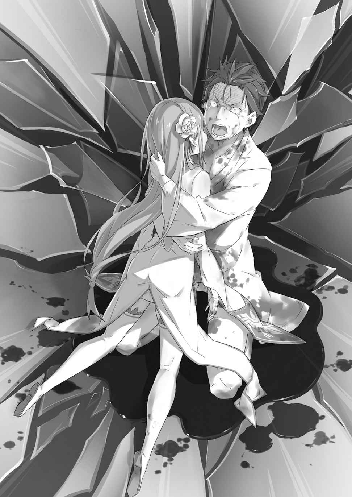
──右手がスバルの心臓に触れたとき、左手はエミリアの、心臓に。
決意が、覚悟が、行動が、過去が、未来が、嘲笑に踏み躙られていく。
断固たる決意が、打ち砕かれまいと決めたばかりの覚悟が、粉々に打ち砕かれて、ナツキ・スバルを絶望の淵へと追いやっていく。
──絶叫は高く高く尾を引き、消えることがない。
スバルはついに、ついに。
──エミリアを、殺した。
４
──血反吐も涙も、今度こそ体の中から絞り尽くしてしまったのではないだろうか。
いったい、どれほど泣けばいいのだろうか。
いったい、どれほど苦しめばいいのだろうか。
自分はそんなにも、許されないことをしてきたのだろうか。
傷を負い、心を踏み躙られ、大切な人を奪われ、守るべき人たちを救えず、最も大事な人の命をこの手で無残に散らすことになった。
──これはいったい、誰に対する罰なのだろうか。
「お、れは......」
間違っていた。勘違いしていた。調子に乗っていた。
自分の魂にこびりついた『魔女』の呪いを、一度ぐらいうまく逆手に取れたぐらいで利用できるなんて自惚れていた。死んでも戻れるという軽率な考えがそれを助長し、『魔女』という忌むべき存在と、その魔手を軽視する結果を招いた。
それらの積み重ねが、今の目の前の惨状だ。
崩れ落ち、膝の上にエミリアの亡骸を乗せて、スバルは虚ろな瞳をさまよわせる。
エミリアが、その命を散らしてどれほど時間が経ったのだろうか。
触れた彼女の頬は冷たくて、その口から溢れた鮮血も熱を失って冷え切っていた。柔らかな肢体も固くなり始めていて、その『死』を否定する要素が失われていく。
それを理解してもなお、スバルは動き出すことができないままだった。
もう、疲れてしまった。
これだけ苦しんだのだから、もういいではないか。
スバルほど苦しい思いをした人間が、この世界のどこにどれだけいるというのか。
以前の自分と比べれば考えられないほど頑張ったし、何とかしようと努力も重ねた。それでも最悪は避けられず、災厄に呑まれて全てを失った。それならもう──、
「──まるで、俺が世界で一番不幸だ、とでも言いたげな顔なのよ」
誰もいなかったはずの場所で、スバルは幻聴を聞いたような顔で入口の方を見る。
ゆるゆると、もどかしい動きで首をもたげ、スバルは一人の少女が扉の前に立っているのを見つけた。軽蔑の視線で、少女はスバルを見つめている。
クリーム色の長い髪は二つに分けて美しく巻かれ、まるで西洋人形が着るような豪奢なドレスを着こなした、愛らしい顔立ちをした少女だった。
この繰り返しの日々で二度、屋敷へ帰り着いたスバルが顔を見られなかった人物だ。
「ベア、トリス......」
「しばらく見ない間に、腑抜け面がさらに腑抜けてしまったようかしら」
辛辣に言い捨てて、ベアトリスは部屋の惨状を見渡した。そして、
「ずいぶんと、派手にやらかしたもんなのよ」
ひどくあっさりと、吐息まじりにベアトリスは惨状をそう評する。
血の海で動かなくなったエミリアを、その彼女を空虚な目で抱きかかえるスバルを、そんな場面を見て、そんな感慨しか浮かばないのか。
だが、そんな当たり前の反感すら、今のスバルには湧いてこない。
むしろ、何も問い質そうとしないベアトリスの態度は今のスバルにはありがたかった。ありがたついでにこのまま、スバルを放置してくれればよかったのに。
「にーちゃ、は出てこれないかしら」
言いながら、スバルのすぐ傍らへ歩み寄ったベアトリスが膝を折る。
「探せ、と言っても聞かなそうなのよ。......手が汚れるから本当は嫌なのかしら」
気の進まない風に言って、ベアトリスの手がエミリアへと伸びる。死したエミリアに何をするのか、無反応のスバルの前で少女の指先がエミリアの首元に触れる。
その行いに言い知れない不快感があって、スバルはそれを咎めようとする。
「外れたかしら」
だが、咎める声が出るより、ベアトリスが目的を果たす方が早い。エミリアから離れるベアトリスの掌には、緑色に輝く美しい結晶石が握られていた。
それはエミリアが肌身離さず、首から下げていたペンダント──エミリアが契約する精霊パックの依り代であり、その契約の証だ。しかし、それは今や、
「割れ、て......」
「割った張本人が白々しい......といっても、お前に自覚はなさそうなのよ」
掌の上で真っ二つになった結晶石を寂しげに見て、ベアトリスは石を懐へ仕舞う。
割れた結晶石、その中にいたはずの精霊はどうなってしまったのか。
今、こうして腕の中で眠るエミリアを『娘』と称し、誰よりも愛していたはずのあの精霊はどうなってしまったのか。どこへいってしまったのか。
「心配しなくても、にーちゃは死んだりしないかしら。一度、本体に戻らされてしまっただけなのよ。こっちにくるのには時間が......でも、猶予はそんなにないかしら」
スバルの抱いた疑問に当然のように答えて、ベアトリスは立ち上がるとスカートの裾を軽く払う。弾む少女の縦ロールを見ながら、その答えにスバルは安堵していた。
あの精霊が生きているならば、この場所へ戻ってくるというのなら、きっと。
「──何か、言いたいことはあるかしら」
ひどく場違いな安堵を得ていたスバルに、ベアトリスが平坦な声で問いかけてくる。
その声にベアトリスのどんな感情が込められていたのか、スバルは気付かない。
ただ、何か言いたいことがあるのかと、そう問われたなら──。
「ころしてくれ」
──今すぐに、殺してほしかった。
もう何もかもにうんざりした。あらゆることに疲れ切った。
だから、死にたくなった。死んで、何もかも終わりにしてしまいたい。死んでやり直せたとしても、きっと自分はまた全部失うだろう。死んでやり直せたとしても、やり直せなかったとしても、もうこの世界にいたくないのだ。
エミリアが死に、レムは存在を消され、スバルは何にも報われない。
だから、
「殺して、くれ......」
終わりだけが、今のスバルの救いだった。
何か頼みを聞き届けてくれるなら、このどうしようもない命を啄んでほしい。
関わる命の尊厳を踏み躙り、想いを無為にし、何もかもに見捨てられた哀れで愚かなこの身を焼き尽くし、滅ぼしてほしい。
目の前の、超常の力を持つ少女にならばそれができるはずだった。
ベアトリスはスバルを嫌っていたはずだ。そのベアトリスがこの願いを聞いてくれるなら、きっとスバルに惨たらしく、罪業に相応しい最期を与えてくれるに違いない。
スバルという愚かな人間は、九度死んでも何も変わらなかった。
これで十度目、キリがいい。神も仏も女神も魔女も、愛想を尽かすにはいい頃合いだ。
だから、
「ここで、殺してくれ」
エミリアの亡骸を抱き、スバルはベアトリスに懇願する。
ここが最期になるならば、エミリアの亡骸を抱いたまま終わってしまいたい。
わがままばかりを通し、最悪の結果を招いたスバルの最後まで利己的なわがまま。
ギュッとエミリアを抱く腕に力を込めて、スバルは目をつむって最期を待つ。
そうして、しばらく沈黙の時間が落ちただろうか。
「......のよ」
それは、身勝手に自分の最期を決めたスバルの鼓膜を不意に打っていた。
「──え？」
小さく、弱々しい、掠れた声だった。
思わず吐息が漏れて、スバルは閉じていた瞼を開けて少女を見上げる。
スバルの前に立つベアトリスは変わらぬ場所で、スバルを今も見下ろしている。
その小さな体を己の両手で抱きながら、寒さに震えるように唇を噛みしめて、
「ベティーにお前を殺せだなんて......そんなの、残酷すぎるかしら......っ」
泣きそうな顔と声で言われて、スバルはわけがわからなくなってしまった。
瞬きを何度繰り返しても、ベアトリスの色濃い悲嘆は消え去りはしない。
それはスバルが知る、いずれの少女の表情とも異なるものだった。
だってベアトリスはスバルを嫌っていたはずだ。
いつも素っ気なくしていたし、お人好しな部分があるからスバルに構ってくれてはいたけど、基本的には酷薄に徹することができる人物だと思っていた。
あっさりと受け入れてくれることはないにしても、拒否されるかもしれないと思ってはいても、それは侮蔑と嘲弄を伴って投げかけられるはずのもので。
「何もわかってない......お前は何も、わかっていないのよ......！」
スバルを殺すということを、こんな悲しみの表情で拒絶されると思わなかったから。
「べ、ベアトリス......？」
「お前の願い事なんか、何一つ聞いてやらないかしら。死にたいなら死にたいで、勝手に死ねばいいのよ......ベティーは願い下げかしら」
首を横に振り、ベアトリスは両目をつむって表情を殺した。
浮かんだ涙は流れることなく瞳の奥へ隠され、少女はその手をスバルへ向ける。
「何を......景色が!?」
途端、世界が歪み始めた。
スバルの周囲の空間が歪み、亀裂が走る。
世界が崩壊する予兆。そう思えて、とっさに腕の中の亡骸を強く抱き寄せた。
それを見下ろし、ベアトリスは冷え切った感情を瞳に宿し、
「どうせもう何もかもダメだけど、お前にここにいられたら困るのよ。──せめて、この屋敷だけは守らせてもらうかしら」
「何を言って......いや、ベアトリス、お前は！」
「──ベティーは、ロズワールとは違うのよ。たとえ未来を得るためでも、痛いのも辛いのも苦しいのも悲しいのも恐ろしいのも全て、嫌になったかしら」
問いかけにならない問いかけに対して、答えにならない答えが返される。
空間が歪み、生じた亀裂にスバルの肉体が物理法則を越えて巻き込まれる。
痛みは、ない。
「せめて、ベティーの見えないところで死んでしまえばいいかしら」
最後の呟きは薄情さを装っているくせに、寂しさを欠片も隠せていなかった。
何も言えない。何もわからない。ただ一つ、伝わってきた感情があった。
──ベアトリスはスバルの決断を、行いを、悲しんでいたのだ。
歪みが極限に至り、ひしゃげた空間が弾けるようにして消し飛ぶ。
視界にノイズが走るような違和が刹那だけ世界を席巻し、その直後には大気の歪曲は名残すら残さずに消え去っていた。
あるのは血塗れの床ごと抉られた、スバルとエミリアがいた痕跡だけ。
二人の消失を見届けて、ベアトリスは疲れた顔つきで壁に背を預ける。のろのろと持ち上がる掌が、その瞳を上から覆ってベアトリスから世界を隠し、
「──お母様。あとどれだけ、ベティーは」
世界に取り残された少女の、その呟きは誰にも届かず、掠れて消えた。
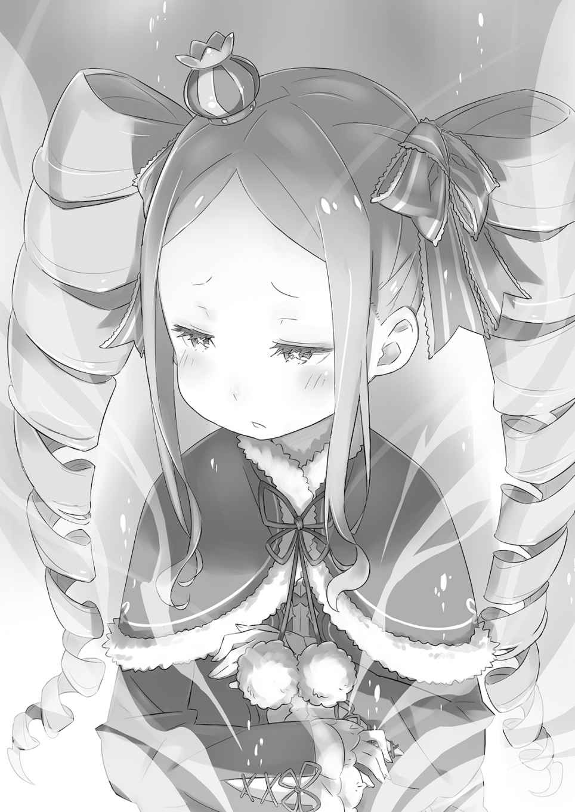
５
──空間の裂け目から前触れなく放り出され、苔むした草木に頭から突っ込んだ。
「ぶわっ」
土の味のする唾液を吐き出し、顔を上げるスバルは周囲を見回した。
薄暗い視界には木々が群れを成し、全方位を自然に囲まれたスバルは自分が森の中に投げ出されたことに気付いた。
「夜の、森......どこの山の中だ......？」
月明かりが遮られていないおかげで、かろうじて視界は確保できる。
冷たい風が木々の葉を揺らし、虫の鳴き声が鬱陶しく宵闇の森を支配している。屋敷の外が夜であった事実から、スバルは自分が半日以上も眠っていたことを悟った。
同時に、自分がこうして森の中にいるということは、
「空間転移......みたいな認識でいいのか」
大気が歪み、生じた亀裂に呑み込まれた直後、森に放り出されていたのだ。
『扉渡り』という魔法で、屋敷の中の扉と自分の禁書庫の空間を自由に繋いでいたベアトリスだ。その気になれば、人一人を転移させるぐらいはわけないのかもしれない。
だが、理屈が理解できたところで、ベアトリスの真意はわからないままだ。
──今も、最後に見せた泣きそうな顔が脳裏を離れない。
願いを拒絶されるにしても、軽蔑されて放置されるものとばかり思っていた。
なのに、ベアトリスは落胆と失望を瞳に宿してスバルを見つめて──、
「それじゃ、まるで......」
期待でも、されていたみたいではないか。
あまりに自分勝手で、自分本位な思いだとスバルはその考えを否定する。
自分が何もできない疫病神であると自覚したではないか。納得したではないか。
自分で自分に期待できないのだから、誰かが自分に期待してくれるはずがない。
ましてや、嫌われていた相手にまでそれを求めるなんて、『傲慢』が過ぎる。
──期待などされたくないと、ずっとずっと、逃げ続けてこの世界にきたくせに。
「どうしようもないな、俺って奴は......」
荒んだ笑みを浮かべ、スバルはゆっくりと草の上で膝を立てる。と、思ったように動かない足下を見て、スバルは自分の膝に乗るもう一つの重みにようやく気付いた。
膝の上には今も、共に転移してきたエミリアの亡骸が乗っていたのだ。
「えみ、りあ......」
薄闇の世界で、疎らな月光に照らされる青白い死に顔。
死相は苦悶でも安らかでもなく、ただただ自分の身に起きる不運の原因がわからない困惑に満たされていた。生きながらに、時の止まった世界で心の臓を潰されたのだ。
痛みを理解する時間が残されていたか、それすら怪しい。
ただ、仮に痛みを感じていなかったとしても、それは救いにはならないだろう。
安らかな死などきっと存在しないし、死によって救われることもないだろうと思う。
──今のスバル自身を除けば、だが。
「ごめんな。ごめん、ごめん。本当に、ごめん......」
エミリアの顔を見下ろす内に、その白い頬に水滴が落ちる。
涸れたと思い込んでいた涙は底を知らず、終わることのない責め苦がスバルを苛む。
声が聞こえる。自分を糾弾する声だ。
出会った全ての人たちが、凍てつく怒りでスバルに罵声を投げかけてくる。
その中には銀色の髪の少女も、青い髪の少女の姿もあって──。
「誰か......誰でも、いい......」
──殺してくれ。
消えない罵声を浴びながら、スバルはエミリアを抱きかかえて立ち上がる。
そのまま草を踏み、枝を割り、ゆっくりと夜の森を歩き始めた。
遠く、獣の遠吠えが響くのが聞こえる。
今なら、あの黒い魔犬との出会いだって笑顔で受け入れられそうな気がする。
血肉を、マナを、スバルの命を根こそぎ食い散らかしてほしい。
そうでなければ、そうしなければ、ナツキ・スバルは救われないのだから。
「────」
遠吠えの聞こえた方を目指し、スバルは暗い森をさらに深淵へ向かって進む。
抱いたエミリアの重さを、視界の悪い山道を歩く疲労感を、今は感じない。
目的が明確で、それを果たすために懸命だからだろうか。皮肉な話だった。
そして、運命の皮肉はそれだけに留まらない。
「ここ......この溝を、越えて......それで」
下り坂を慎重に抜け、うねる木の根を階段のように踏んで乗り越える。
燃え尽きる寸前の蝋燭の火のように、命が最後の死力を尽くしていた。だが、迷いない足取りの原因はそれだけではない。単純な話、見覚えがある道のりだからだ。
何故なら、この場所は──、
「ああ、いたな」
安堵したような、的外れな感慨による微笑が口元に浮かんだ。
血がこびりつき、精神が擦り切れた人間だけが浮かべる狂笑だ。そんな笑い方をする男をスバルは知っている。鏡を見れば、きっと同じ笑顔を自分も浮かべている。
見るものの心を蝕み、生理的な嫌悪感を呼び起こす禍々しい笑み。
だが、その笑みを向けられた彼らは、その狂笑に慣れ親しんだ者たちだった。
「────」
夜の森の中、スバルを取り囲むのは闇に同化する黒装束の一団だ。
影から浮かび上がるように湧いた彼らはスバルを囲み、声もなく、音もなく、存在感すら感じさせないままジッとこちらを見つめている。
敵意も好意も悪意も善意も、意思という意思が感じられない視線の渦。それを全身に浴びせられながら、スバルは一回目の世界での彼らとの出会いを回想した。
「同じ、だな......」
スバルの記憶をなぞるように、黒装束たちが一斉にその場で頭を垂れてみせた。
木偶人形のように意思のなかった彼らが、スバルに初めて見せる『敬意』だ。
彼らが何故、自分に敬服するのかスバルにはわからない。
ただはっきりしているのは、この一団が魔女教の信徒であり、彼らの信奉する魔女とスバルのまとう闇に何かしらの関係があるということだけだ。
「──どけ」
聞きたいことが、本当ならたくさんあったのだと思う。
こうして全てに諦観してしまう前ならば、問い詰めたいことは山ほどあった。
けれど、今はそんな感傷すらも無用の長物でしかない。
短いスバルの命令に、黒装束たちは異を唱えずに闇の中へと溶けて消える。
視界から彼らの存在が消えると、スバルは世界が静けさに満たされたのに気付いた。
追い求めた獣の遠吠えも、絶え間なく聞こえた虫の鳴き声も、風の音も聞こえない。
生けるもの全てが魔女教を嫌悪しているとでもいうのか。
あるいは魔女教だけではなく、スバルもいるからかもしれない。魔女教とスバルが一緒にいる場面は、世界すらも同席を拒むほど唾棄すべき絵面であるのだ。
──その方が、今の自分には似合いの評価に思えた。
薄ら笑いを浮かべて、スバルは消えた魔女教徒の囲みを越えてさらに進んだ。
根を越え、土を踏み、草木を靴裏で踏み躙って、やがて森が開ける。
眼前に広がる岩場と、そそり立つ断崖絶壁。
「お待ちしておりましたデス。寵愛の信徒よ」
その岩壁の前で、痩せぎすの男がスバルと同じ狂笑を浮かべて待っていた。
６
「おやおやおや？ しかもしかもしかもかもかもかも、その腕に抱いていらっしゃるのはひょっとして......半魔の娘ではありませんデスかね？」
岩場へやってきたスバルと、その腕の中のエミリアを見たペテルギウスが首を傾げる。狂人は首の角度を水平にしたまま、愉しげに舌を出して唾液をこぼした。
「なんと、ワタシたちの試練を受けるより前に命を落とすとは......何たる悲運！ 何たる非業！ あぁ！ そしてそしてそして......アナタはなんと勤勉なることか！ 我々が動くより前に！ 半魔の身を！ 命を！ 試練にかけて奪ってくれているとは！」
腕を振り回し、大仰な仕草でエミリアの死を叫ぶペテルギウス。
気付けば、いつの間にか魔女教徒たちがペテルギウスの周囲に集まり、全員が跪いて狂人の狂態に耳を澄ませて傾聴していた。
「俺が、勤勉......？」
「ええ、そうデス！ 勤勉！ 素晴らしいデス！ アナタは判断が遅く、知恵の巡りが悪く、決断力に欠けたワタシたちと違い、魔女の意志を誰より先に体現したのデス！」
掠れた呟きを聞きつけて、ペテルギウスは嬉しそうに嗤ってスバルに駆け寄った。そのまま彼は滑るように跪き、岩場の地面に額を叩きつけるように土下座する。
「それに比べて！ ワタシとその指先のなんと遅く、愚かで、欠落していることデスか！ 嗚呼、お許しを！ 愛に！ 報いれぬこの身の不出来を！ 怠惰であるこの身の不実を！ アナタの与えてくださる愛に応えられぬこの愚鈍な身を、どうかお許しください！」
滂沱と涙を流し、ペテルギウスは岩場に腕を叩きつけ、額を割るほどに謝罪する。
激しい自傷行為に血が飛び散り、裂けた手首の傷からは骨が見える。それでも凶行は止まらず、周囲の信徒たちも狂人に倣って各々が自傷行為に走り出す始末だ。
血と苦痛の狂宴──それを目の当たりにしながら、スバルは何も感じなかった。
あれほど憎んだ男を目の前にしても、スバルの心に何の情動も芽生えない。
「嗚呼、あのお方の想いに報いれぬ不出来なワタシに代わり、試練を成し遂げたアナタにワタシは何ができるのデスか。教えてほしいのデス。ワタシはワタシが怠惰でないことを愛に証明するために、いったい何ができるというのデスか？」
「殺してくれ」
詰め寄り、額からの流血で血涙を流すペテルギウスの懇願に、スバルは答えた。
唐突なその言葉に、さしもの狂人もその表情に唖然としたものを──、
「そんなことでよろしいのデスか？」
浮かべず、一瞬の躊躇いもなしにスバルを突き飛ばした。
踏鞴を踏み、後ずさったスバルを見つめて、ペテルギウスは恍惚とした顔をする。
「嗚呼、素晴らしきかな、素晴らしきかなかなかなぁ！ 試練を果たし、救いを求める信徒に求めた救いを、愛をもたらすワタシの行いは勤勉なるかな！ 嗚呼、怠惰であらずに済むのデス！ ワタシもアナタも！ アナタに感謝を！ ワタシの勤勉さに愛を！」
思い詰めたスバルの答えに何ら疑問なく、己の行動に一切の呵責なく、この世の条理に何一つ揺るぎなく、ペテルギウスは勤勉を装い殺意を解放する。
その狂人の姿を見て、スバルは内心にざわつくものを得ながら目を閉じた。
──これで、少なくとも、この瞬間のスバルの想いは報われるのだ。
「それにしても」
殺意が迫る気配を肌に感じるスバルに、ペテルギウスが何事か呟く。
「試練一つすら乗り越えられず、あまつさえ大罪の一つとすら向き合えず、大望を抱いた挙句に最初の石ころに躓いて終わるとは......」
それは眠るエミリアを見つめて紡がれる、狂人の嘆息で、
「──ああ、アナタ、『怠惰』デスね！」
それはこの上ないほどに、エミリアの死を侮辱する発言だったから。
かつての世界でこの狂人が、大切な少女の命を侮辱したことを思い出させたから。
「────」
閉じた目を開けた瞬間、スバルは眼前に掌の形をした黒い靄が迫るのを見た。
一瞬、脳裏を過る苦痛の記憶に体がすくんだ。
だが、あの魔手とは決定的に違うことがある。体が動く。足が動く。腕が動く。だから身をかわせるのだ。
ゆらりと迫る黒い掌を掻い潜り、エミリアを抱いたままスバルは横に飛んだ。行き過ぎた掌が戸惑うように消失し、それを見届けるスバルが荒い息を吐く。
「......アナタ。今、見えざる手を見ていませんデスか？」
震える声で、爛々と輝く双眸を見開き、ペテルギウスがスバルを見つめていた。
狂人は枯れ枝のように細い指を口に差し込み、指先を順番に一つずつ噛み潰す。一本ごとに肉が爆ぜ、骨が割れる嫌な音が響き、鮮血を滴らせながら、
「駄目デス、駄目なのデス。おかしい、間違っている、誤っている、過っている。ワタシの権能を、『怠惰』の権能を、寵愛によって授けられしワタシの『見えざる手』を！ 他の誰かが目にすることなど、許されないのデス!!」
血を吐き、爪と骨の破片を咀嚼し、ペテルギウスが血走った目でスバルを睨んだ。
──次の瞬間、ペテルギウスの背後から黒い腕が湧き出す。
ペテルギウスの影が爆発し、踊り狂う黒い腕は七本にも及んだ。それはスバルが禁忌に触れたときに罰を与える魔手に瓜二つで、スバルの背筋に恐怖と怖気を走らせる。
「だが、見えて体が動くってんなら......」
かわせないことは、ない。
黒い掌の速度は決して速いわけではない。射程と人体を引き千切る膂力こそ脅威だが、最大の脅威は『目に見えない』力だ。その最大の強みが、今のスバルには通用しない。
燃え尽きる前の命を焦がし、スバルは限界を超えた身体能力を発揮する。
「なぜだなぜだなぜだなぜなぜなぜなぜなぜなぜぜぜぜぜ......避けられるのデスか!? 見えるのデスか!? これはワタシの！ ワタシだけの愛なのに!!」
「お前に殺されてやるのだけは、心底嫌になったんだよ」
身を回して掌をかわし、伸び上がる別の指先を前方へ跳躍して回避。即座に屈んで左右から迫る腕を避け、転がり込むようにペテルギウスへ接近する。
狂態が驚愕に歪むのを見て、胸の内が暗い快感で沸き立った。
思い出したのだ。自分がこの狂人を、殺そうと思っていたことを。
「──ぶがぁ！」
間近の鼻面に頭突きを叩き込み、のけ反る狂人の体を乱暴に蹴りつける。
黒い掌が精密さを失って暴れ回り、スバルもペテルギウスの前歯で切った額から血を流していた。派手な出血が目に入り、右目の視界が塞がれる。
──足下を滑らせたと気付いた直後、スバルの体は足を掴まれて投げられていた。
大木に叩きつけられる瞬間、スバルは受け身を取ることを忘れて、腕の中に抱えたままでいたエミリアの亡骸を強く抱いていた。
縋るようにではなく、守るように。
「──ごえっ！」
そのまま背中から樹木に激突し、背骨が致命的に軋んだ感触があった。
複数の肋骨が砕け、治ったばかりだった傷口がいくつも一斉に開く。激痛の大合唱がこぞって始まり、落下した地面の上でスバルは泡を吹きながら痙攣した。
「無様！ 無様ではないデスか！ 嗚呼、よかったデス。本当によかった！ このままワタシが怠惰であるなどとなっては、ワタシの行いの全てが無為になるところデス！ やはりワタシは勤勉に、愛に努め......」
「うるせぇ、よ。間抜け......！」
呼吸の音がおかしく、肺に甚大なダメージがあったのを感じる。
それでも、スバルは口の端から血泡をこぼしながら、ペテルギウスを嘲笑う。
「何が愛だ、ばぁか。お前が貰ったはずの、愛、なんざ......俺にも見えてん、じゃねぇかよ。......浮気されてら、ざまぁ」
「何を！ 言って......言って言っててててってて......脳が、脳が震えるるるるるるっ」
頭を掻き毟り、白目を剥くペテルギウスが激昂する。
狂人は倒れるスバルへ歩み寄ると、その腕の中にいたエミリアを足蹴にし、わざとスバルから遠ざけるように亡骸を乱暴に蹴り飛ばした。
転がり、木々の根にぶつかるエミリアの体。それを横目にペテルギウスが嗤う。
「ワタシの愛を侮辱することは許さないのデス！ 嗚呼、決めた。決めたのデス！ 試練を与えるべき半魔は死に絶えましたが、半魔を匿ったものはまだ残っているのデス！」
八つ当たりのように喚き散らし、ペテルギウスの黒い掌がスバルの首を絞め上げる。
首が引き抜かれそうな膂力に目を剥き、激痛にスバルは声も上げられない。
「まず、屋敷の関係者を根絶やしに、次に付近の村人を寵愛に捧ぐのデス。何一つ残さない。手抜かりは『怠惰』の証。勤勉を至上とするワタシとその指先が全てを下す。──街道も霧により封鎖され、誰にも我が愛の邪魔はさせないのデス！」
興奮状態で唾を飛ばし、ペテルギウスがスバルに邪悪な方針をぶちまける。
「その前に、ずいぶんと大事そうに抱えていたようデスが......あの半魔の肉体、破壊したらアナタはどれほどいい声で鳴いてくれるのデスかね？」
首を傾け、唇を曲げ、残虐な好奇心にその目を光らせるペテルギウス。
狂人の背後から、スバルを持ち上げるのとは異なる五本の腕が這い出し、それぞれが独立した動きでエミリアの亡骸へと蠢きながら迫る。
それぞれが四肢を、そして細い首をその掌に掴み、
「見えているのデスか？ これから何が起こるのか、わかっているのデスか？」
「......や、めろ！」
見えているからこその恐怖が、今こそスバルを襲っていた。
見えなかったとき、狂人の黒い掌がレムの体に何をしたのかが克明に思い出される。
そして、それが今、その破壊衝動が今、エミリアの肉体へ向けられていた。
凶行を止める力はない。スバルが嘆き、ペテルギウスが愉しげに狂笑を深める。そのままエミリアの肉体が、無残にも引き裂かれ──、
『──何をしている』
その声は前触れなく天から降り注ぎ、その場の全員の鼓膜を冷たく打っていた。
「──っ」
ペテルギウスが表情を変えて、声の主を探して視線をさまよわせる。
狂人が血相を変えるほど、その声には力があった。研ぎ澄まされた怒りがあった。
やがて、ペテルギウスの視線が宙の一点へ向けて固定される。
遅れてスバルも、首を絞め上げられたままの姿勢で、同じ空にそれを見た。
『繰り返す』
夜空を覆うような、凄まじい量の氷柱が全方位を埋め尽くしていた。
荒らげた息が白く染まり、世界を凍てつかせる冷気が森を一息に席巻する。
跪き続ける黒装束たちが、狂笑を浮かべていたペテルギウスが、言葉を失った。
『ボクの娘に、何をしている──下郎共』
──世界を白く染め上げる、永久凍土の終焉の獣。
それがスバルにとって、十度目の世界を終わらせる『死』を引き連れた存在だった。
７
この世界に招かれて以来、スバルは幾度も、幾重もの死を経験してきた。
本来、誰にとっても人生は一度きりの勝負だ。そんな当たり前のルールを踏みつけ、すでに十度目の挑戦権を得ているスバルは、『死』に関しては誰にも引けを取るまい。
そうして『死』に親しんできたスバルにだけ、感じ取れるようになった感覚があった。
──目前に迫った、明確な『死』をはっきりと嗅ぎ取る神経だ。
『揃いも揃って、好きにやってくれたものだね』
底冷えする圧力を伴うその声は、氷の結界が浮かぶ空から投げかけられている。
鋭い先端を地へ向ける氷柱の群れを従え、感情の凍えた声を放つのは灰色の小猫だ。
掌に乗るような体躯に、体長と同じぐらい長い尻尾。ピンク色の鼻につぶらな瞳。短い腕を組み、まるで人のように感情豊かな表情を憎悪に塗り固めた存在。
人語を操る超常の存在に、ペテルギウスを始めとした魔女教は沈黙を続けている。そして同じ場に居合わせたスバルもまた、彼らとは違う衝撃に喉を塞がれていた。
その存在が、精霊が、こうして怒りを露わにした姿を見るのが初めてであったから。
ただそこに在るだけで、怒りの余波だけで、世界が死んでいくのがわかる。
「......パック」
浮遊する精霊──パックの周囲は白く靄がかかり、付近一帯の森の姿がひび割れるような音を立てて変質していく。緑色の木々は色を抜かれたように白くなり、枝葉や幹は表面を凍てつかせ、マナを吸い上げられて枯れ落ちてゆく。
大地にも同じ影響が表れ、最初に草花が死に、やがて土が、そしてその土の上に身を置くスバルの肌もひりつき、火傷のような痛みが全身を刺激する。体の奥から徐々に脱力感が込み上げ、呼吸がおぼつかなくなり、意識が茫洋とし始めた。
強制的にマナを奪う力は、かつてスバルもベアトリスから受けたことがあるものだ。
怒れるパックはその力を、世界規模で実行して自らの力としている。
呻きを堪えるスバル以外にも、ペテルギウスが脂汗を額に浮かべて後ずさり、跪く魔女教徒たちも酸素を求める魚のように口を喘がせていた。
『魔女教か。──どれだけ時間が経っても、お前たちは何にも変わらないな。いつの時代でもお前たちは、ボクの最も悲しむことをする』
害虫を見るような目で言って、パックの視線は森の一点へと向けられる。
視線でそちらを追えば、そこには唯一、パックの力の影響を受けていない空間が残されている。横たわる少女の亡骸だけが終わる世界から守られていた。
『ああ、可哀想なリア。......何もわからないまま、死んでしまったんだね』
パックは寂しげにエミリアを見つめた後、その目を生存者たちへ向ける。
『ボクの娘の命を失わせた罪は重い。誰一人、生きては帰れないものと思え』
「精霊風情が何を！ 何を何を何をにをにをにをぉ、語る!? 試練に敗れた半魔なぞ、薄汚いだけの半端者デス！ その痴れ者を守れずにいる、アナタの『怠惰』こそ責められるべきデス！ あぁ！ あぁ！ あああぁ！ 脳が、震え、るるるぅぅぅ!!」
恫喝するパックに対し、空を見上げて両手を伸ばすペテルギウスが激昂する。狂乱に血走る眼球の焦点が合わず、泡を吹くペテルギウスの殺意が爆発的に膨れ上がった。
「あまねく事象は、起こり得る事象は、正しき歴史は福音書に記されるのデス！ 魔女はワタシを愛し、故にこそワタシは勤勉に報いる！ 怠惰に沈め、精霊風情が！」
愛なのだ。ペテルギウスにとって、魔女への信仰は愛に報いる行為でしかないのだ。
魔女への愛を行動で示すことが、狂人にとって全てに優先する絶対性であるのだ。
魔女が最上、魔女が至上。故に己の魔女への愛へ逆らうものは、何一つ許されない。
「半魔は死に！ アナタもまた怠惰の報いを受けるのデス！ 魔女の寵愛に！ 心を打ち震わす真実の愛に！ 殉じるがいいデス！」
腕を振り乱し、喚き散らし、ペテルギウスは足を踏み鳴らす。
ペテルギウスの狂態、それを見下ろすパックの瞳はどこまでも冷たい。憐れむでも怒れるでもない、対象に価値を見出していないが故の透徹した眼差しだ。
絶対に分かり合えない意思を交換し、パックとペテルギウスの殺意が交錯する。
「我が指先よ！ あの痴れ者に報いを受けさせ──」
『死ね』
──降り注ぐ氷柱が全ての魔女教徒に降り注ぎ、地に串刺しにして縫い止めた。
標本に張りつけにされる昆虫のように、胴体と手足を穿たれて地に留められる魔女教徒。
大気が軋り、絶命した魔女教徒の肉体が凍りつき、岩場は氷像の展示場と化した。
「────」
予備動作なしに、一瞬で二十に迫る命がパックの手によって奪われる。その間、パックは視線一つ揺らしておらず、相対するペテルギウスもそれは同じだ。
狂人は自らの指示で動き、文字通りに捨て石になった信徒には目もくれず、パックの意識が自分から外れた刹那に乗じて、
「──脳が、震、える」
唇が陰惨に歪んだ直後、ペテルギウスの影が爆発するのをスバルは目にした。
同時にスバルの体が投げ出され、都合七本の掌が宙へ浮かぶパックに殺到する。
パックの実力ならば、緩やかに迫る魔手などかわすのは造作もない。しかし、迫る掌に対してパックは何ら反応をしない。──見えていないのだ。
「パック──！」
『黙っていなよ、スバル。君だけは別に......んぐ？』
危機を報せようと声を上げたスバルに、パックが向けた声と目は凍るようだった。
だが、言い切る前に小さな体が黒い掌に囚われ、精霊の姿が見えなくなる。
「あ......」
パックの小さな体は、大人の手ならば十分に覆い隠せる程度の小さなものだ。
そこへ黒い掌が七つも届けば、その姿はもはや誰にも見通せない。ましてその黒い掌には、人体を易々と引き千切るだけの圧倒的な力がある。
「油断！ 怠慢！ 即ち怠惰！ アナタはワタシを即座に仕留めるべきだったのデス！ その力がありながら、アナタは為すべきことを怠ったのデス！ それがこの結果を生んだのデス！ デス！ デス！ デスデスデスデスデェェェッス!!」
スバルにのみ見える『見えざる手』が、包み込んだパックの体を押し潰す。
狂喜に踊るペテルギウスの前に、大精霊の体は見るも無残に掻き消されて──、
『くだらない』
次の瞬間、密集する黒い掌が吹き飛び、スバルは見た。
『この程度で魔女の名を借りるなんて、四百年早い。本気でボクを殺したいなら──』
凍った木々が過重に耐えかねて砕け散り、氷の破片に紛れて長い尾が振られる。
氷像と化していた魔女教徒の遺骸が木端微塵になり、それを為した前足は突き立つ地面を絶対零度の死地に変えていく。静かな吐息はそれだけで吹雪に匹敵し、白い靄の中に煌々と輝く金色の瞳が、死んでいく世界を容赦なく睥睨する。
『サテラの半分、千は影を伸ばしてみせろ』
灰色の体毛を持ち、森を跨ぐような巨躯を誇る猫科の四足獣。
いつかの世界で屋敷を崩壊させ、スバルを死に追いやった終焉の獣。
──その堂々たる顕現であった。
「────」
寒気の勢いが一段と増し、白く染まる世界では瞼を開けていることすら苦痛を伴う。
その痛みに耐え忍びながら、スバルは呆然とその獣を見上げていた。
「何、を......」
震える声が、その極寒の世界に微かに響く。
「何を、連れてきたというのデスか、アナタは!?」
ペテルギウスの渇いた唇が今の絶叫で縦に裂け、そこから血がわずかに滲む──だが、それすらもほんの瞬きの間に凍りつき、痛みと共に止血される。
瞼を閉じれば、もう二度と目が開かないのではと思わせる寒風が吹きつける中、スバルは今のペテルギウスの叫びを反芻し、改めて獣を見上げる。
「パック、なのか......？」
『見ればわかるだろう？ というのは、意地悪な話か』
掠れたスバルの問いかけに、灰色の獣が大きすぎる口を動かして応じる。
言葉の一つに暴風を伴い、皮肉を告げる巨獣がスバルの抱いた疑問を肯定した。
その答えに、スバルは一つの納得を得ていた。
前回、前々回の世界で、スバルが最後にどうして死ぬことになったのかを。
「あり、得ない」
押し黙るスバルを余所に、ペテルギウスがパックを睨みながら呟く。
狂人は無事な方の手を口の中に突っ込み、指を噛み潰して血を滴らせる。まるでその痛みで、自分の正常な狂気をこの世に繋ぎ止めようとするように。
「こんなことはあり得ない、あってはならないのデス！ ただの！ 精霊が！ 精霊風情が！ このような力を持つなど、あり得ないのデス！ だとしたら、ワタシは......！」
『──エキドナ』
「────」
唇の端から血泡をこぼし、目を見開いていたペテルギウスの動きが止まる。
狂人の拒絶に割り込んだのは、パックが囁いた何かの単語だ。人名に聞こえたそれを耳に入れた途端、ペテルギウスの顔色が変わった。
『魔女教になら、今の名前の意味ぐらいわかるだろう？』
沈黙したペテルギウスを煽るように、パックが答えを引きずり出そうとする。
「汚らわしい......!!」
それに対するペテルギウスの反応は劇的だった。固い音がしてペテルギウスの口から血が溢れ出す。奥歯だ。怒りのあまり、噛みしめた奥歯が割れ砕けたのだ。
「その名を口にすることすらおぞましい！ 嗚呼、恐れを知らない愚かで哀れな怠惰なるものよ！ ワタシの前で！ サテラ以外の、堕ちたる魔女の名を呼ぶなど......！」
毛細血管が破れたのか、ペテルギウスの双眸は血走るのを通り越して真紅に染まる。目尻から血の涙を流し、狂人は噛み千切られた指先をパックへ向けた。
「ワタシの信仰を！ 愛を！ 捧げた全てを侮辱しているに他ならないのデス！」
『──たかだか生まれて数十年の人間が、精霊相手に時間を語るな』
地団太を踏むペテルギウスに冷たく応じ、パックの金色の瞳が妖しげに輝いた。
それだけで、狂乱に身悶えていたペテルギウスの動きが止まる。否、意識的に止めたのではない。強制的に、足下からの凍結がその動きを阻んだのだ。
横たわり、白くけぶる視界の中で、スバルは仇敵が死に瀕していくのを見届ける。
凍らされていくペテルギウスも、自身の死が間近に迫っているのに気付いている。しかし、狂人は目前に迫る死ではなく、あくまで眼前のパックに狂気を向け、
「信仰の深さに時間など関係ないのデス！ 悠久の時を生きるが故に、その大半を無為に浪費する怠け者！ アナタのような愚か者と、一緒にしないでもらいたいものデス！ 嗚呼！ 嗚呼、嗚呼！ 脳が、震えるえるえるえるるるるるっ！」
自らの終焉を自覚しても、ペテルギウスの狂信には一切の揺らぎがない。
『死』という事象の絶対性と、その恐ろしさをこれ以上ないほど知っているスバルにとって、そのペテルギウスの態度はまさしく常軌を逸していた。
死ぬ直前にも己の狂信を貫ける姿勢、まさしく純粋に外れた存在である証左だ。
『死が罰にすらならない。──だから、ボクはお前たちが嫌いなんだ』
「試練は果たされたのデス！ この身は朽ちようとも、ワタシの想いは尊き魔女の身許へと誘われ、寵愛に与る。......嗚呼、再会が、愉しみ、デス、ね！」
両手を広げて空を見上げ、ペテルギウスがケタケタと哄笑を上げる。
勢いを増す吹雪がその痩身を白く染め、次第に声が、動きが緩慢になり、遠のく。
それでもなお、ペテルギウスは嗤うことをやめない。
そして哄笑が途切れ、命脈を断たれる最後まで、晴れやかな狂気は貫徹された。
『──勝ち逃げされたな』
呟き、灰色の獣が前足を叩きつけ、ペテルギウスの氷像を粉々に砕いた。
砕け散る破片が風にさらわれ、狂人の絶命を目にしても何の感慨も浮かんでこない。
あれほど憎悪し、殺したいと思った男のはずだった。ペテルギウスこそが事の発端であり、彼を殺せば何もかもがうまくいくに違いないと信じていた。
だが、結果はどうだろうか。
憎むべき相手の死を見届けても、スバルの胸中を吹き抜けるのは虚しさだけだ。
ペテルギウスが倒れ、魔女教の脅威は取り払われたと言っていい。
しかし、その喜びを共有するはずだったレムの存在は世界から消失し、吉報を持ち帰ることで和解できるはずだったエミリアはスバルが自ら死なせた。
二人の死の重責に心を折られたスバルは自らの死を望んだが、結局はそれすら果たすことができず、仇も別の復讐者の手で討たれ──何も、残らなかった。
何もできなかった。それだけが、此度のやり直しでスバルが得た結果だ。
『──さて』
己の無力さに打ちひしがれるスバルを、獣の瞳が静かに見下ろしている。
改めて、その巨獣の正体がパックなのだと意識すると、その強大さに体が震える。
以前、王城で騎士団や賢人会がパックの異名に恐れ戦く様子を、スバルはまるで他人事のような心地で見ていたことが思い出された。
『話を、しようか』
──今は、あのときの彼らの気持ちが痛いほどわかった。
寒さのあまり、意識は朦朧としている。
すでにあれほど荒れ狂っていた全身の痛みはどこかへ消え去り、ゆっくりとスバルの身にも『死』の足音が近づいてきている。
やっと終わりがくるのだと、その甘美な予感に身を委ねようとして──、
『おっと、いけない。血が出すぎてるじゃないか。──止血してあげるよ』
「──づぁ!!」
遠ざかっていたはずの痛覚が、凄まじい熱に焼かれるようにして覚醒する。
喉が激痛に塞がり、スバルは自分の体の各所の傷が音を立てて凍るのを目にした。白い蒸気が上がり、体の内側の負傷も鋭い氷が繋ぎ、接ぎ、癒着させる。
人体への労りを全て捨てた治療行為が、スバルの肉体を暴力的に癒す。目の奥で血が爆発し、視界が真っ赤に染まる。痛い、痛い、痛いなんて話ではない。
痛みすら超越したそれは、自分の体の中に発生した地獄だ。
『スバル、君の罪は三つある』
悶絶し、声なき絶叫を上げるスバルに巨獣は何事もないかのように言葉を続ける。
巨大化し、鋭い牙をいくつも並べた口を動かし、声色すらも変わってしまった存在であるのに、その口調だけが穏やかさを失っていないことが逆に恐ろしい。
『一つは、リアとの約束を破ったこと。精霊術師にとって、結ばれた約束がどれほど重たいものか、君は理解が足りないらしい。軽はずみに契約を破り、それがどれほどリアを傷付けたのか......君は知りもしないだろうね』
パックの声が何を言っているのか、理解することを脳が拒否している。
違う、痛みが脳を支配しているのだ。
内臓が凍りつき、折れた骨と骨が邪魔な肉を抉りながら氷で繋がれる。出血していた傷口は患部一帯を丸ごと凍結させ、真っ赤な氷が剥がれ落ちるのを乱暴に止血と言い張る。傷が広がれば、凍る箇所も広がる。痛みが拡大していく。死が蔓延していく。痛い、痛い痛い痛い痛い痛い痛いいたいいたいいたいいたいいたいいたいいたいいたいいたいいたい。
『二つ目は、リアのお願いを無視して戻ってきたこと。君との望まぬ再会に、苦しんでいたリアがどれだけ追い詰められたことか。約束を踏みつけにしただけじゃ足らずに、君はリアの心を好き放題に踏み躙った』
白い地面の上で大の字のスバルに、顔を寄せるパックが凍てつく吐息を吐きかけた。流れる涙が眼球に針を突き刺すような激痛をもたらし、脳味噌が痙攣する。
『そして三つ目は、リアを死なせたことだ』
極まった痛みに魂を鑢掛けされる感覚を味わい、スバルは呼吸の仕方も忘れる。
体中の神経をマグマに浸されるような痛みの中、スバルは自分の浅はかさを呪った。
痛みが、『死』よりも軽いなどと勘違いしていた。全ては誤りだった。
『痛み』も『死』も『恐怖』も、平等にナツキ・スバルという弱者の心を砕く。
ナツキ・スバルの魂はもはや、行き詰った場所でどこにもいけなくなっていた。
『──契約に従い、ボクはこれから世界を滅ぼす』
緩慢な意識で、恐るべき真理を理解し始めていたスバルにパックは告げる。
それは怒りを瞳に宿すパックが、この場で初めて浮かべた怒り以外の感情だった。
『全てを氷と雪の下に埋もれさせて、リアへの餞とさせてもらう』
「......そん、な、もん」
『あの子が喜ぶかどうかじゃない。決めたことは破れない。それがどんな契約でも』
言葉にならないスバルの声に応じて、パックはその目を細めた。
『けど、果たせずに終わる行いだろうね。ボクがリアと暮らした森のように、氷の世界を広げて全土を覆い尽くそうとしても......必ず『剣聖』が立ちはだかる。ボクはそれに打ち勝つことはできない』
赤毛の英雄の異名を口にして、パックは彼我の実力差を嘆くように呟いた。
その言葉の意味が、スバルには信じられない。
これほど圧倒的な力を持つパックすら、彼の剣聖には勝算がないと断言している。
途中で討たれる、それを理解していながら、何故パックは戦いに殉じるのか。
「どう、し......て」
『──リアは、エミリアはボクが存在する理由の全部だ』
スバルの疑問にパックが答える。
風は冷たさを著しく高め、肌を刺し、瞼を塞ぎ、血液が凍る。──終わりが近い。
『あの子がいない世界に、ボクがいる意味はない。あの子を失わせたまま、世界が続くことも許さない。──ボクの全ては、あの子が死んだときに終わったんだ』
パックがそう言葉を締め括ると、風の勢いがふいに増した。
風は冷たさを著しく高め、肌を刺し、瞼を塞ぎ、血液が凍る。──終わりが近い。
『手足の指先から徐々に徐々に凍らせていった場合、いったい人はどこで死ぬのかな。興味はあるかい、スバル』
「────」
『無言は肯定と受け取るよ。そしてその答えは、自分で確かめてみるといい』
ゆっくりゆっくりと、氷結の侵食が肉体を蝕んでいく。
傷と内臓を凍らせていた白い終わりが、スバルの肉体を指先から終わらせる。
痛みで狂うことができるのなら、もう早くこの正気を打ち砕いてくれ。
引き裂いて、ぶち破って、心なんてバラバラにしてほしい。さもないと、
『──霧が迫ってくるな。どうやら、厄介な奴が呼び寄せられたみたいだ』
聞こえない。誰かが、何かを言っているのも、聞こえない。
『暴食の......ああ、今は白鯨なんて呼ばれ方か。あれを呼び起こし、リアを死なせて、自分も命を落として......本当に、どうしようもないんだね、君』
聞こえない、聞こえない。聞こえないはずなのに、声が聞こえる。
笑い声だ。哄笑が、どこかから聞こえている。
ケタケタ、ケタケタと。
聞き覚えのある笑い声だ。死ぬほど憎んだ男の声だ。
どこから聞こえるのか、錯綜する意識が終わりを迎える前にその答えを求める。
そして、気付いた。
ケタケタと、堪え切れない笑い声を上げる、自分の喉に。
痛みがわからなくなり、快楽が脳を支配し始めた。
狂気の世界が広がり、心地よいぐらいに歪み切った景色に足を踏み入れる。
哄笑が止まらない。
それは自分を嘲笑する笑い声だった。
レムを死なせ、エミリアを殺し、自分すらも犬死する。
ああ、まさに、なんとも、まあ。
『──怠惰だね、スバル』
ぷつり、と音を立てて意識が切れた。
そして切れたのはきっと、意識や命だなんてものだけではない。
──もっと、ずっと、どうにか繋ぎ止めてきた何かが今、音を立てて切れたのだ。
ぷつりと、音を立てて、切れたのだ。
第五章 『ゼロから』
１
何もかもが、白い世界の中に消えていく。
凍てついた自分の肉体は溶けたのか、はたまた砕けたのか、あるいは永遠に氷像の中に残り続けるのか、定かではない。
取り残された肉体の結末など、今の自分にはひどくどうでもよかった。
はっきりと、理解できたことが一つだけ。
繰り返し、繰り返し、繰り返すたびに無残な結末を見届け、繰り返す都度に状況を悪化させて、ついには一番守りたかったものをこの手で壊して、やっと気付けた。
──ナツキ・スバルは誰にも、自分にすら、期待されてなどいないのだと。
なくした五感が突然舞い戻る感覚は、何度経験しても慣れるようなものではない。
体の芯まで凍てつき、冷たいという感覚すら失って、白い終わりの中にどこまでもどこまでも沈み込んでゆくような喪失感。
全てが失われる感覚がふいに晴れ、瞬きの直後には何もかもが元通りなのだ。
あれほど痛めつけられた手足に血が通い、氷に侵された神経は苦痛を忘却する。肌を刺す冷気が掻き消え、日差しは薄く肌を焼くほどに煌々と照り付けていた。
「────」
「──ッ」
「──ぁ」
雑踏には右から左から音が飛び交い、死んでいた聴覚を容赦なく仕事に復帰させる。
意味のない雑音を処理しながら、スバルは自分の体の調子を確認。凍りついた手足も、損傷した背骨も、シャーベットにされた内臓も問題なく活動している。
全てが元通りだ。失われた自分の肉体の制御が戻り、スバルは安堵する。
そして、何よりもスバルに安寧をもたらすのが、
「スバルくん、ボーっとしてどうしたんですか？」
カウンターの向こうで小首を傾げ、心配げにレムが自分を見つめていた。
何もかもに見放されて、どうしようもないほどの無力感に打ちのめされて、自業自得の失望感と喪失感に絶望しながら、為す術もなく犬死して舞い戻って、
「──レム」
「はい、スバルくんのレムです。......どうしたんですか？」
自分を呼ぶ声に応じて、それからレムはカウンターを抜けて店外へ出てくる。立ち尽くすスバルの前までくると、レムは手を伸ばして頬に触れてきた。
気遣わしげに眉を寄せ、レムはその端正な顔に憂いの色を覗かせると、
「ごめんなさい、気付かなくて。人混みに疲れてしまったんですね。一番大事なお役目を忘れているなんて、レムはメイド失格です」
「疲れた。ああ、そう......だな」
頬に触れるレムの手を、持ち上げた手でそっと上から押さえる。その触れ合いにレムは驚いて眉を上げたが、憔悴したスバルの声と表情に言葉を失った。
何か言いたげなレムの様子に目を向けることもせず、スバルは掌の中に確かにあるレムの存在──その温もりに縋るように、決して逃がさないように、
「落っことして、擦り切れて......疲れちまった、な」
それでも、なくしてしまったはずのレムは確かにここにいてくれているから。
「スバルくん？」
──もう、目の前のそれだけは手放さないように、スバルは決断した。
２
雑踏を足早に走り抜け、緩やかな斜面を下っていく。
すぐ横を通過する竜車の砂煙に顔をしかめ、しかしスバルの視線は真っ直ぐだ。
目的の場所を目指し、走る足取りに迷いはない。
──思えば、これまでの繰り返しの日々で、スバルは迷ってばかりだった。
己の在り様に迷い、エミリアの心の在り処に迷い、自分の存在意義に迷い、最善の未来のためにできることに迷い、狂気の渦に迷い、異世界に迷い込んだ迷い人でもあった。
だが、そうして足の進め方一つにすら潔くあれなかったスバルは、今、かつてないほど明確な意思を持って突き進んでいる。
ようやっと理解できたのだ。
この答えに辿り着けた今、繰り返した日々は無駄ではなかった。
肉体的にも精神的にも、本当の意味で追い詰められて初めて、スバルは悟ったのだ。
スバルにできることを。
スバルがやるべきことを。
「──くん！」
迷いの晴れた眼差しは目的を見据え、踏みしめる地を蹴る足は力強い。
体が軽い。心が重圧から解放されて、今のスバルには恐れるものは何一つなかった。
「スバルくん、聞いてください！」
腕を引き、斜面を下り終えれば大通りが見える。
王都でも最大級の道幅を誇る通りは、強固な外壁に囲まれる都の正門へ続いている。
行くも戻るも、王都への出入りはその正門を通ることが求められる。王選の報せ以来、人の行き来が盛んになった都の大通りは、今も多くの人で盛大に賑わっていた。
その行き交う人々の間を縫うように通り抜け、人波に逆らいながらスバルは進んだ。
ふと、建物の陰を抜けた途端に日差しが視界に滑り込む。白い光にスバルは手で庇を作りながら顔を上げ、正門に刻まれた『王都ルグニカ』の文字を目にした。
あと一歩で、そこからスバルたちは──。
「スバル、くん！」
それまでなし崩し的についてきていた足が止まり、掴んでいた腕が強引に引かれる。思わぬ抵抗にスバルが振り返ると、踏み止まったレムが困惑に瞳を揺らしていた。
「どうしたんですか。何があったんですか？ 説明してくれないとレムも......」
繋がれたままの手を解き、心なしかレムが身を小さくして懇願してくる。
その言葉を聞いて、スバルはレムが疑問を抱くのは当然だと納得する。
レムの目には、スバルの変化は豹変としか思えなかっただろう。強引に腕を引かれてここまで連れてこられて、説明もなしではレムが怒るのも当たり前だった。
「ああ、悪かった。ちょっと俺も色々焦ってたんだ。結構、こう、考えなきゃなことがいっぱいあってさ。それで説明はしょっちまった、悪い」
「もう、困ります。スバルくんが色々考えてくれてるのはレムにだってわかっていますけど、それでも話してもらえないと。......強引なのも嫌いじゃありませんけど」
ほんのりと赤く染まる頬に両手を当て、レムが安堵の吐息を漏らす。
スバルの声に抑揚が、平静が戻っているのを感じ取り、先ほどまでの奇妙な態度が思い過ごしだったと判断したらしい。
なるほど。レムの安堵を見ていると、ますます自分の配慮の足りなさが情けない。
『死に戻り』直後のスバルの変化は、一秒前までのスバルしか知らないレムには劇的なものとしか思えないことだろう。一秒の間に、数日を経験したスバルに変化するのだ。
さらにこの日、スバルの内心の鬱屈さは我ながら目を背けたくなる有様だった。
王選の場で醜態を演じ、練兵場でユリウスによって半殺しにされ、エミリアとの間には致命的な溝を生み、王都に置き去りにされて存在意義を見失った。
クルシュの屋敷で無為の時間を過ごしながら、自分に何ができるのか、何をしなくてはならないのかと、見つからない答えを延々と探しあぐねていたときだ。
馬鹿馬鹿しいとしか言いようがない。今のスバルは特にそう思う。
そんなスバルの迷いが唐突に、レムにとっては文字通り瞬きの間に晴れたのだ。青天の霹靂と言わずして、これをなんと言えばいいのか。
「心配かけてごめんな。もう大丈夫だ。凹んだり凹まされたりでみっともないとこばっか見せてた気がするけど、やっとわかったから」
「いいえ。スバルくんのことを考えている時間は、レムにとって幸せな時間ですから。......やっとわかった、ですか？」
曇りのない瞳で語るスバルに、レムも弾むような声で応じる。
こんな風に言葉を交わせるのも久しぶりで、スバルもささやかな喜びを隠せない。
そして、言葉尻に続いたレムの疑問に、スバルは照れ臭げに笑って頷いた。
「悩みまくって迷走して、方々に迷惑かけまくって正直ごめんなさい気分が半端ねぇんだけど、ようやっと丸く収められる方法がわかった。いや、改めて考えると最初から見えてたし、教えてもらってたはずなんだけど......諦め悪いからな、俺」
「そこがスバルくんの素敵なところだと思いますけど......」
小さく言葉を濁したレムの返事に、スバルは苦笑する。
それから空を見上げ、その広さと高さにスッと胸が軽くなるのを感じる。
ずっとスバルを見下ろしていた世界にとって、きっともどかしい時間だっただろう。
でも、そんな息苦しいだけの時間も、やっと終わらせてやれる。
答えはずっと、すぐ目の前にあったのだ。
スバルがどんなところに向かっても、どんな無謀に挑んでも、どこまで愚かな行いに走ったとしても、その背中に文句も言わずについてきてくれていた。
そう──、
「決めたんだ、レム」
真っ直ぐに、手を伸ばせば届く距離に立つ少女の瞳を見つめる。
短めに揃えられた青い髪が風に揺れ、薄く青に透き通る瞳にスバルが映っている。
小柄な体を包む、黒を基調とした改造エプロンドレス。生真面目なぐらいしっかり着こなすところに、少女の高潔さと堅実さが溢れている。花の髪飾りが鮮やかに、小さく整った目鼻立ちが愛らしい彼女の造形を繊細に飾り立てていた。
「はい、スバルくん」
桃色の唇が微笑を描き、細められた目が慈愛を宿してスバルを射抜く。
響いた声の甘やかさは脳をとろけさせそうな親愛に満ちていて、たった一言を口にしようとしているスバルを蠱惑的に魅了した。
「まず、竜車を借りよう。王選のごたごたで手配は厳しいみたいだけど、最悪でも裏技がある。アナスタシアの紹介がねぇから、できたら正規手段で入手するのが理想だな」
足の速くて、体力のある地竜がいい。何なら、愛嬌があれば最高だ。
走り続ける必要がある。昼夜を問わず、軽快に、休む必要なく走り続ける必要が。
「竜車、ですか......？」
小首を傾げ、スバルの口にした単語を繰り返すレム。
その瞳に戸惑いが浮かび、結論を急ぎすぎるスバルの説明はなかなか伝わらない。
だが、スバルはそんなレムの当惑に気付かない素振りで大正門を指差し、
「竜車を選んでる間は時間食うかもだから、何なら空いた時間は食糧とか買い込んだ方がいいかもな。あ、俺は携帯食糧を食べるにしても、ぼそぼそした系統のやつは苦手な。あの手のやつなら、水だけの方がマシだ」
元の世界では体験学習とやらで、保存食や簡易携帯食糧を実際に食べたことがある。スバル的にはどっちも『なし』という評価を付けざるを得ない嫌な記憶だった。
元の世界でアレだ。こちらの世界の保存食など、信頼度はなおさら低いだろう。
「いや、でも逆に魔法的な力の恩恵でかえって保存食がおいしい可能性もあるか......？ マヨネーズも作れたし、案外、挑んでみたら好成績が出るかも......」
「えっと、スバルくん？」
「ん、あ、ごめん。ちょっと思考が変な方向に突っ走ってた。どしたよ？」
横道に逸れかけた話を訂正し、スバルは優しく笑いながらレムを見る。
その笑顔にレムはほんの少し押し黙り、それから迷いを振り切るように顔を上げた。
「その、ごめんなさい。レムの察しがよくないせいで、スバルくんが何をしようとしているのかがわからないんです。あの、何を......？」
「ああ！ そっか、悪かった！ ごめん、全然気付かなかった！ いや、今、俺完全にもうやること話して予定立ててるつもりでいたわ、恥ずいな！」
膝を叩いて、スバルは自分の落ち度を認めてあっけらかんと笑ってみせる。
「思い知らされたことと思い知ったことと、まぁ色んな経験を経て俺はこうしてるわけだけど、答えはずいぶん前から出てたんだよな」
苦笑、正しく苦笑いが浮かぶ。
苦汁を舐めた。後悔を噛みしめた。理不尽と不条理に涙を流し、残酷な運命に弄ばれ、自分と他者の血に塗れて、馬鹿みたいに何度も死んだ。
その全ての答えが、今ははっきりとわかっている。
「レム」
その名前を呼んで、スバルはゆっくりと少女に手を伸ばした。
差し出された手を見て、レムが次なるスバルの言葉を待っている。
そのレムの求めに応えるように、スバルは湧き上がる想いを舌に乗せて──、
「俺と一緒に、逃げよう。どこまでも」
運命に対する敗北を、はっきりと告げたのだった。
３
「......ぇ？」
告げられた言葉の意味がわからなかったのか、レムの喉から漏れたのは掠れたような吐息だけだった。
レムのその反応を無理もないと思いつつ、スバルは首を横に振って、
「これから俺は王都を出て、ずっと西に......それか北に向かう。南の帝国には入れないって話だから、どっちか......寒いのは苦手だから、個人的には西が一押しだ」
「えっと、いえ、あの......」
「ぶっちゃけ長旅になるかも曖昧だし、見切り発車もいいところだから楽な旅路にはならないと思う。あっと、そもそも借りる竜車も返せる当てがねぇな。どうすりゃいいんだろう。竜車は借りるんじゃなく、買い取りって話になるのかな？」
竜車の手配はレムに任せきりだった。レンタカーのようなシステムなのか、そのあたりからスバルにはわかっていない。買い取りの相場もイマイチ不明だ。
乗り逃げされない対策があるから成立する商売だとは思うが──、
「ま、待ってください！」
と、考え込んでいたスバルにレムが待ったをかけた。
レムはスバルに掌を向けたまま、その顔に珍しく焦りの感情を浮かべている。
「逃げるって......その、どういう意味ですか？ 今のスバルくんの言い方だとまるで、ルグニカではない違う国へ向かおうとしているような......」
自分の発言に半信半疑になりながら、レムは視線をさまよわせる。それから彼女は「あ」と表情を変えて手を打ち、
「スバルくんのことですからひょっとして、何かまたすごいことを思いついたんですね？ エミリア様やロズワール様の助けになるような、そんな何かを......」
「そんなもんはねぇよ、レム」
「え......」
レムは縋るように、スバルの言葉の真意をどうにか好意的に解釈しようとする。
だが、自分を信じ切ったレムの前で、スバルははっきりとその考えを否定した。
「言ったろ、逃げるんだ。王都にいても、俺は何もできない。だからって、屋敷に戻ったところで無力さは変わらない。──それが、わかったんだよ」
無力さが、空虚さが、世界の理不尽さが、スバルの体に重く圧し掛かっていた。
否定しようとすればするほど、不条理はスバルの体に絡みついて離れない。しかし、一度それを認めてしまえば、この心の軽さはどうだろうか。
それまでの葛藤が嘘のように、今のスバルは自分を飾らずにいられる。
「だから、俺と逃げよう、レム。ここにいたら駄目なんだ。みんながみんな、俺にそう言い続けた。俺はそれを認めたくなくて、必死で否定し続けたけど......ああ、そうだよ。俺は弱かったんだ。誰も俺を必要となんか、しちゃいなかった」
自惚れて、いたのだと思う。
思い違いをしていたのだ。勘違いして、調子に乗っていたのだ。
異世界にきて、運命をやり直せる力を与えられて、ちょっとばかりそれで運よく事を運んで、二度も誰かを救えたような気になっていたから、間違ってしまったのだ。
自分に誰かを助けられるような力も想いも、資格すらもなかったというのに。
「そんな、こと......っ」
「ないこたねぇよ。はっきりと、言われたんだ。──言われ続けたんだ」
お前なんか、いらないのだと。
一回目の世界で、スバルはエミリアの願いを無視してクルシュの邸宅を飛び出した。引き止めるレムの言葉も聞かず、結果として全滅の大惨事を招いた。
二回目の世界では皆を死なせた結末のツケも払わず、現実逃避の挙句にレムの命を壮絶に散らし、またしても誰も救えなかった。
三回目の世界が最も唾棄すべき結果を生んだ。道すがら行商人を巻き込み、レムを白鯨に差し出し、この手でエミリアの命を奪った。魔女教はパックによって皆殺しにされていたが、スバルの死後、パックが宣言通りに世界を滅ぼそうとしたのなら、その被害はこれまでの比ではないだろう。
『死に戻り』の力と無関係の、やり直すことのできない時間に遡ればどうだ。王城で候補者たちが集ったとき、その場でスバルはエミリアの足を壮絶に引っ張った。
エミリアの隣に立つどころか、不用意な言葉で彼女の評価を下げ、挽回するどころかさらなる醜態を決闘という形で晒す始末。挙句、エミリアと仲違いして、八つ当たりでしかない感情論をぶつけてその心を傷付けた。
「......くはっ」
渇いた笑いが喉で弾けるのがわかった。
思い返せば傑作だ。
自分の行動を、思考を、落ち着いて振り返ってその疫病神ぶりをはっきり痛感する。
エミリアのために力を貸したい？
自分にしか救えない人たちがいるはず？
俺がいなければみんな駄目になるに違いない？
何たる妄言。何たる思い上がり。ああ、何たる傲慢さよ。
スバルの行いなどエミリアの立場を悪くし、それでも思いやってくれる彼女の心を盛大に裏切って、そんな自分に付き合ってくれたレムを無残に死なせる愚挙でしかない。
すごい。なんてすごい。みんなこうなることがわかっていたに違いない。
だからみんな、スバルに大人しくしていろと、何もするなと、お前の力など必要ないからと、引っ込んでいろと、消えてしまえとそう言ってくれていたのだ。
スバルにそう言った周りのみんなの方がよっぽど、未来のことがわかっている。知っているはずなのに何もできず、わからず、理解できないスバルと大違いだ。
ひょっとして、みんなの方こそループしているんじゃないのか？
「そうじゃなきゃ、俺みたいな無様......誰が晒すんだよ」
惨めだった。
これ以上ないほど、自分が憐れでどうしようもなかった。
道化は自分が人に笑われることを覚悟して、笑わせるよう振舞うから道化と呼べるのだ。ならば、観客に指差されて笑われている自覚のなかったスバルは道化ですらない。
──ただの、救いようのない愚か者だった。
「だから俺は、いなくなることに決めたんだ。それでいいはずだ。いいんだよ。俺なんかが何かしたところで、死体が一つ......場合によっちゃ、もっと増えるだけだ」
死体、死体、死体、死体、死体。
知らない誰かの死体。見知った誰かの死体。大切な誰かの死体。大事な誰かの死体。信じていた誰かの死体。信じたいと思った誰かの死体。──きな誰かの死体。
もう、うんざりだった。
どうしてこんな目に遭わなければならないのか。これほど苦しんだのだから、報われたっていいではないか。努力が必ず報われるだとか、目標を定めて一生懸命に頑張れば何でも叶うだとか、そんなことが夢物語であることはスバルだってわかっている。
でも、それでも、ささやかにでも、最悪を回避したいと願うのは間違っているのか。
間違っていたのだ。だからスバルは、結果に裏切られ続けてきたのだ。
「逃げよう、レム。俺も、お前も、ここに......この国にいちゃいけねぇんだ」
何もかも放り出して、全てを蔑ろにして、スバルは逃げ出すことを決意した。
そしてその逃避行に、あらゆるものに後ろ指を差されるだろう決断に、目の前の少女を──レムだけは、一緒に連れていきたいと。
全部を、全てを、放り出そうとして手放せなかったものがあった。
孤独は怖い。孤独は恐ろしい。
この広い世界で、何もわからない暗闇の世界で、失わないためには何も持たないことが正解とわかっていても、たった一人きりになってしまう恐ろしさはスバルを離さない。
その臆病者の旅路に、レムだけは一緒にきてくれるのではないかと期待があった。
これまでの繰り返しの日々で、レムだけはスバルと一緒に居続けてくれた。
晒した醜態も、みっともない言動も、的外れた生き方も、傍で見ていてくれた。
そのレムだからこそ、スバルは最後に賭ける価値があるのだと考えていた。
──繰り返した時間で三度、全ての世界でスバルはレムを死なせた。
レムを死なせないためには、屋敷へ戻ってはならない。屋敷へ辿り着いても、その途上でも、レムは壮絶に命を散らす結末を迎えてしまう。
王都に引き止めておけば救えるのかといえば、そうとも断言できない。王都で安穏と過ごしても、ラムから屋敷の異変が伝われば、レムはきっと王都を飛び出してしまう。
そうなったとき、スバルはレムを止められない。そして、彼女の末路も変わらない。
またレムを失い、空っぽになってしまう自分の姿がスバルにははっきり見えるのだ。
レムを死なせないためには、レムには何も知られてはならない。
本気でレムを救いたいのであれば、王国に彼女がいてはならないのだ。
「そんなこと急に言われても、レムはどうしたらいいのか......」
重ねられるスバルの懇願に、しかしレムは小さく首を横に振る。
それは否定の仕草ではない。レムの胸中を占める、迷いが表に出たが故のものだ。
唐突なスバルの言い分を、レムは簡単には呑み込めずにいる。判断材料としてスバルが提示した内容が、決断を促すには少なすぎるのだ。
突然、何もかもを捨てて一緒に逃げようなどと言われても、頷けるはずもない。
その不条理を理解していながら、それでもスバルはこれ以上の事情を話せない。
あの魔女の魔手を前に、差し出せる情報量の限度がもうスバルにはわからないのだ。
何を話しても、魔女の呪いに抵触してしまいそうな気がする。
どんな行動を起こしても、理不尽な運命の犠牲になりそうな予感がある。
そうなったとき犠牲になるのは、スバルではなく、大切な誰かなのではないのか。
「────」
──手詰まりだ。八方ふさがりだ。運命の袋小路に閉じ込められてしまった。
だから、スバルに打てる手段はもう懇願しか残されていない。
ひたすらに、レムの良心に訴えかける。それが卑怯千万だと理解していながら。彼女がスバルへ抱く依存心を利用しているとわかっていながら、だ。
「時間がないんだ。突然なのは本当に悪いと思ってる。本当に、本当にだ。心からお前に悪いと思ってる。......でも、選んでくれ」
「選ぶ......」
「俺か、俺以外か......選んでくれ」
与えてあげられる情報が少ない中で、それも唐突に言い出されたことで、こんな選択を迫る自分の卑怯さが、差し迫った状況が憎い。
しかし、レムにゆっくりと考える時間を与えることが不都合なのも事実だった。
この切迫した状況を、自分有利に利用していないとはスバルには言い切れない。
考える時間が限られた状況で、目の前に懇願するスバルという依存対象を置いて、それでレムがどんな判断を下すか──勝算は、あった。
勝算、あるいはそれは悲願に近い希望であったのかもしれない。
レムだけは、スバルの逃避を、許してくれるのではないかという身勝手な希望が。
「竜車を手に入れて、西へ向かおう。ルグニカを出て、ずっと西......カララギだったか？ そこで、小さな家でも買って二人で暮らすんだ」
早口に、スバルは思い描く未来図を語り始める。
それは平凡で、穏やかで、きっと不条理とも残酷さとも無縁のはずの未来で。
「路銀に手ぇつけるからロズワールには悪いけど、なんなら借りるだけってことにしていつか返したっていい。とりあえずは生活の目処が立てば、俺もちゃんと働いてみせるさ。......まともに働いたことなんてねぇけど、きっと大丈夫だ」
高校は不登校で中退、最終学歴は中卒だ。
就労経験はこちらの世界で使用人見習いをしたことだけ。それも下働きとは言い難い雑用未満の子どもの手習いのようなものだ。
きっとまともな仕事にありつくのも一苦労だろうが、石に齧りついてでも職を得てみせよう。痛いこと、辛いこと、死ぬことに比べれば全然気楽なものだ。
考えれば考えるほど、スバルの未来は開かれている。
たった一つの未来だけを目指して、足掻いてもがいて最悪の災厄を招き寄せていた日々を思えば、それがどれだけ幸せなことか。
「辛いことがあっても、お前がいればきっと頑張れる。誰かが笑顔で家で待っててくれるだけで、どれだけ疲れてもレムが待っててくれるって思えばきっと......！」
逃げた先で、置き去りにした全ての人たちに糾弾されることになったとしても、隣にレムがいてくれれば、きっと耐えられると思える。
だから、お願いだから、これ以上の願いは何もないから──、
「俺を、選んでくれ......っ」
絞り出すように、手を差し出してスバルは懇願する。
「俺を選んでくれれば、俺の全てはお前に捧げる。俺の一生は全部、お前のもんだ。お前に尽くす、お前のためだけに生きる......だから」
正面に立つレムの顔が今は見れない。
どんな顔をされているのか見る勇気がない。勇気など、欠片の持ち合わせもない。
それがあったのならきっともっと、違う結末が迎えられたはずだ。
臆病で卑怯で情けない自分には、もう何も残っていないから。
「俺と逃げよう......俺と、生きてくれ......っ」
お前だけは死なないでくれと、心の底から懇願する。
渇き切った声で己の思いの丈をぶちまけて、スバルの鼓動は早く、息は荒い。
全力疾走したような疲労感と、打ちのめされた精神的な消耗が激しくスバルを襲っていた。そして、そのスバルに圧し掛かる沈黙の圧迫感。
レムの返事はない。
雑踏の音も今は遠く、公衆の面前でこんな会話を交わす二人を周囲がどう見ているか──そんな瑣末なことは一切、今は意識に入り込んでこない。
レムが全てだった。今のスバルには、彼女の存在だけが全てだった。
堪え切れず、スバルは固く閉じていた目を開け、目の前に立つレムの表情を窺う。
あるいはその表情に、答えが浮かんでいるかもしれない恐怖に怯えながら。
「────」
無言で、スバルに見られていることにも気付かず、レムは唇を引き結んでいた。
その表情は努めて無表情を保とうとしていたが、眉間や目尻に微かな無理が生じ、普段の彼女を形作れていない。
迷いが、戸惑いが、躊躇いが、レムの中で渦巻いているのがわかった。
今、スバルが口にした言葉の数々が、レムの心を大きく強く激しく揺さぶっている。
永遠と錯覚するほど長い葛藤が、スバルの背を焦燥感でじりじりと焼いていく。
しかし、やがて、その時間も終わりを迎える。
「──スバルくん」
優しく、慈愛に満ちた響きが、スバルの名前を呼んでいた。
その声音を、その震えを聞いた瞬間、スバルは己の願いが届いたものと確信した。
レムはスバルを受け入れてくれる。スバルの弱さを許し、それをひっくるめてナツキ・スバルという人間を抱きしめてくれる。
万感の思いが込み上げる。初めて、報われたような気がした。
そしてスバルは顔を上げて──、
「レムは、スバルくんと逃げることはできません」
ひどく悲しい顔をしたレムにはっきりと、願いを拒絶された。
「だって」
「────」
「未来のお話は、笑いながらじゃなきゃダメなんですよ？」
泣き笑いのような表情で、レムは──かつてスバルが語った言葉を口にしたのだ。
４
──賭けに負けた。
泣き笑いのレムの表情と、かつての自分の言葉に打ちのめされたスバルの内心を占めたのは、全てをなげうったはずの勝負に敗北した脱力感であった。
スバルに強い依存心を抱くレムであればあるいは、とスバルは信じた。否、願った。
ひょっとしたら、何もかもを投げ捨てて自分を選んでくれるのではないかと。
儚い夢だった。思い上がった考えだった。最初から、わかっていたはずだったのに。
自分自身に何の価値も見出せないからこそ、逃げ出そうという選択肢を選ぶに至ったはずだったのに、何に期待していたというのだろうか。
「今、は......笑えないかもしれない、けど......ほら、いざ実行に移してみたらきっと笑えるはずで......うん、そうなんだよ。だから、あの......」
すでに結論が出たというのに、スバルの口からは女々しい取り繕いが流れ出す。
レムの言葉に効果的な反論が思い浮かばない。けれど、何かしらの言葉を続けなくては望みが続かない。ひょっとしたら、まだ心変わりしてくれるかもしれない。
語りかけ続ければきっと──それも、都合のいい考え方なのだろうけれど。
「......レムも、考えてみました」
と、縋るようなスバルを見つめたまま、レムは薄く微笑んで呟く。
彼女はその整った面をわずかに上に向け、
「カララギに到着して、まず宿を借ります。生活の基盤を作るために家は欲しいところですけど、手持ちのお金を考えると無理はできません。まずは収入を安定させてから」
指を一つ立てて、先ほどのスバルの未来予想図に付け足すようにレムは語る。
「幸い、レムはロズワール様の計らいで教育を受けていますから、カララギでもいくらか仕事を見つけるのは容易だと思います。スバルくんは......肉体労働を探してもらうか、レムの身の回りのお世話をしてもらうことになるかもしれませんね」
小さく笑い、レムはスバルが何もできない点をそう茶化してみせる。
この世界の教養がなく、技術的に未熟なスバルに対する正当な評価といえるだろう。
「収入が安定したら、もう少しまともな住居を探しましょう。スバルくんにはその間、ちゃんとしたお仕事に就くために勉強してもらって......実際に働けるようになるのに、一年かそのぐらい。スバルくんが頑張ってくれた分だけ、早く独り立ちできますよ」
これで意外に、レムの教育方針はスパルタなのだ。
ラムに代わって彼女が教鞭をとるとき、教え方こそ優しいが指摘には容赦がない。自身への厳しさ故なのだろうと、口では文句を言いつつも好ましく思っていた。
「二人で働いて、ある程度のお金が貯まったら......家を買ってもいいかもしれませんね。何かお店をしてもいいかもしれません。カララギは商業の盛んな場所ですから、きっとスバルくんの突飛な発想が活かせることもありますよ」
楽しげに手を叩き、楽観的すぎるぐらいに未来に希望を描くレム。
スバルにも、そんな彼女の幻視する光景がはっきりと見えるかのようだった。
そこでは相変わらずスバルがレムに迷惑をかけつつ、甘やかされつつ、それでも多少なりの責任感を持って、懸命に汗を流している姿があるに違いない。
そうあれればいいな、と本当に思う。
彼女のために、彼女のためだけに、懸命にあれたらどれだけ幸せだろう。
「仕事が軌道に乗ったら......その、恥ずかしいですけど、子ども、とか。鬼と人のハーフになるので、きっと腕白な子が生まれます。男の子でも女の子でも、双子でも三つ子でも可愛い子になりますよ」
頬を染めて、ちょっとだけ先走り過ぎた想像にレムがもじもじする。
レムが指折り数を数えて、その回数が恐ろしいことに十回を超えたところで、
「きっと楽しいことばかりじゃないですし、こんなに想像通りにうまくいくことばかりじゃないと思います。男の子が生まれずに女の子ばかりが続いてしまって、スバルくんが家庭内で肩身が狭くなることもあるかもしれません」
「......レム」
「でもでも、子どもたちが大きくなってスバルくんを邪険に扱うようなお年頃になっても、レムはスバルくんの味方です。ご近所では有名なおしどり夫婦なんて言われてしまって、ゆっくり、同じように時を過ごして、老いていって......」
「......れむぅ」
「スバルくんにはごめんなさいですけど、できればレムを先に逝かせてください。ベッドの上で、スバルくんに手を握られて、子どもたちやその子どもたちに囲まれて、静かに『レムは幸せでした』って、そう言って、見送られて......」
顔が、上げていられない。
レムの語る未来予想図が、スバルの心を静かに、優しく、傷付けていく。
「幸せに、幸せに......人生を、終えることができるんです」
「そこまで......ッ」
弾むような、聞いていてむず痒くなるような、胸の奥底を掻き毟りたくなるような、そんな悲痛な幸せに満ちた未来をレムが締めくくる。
聞き終えたスバルの胸には、言葉にできない哀切に満ちた激情だけが残されていた。
喉が震える。胃の奥に重いものが沈んでいる。頭が痛い。
目の奥に熱いものが際限なく込み上げてきて、それを誤魔化そうと頭を振った。
「そこま、で......思ってくれるなら......！」
スバルと一緒に、どこまでもどこまでも逃げてくれたって──。
しかし、スバルのその懇願は、
「スバルくんが笑って、その未来を望んでくれるなら......レムはそうやって死んでもよかったと本気で思います」
スバル以上の悲しみを湛えて、それでも微笑む彼女には届かなかった。
愕然と、その痛みすら感じる微笑を見つめて、スバルはようやっと理解する。
たとえどれほど取り縋ったとしても、レムのこの意思を覆すことはできないのだと。
自分はもう本当にどうしようもないほどはっきりと、賭けに負けたのだと。
「────」
ずっしりと、肩に重いものが圧し掛かるような疲労感が襲いかかった。
そのままその場に崩れ落ちてしまいそうな脱力感。かろうじてその無様だけはどうにか堪えて、スバルは自分の顔を掌で覆いながら絶望する。
レムに同行を断られてしまった。
そしてそれはつまり、レムを救うための手段が途絶えたことを意味する。
このままレムを守るために傍にいれば、待ち受けるのは屋敷に向かう彼女を襲う残酷な未来──そして変えられない悲劇と、無慈悲な運命の袋小路だ。
ならば、レムを置き去りにして一人でここから逃げ出せばいいのか。
そうすれば孤独は避けられないが、それでも目前に迫る絶望からだけは逃れることができる。無論、スバルがいてもいなくても屋敷を取り巻く人々の結末は何も変わらない。ただ単に、目と耳を塞いで知らないふりをするスバルが、現実を直視せずに済むだけだ。
たとえその程度の救いでも、今のスバルには縋りつきたいほど欲するものだ。
だけれど、一人きりでそれを受け入れて何の救いがあるというのだろう。
戦いを挑んでも、狂気に逃げ込んでも、全てを投げ出そうとすることも、運命は決して許してくれはしない。
ならば、いったい、スバルに何が──。
「スバルくんと生きていけるなら......スバルくんが逃げようと思ったとき、レムと一緒にいたいと思ってくれたことが、今は心の底から嬉しい。──でも、ダメなんです」
スバルの差し出した手を拒み、レムはそれでも万感の想いに頬を染めて俯いた。
逃げて、逃げて、逃げた先で、さっき彼女が語った夢物語が現実のものになるのを、他でもない彼女自身がわかっている。望んでいる。
幸せだと、そう断言するその物語──それでも、レムがそれを否定するのは、
「だってきっと、今、一緒に逃げてしまったら......レムが一番好きなスバルくんを置き去りにしてしまうような気がしますから」
「────」
何を、言っているのだろうか、レムは。
ゆるゆると顔を持ち上げて、スバルは呆然とした目で彼女を見る。
レムはスバルに悲しげな微笑を向けたまま、それでも瞳には毅然とした感情を宿してこちらを射抜いていた。その視線に圧倒されるスバルに彼女は続ける。
「スバルくん。何があったのか、レムに話してください」
首を振る。無理だ。それをしたら、レムは死ぬ。
「話せないのなら、信じてください。きっと、レムがどうにかしてみせます」
首を振る。無理だ。それをさせたら、レムは死ぬ。
「......でも、せめて今は戻りましょう？ ゆっくり時間をかけて、落ち着いて考えれば今とは違う答えが見つかるかもしれません」
首を振る。無理だ。それを待っていたら、みんなが死ぬ。
「もう、悩んだんだ。考えたんだ。苦しんだんだ。......だから、諦めたんだ」
誰もスバルを信じない。
誰もスバルに期待していない。
誰もがスバルに何もするなと、その愚かしさに匙を投げた。
それを無視し続けて、すり減って、散々馬鹿を見て、今の域に辿り着いた。
その時間は、その心の摩耗は、スバルにとって──。
「──諦めるのは簡単です。でも」
ふいに、レムが口にしたスバルの弱々しい言葉への反論。
──アキラメルノハ、カンタン。
それを耳に入れた瞬間、スバルの全身にわけのわからない衝撃が走った。
脳天から雷に打たれたような圧倒的な衝撃。言葉にできないそれはスバルの胸の中で爆発し、体中の毛穴が開いたような焼けつく感覚が全身を支配した。
「諦めるのは......簡単......？」
「スバルくん？」
「ふざ、けるな......ッ！」
戸惑うレムに、歯を食い縛るスバルの怨念じみた声が漏れた。
冗談じゃない。諦めるのが簡単？ あっさりと目的を投げ出して背中を見せて、両手を空にして逃げ出すのはさぞ気楽なことだろうと？
そんな馬鹿な話が、あるものか。
「諦めるのが、簡単なわけねぇだろうがぁ!!」
堪え切れない鬱屈とした感情が炸裂し、それがそのままスバルの喉を震わせていた。
怒声を張り上げるスバルにレムが驚いたように身をすくめ、王都の大通りを行き交う人々も、激昂するスバルの様子に何事かと目を向けてくる。
その群衆の不躾な視線も意に介さず、スバルは目の前に立つレムだけを睨みつけ、
「俺がなんにもしないで、なんにも考えないで、ばっさり全部切り捨てて、あっさりと何もかも投げ捨てて、それで諦めてるんだって、お前はそう思うのか!?」
苦渋の決断だった。血の涙を流し、喉が叫びで張り裂けるような経験を経て、それでもなおも届かないと思い知らされたからこその決断だった。
全てを諦める。言葉にしてしまえばそれだけの結論だが、その結論に辿り着くためにどれだけの犠牲を払ったのか。それを軽んじることだけは誰にも許されない。
「諦めるのだって、簡単なんかじゃなかった......！ 戦おうって、どうにかしてやろうって、そう思う方がずっと楽だったよ......！ だけど、どうにもならないんだよ！ 道がどこにもないんだ！ 諦める道にしか、続いてないんだ......！」
運命の袋小路は、提示される全ての道を塞いでスバルを嘲笑う。
挑んでも挑んでも、立ち向かっても立ち向かっても、策を練ろうと、他者に委ねようとしても、そして逃げ出そうとしてすらも。
全部を拾い上げることは、もはや不可能なのだ。
助けたいと思った人たちにすら差し伸べる手を拒絶されて、どうしてそれでもまだ頑張ろうなどと言える。諦めるのが早すぎるなどと、誰がスバルに言えるのだ。
スバルと同じだけの経験をして、スバルと同じだけの苦痛と苦境を味わって、スバルと同じだけの地獄を見てから、同じ言葉を吐けるというのか。
「何とかできるんなら......俺だって......俺だって......！」
何とかしたいと、本気で思っている。
助けたいと、救い出したいと、奪われるのが嫌だと本気で思えている。
だけど届かないのだ。届かせてくれないのだ。
これも全て、スバルのこれまでの日々の積み重ねが、スバル自身に牙を剥いた結果だ。
だからスバルは──、
「スバルくん」
声を絞り出し、感情を出し尽くし、うなだれるスバルにレムが声をかける。
耳鳴りが酷くて、みっともない本音をさらけ出したことが情けなくて、スバルは彼女の顔を見上げることもできない。
そんな惨めで、救いようがなくて、どうしようもない、運命に負けた敗北者に、
「諦めるのは簡単です」
「────」
「でも」
先ほど、スバルを激昂させた言葉をもう一度繰り返すレム。
その彼女の言葉に信じられないものを感じて、スバルは愕然としながら顔を上げる。
何故、わかってくれないのか。
これだけやっても、スバルの苦悩は彼女には理解してもらえないのか。
そんな内心の鬱屈が、不満が、八つ当たりのような感傷が、
「──スバルくんには、似合わない」
スバルの黒瞳を真っ直ぐに見詰めて、断言するレムの前に霧散した。
レムはまるで、それが絶対に正しいことであるのだと、そう信じているかのようにはっきりと口にする。
「スバルくんがどんなに辛い思いをしたのか、何を知ってそんなに苦しんでいるのか、レムにはわかりません。わかります、なんて軽はずみに言ってはいけないとも思います」
「────」
「でも、それでも、レムにだってわかっていることがあります」
「────」
「スバルくんは、途中で何かを諦めるなんて、できない人だってことをです」
目の前で悲嘆に暮れて、全てを投げ出して、今まさに諦めを口にした男に対し、レムは恥じることなく、恐れることなく、揺らぐことなく言葉を紡ぐ。
「レムは知っています」
「────」
「スバルくんは未来を望むとき、その未来を笑って話せる人だって知っています」
レムと逃げた先の、きっと穏やかで安寧に満たされたはずの世界を、罪悪感と後悔で顔をぐしゃぐしゃにして語った男に対し、レムは失望することもなく、真っ直ぐに語る。
「レムは知っています」
「────」
「スバルくんが未来を、諦められない人だって、知っています」
噛みしめるように、俯くスバルにレムはそう言い切る。
彼女の瞳には真摯な輝きだけがあり、そこにはスバルへの信頼しか存在していない。
その激しく強い輝きにスバルは圧倒される。
だって、それはレムの思い違いでしかない。滑稽なほどの勘違い。
スバルという人間を買い被りすぎた発言でしかないのだ。
レムの瞳に映るスバルがどれほど高潔で、誇り高い人格者なのかはわからない。
けれど、本物のスバルがそんな大層な人間であるはずがない。
弱音を吐き、逆境に挫け、惨めで情けない自分の小ささに泣き喚き、敗北感に打ちのめされて逃げ出そうとする──それが、ナツキ・スバルだ。
「ちが......俺は、そんな人間じゃない......俺、は」
「違いません。スバルくんはみんなを......エミリア様も、姉様も、ロズワール様やベアトリス様、他の人のことも、諦めてなんかいないはずです」
強い語調で否定される。
だが間違いだ。スバルは彼女らのことを投げ出した。
「諦めた、諦めたよ。全部拾うなんてどだい無理なことだった......俺の掌は小さくて、全部こぼれ落ちて、何も残らない......ッ」
「いいえ、そんなことはありません。スバルくんには──」
どこまでも、どこまでも、レムはスバルの諦めを否定してみせた。
どうしてこうまで、ここまで醜態を晒したスバルのことを、そのスバルの非を認めようとしないのか。彼女にはスバルがどう映っているのか。
それがあまりにも不愉快で、耐え切れなくなって、
──お前が、どれほど、何を言おうと。
「──お前に！ 俺の何が!! お前に俺の何がわかるって言うんだ!?」
激情が、胸の内側で燃え滾る炎が、灼熱となって勢いよく噴き出す。
怒声を張り上げ、スバルはすぐ脇の壁に拳を叩きつける。固い音、砕けた拳から血の赤が壁に散り、掌でそれを乱暴に広げ、
「俺はこの程度の男なんだよ！ 力なんてないのに望みは高くて、知恵もないくせに夢ばかり見てて、できることなんてないのに無駄に足掻いて......！」
誰にだって、何か一つぐらいは取り柄がある。
そしてその一つの取り柄を伸ばして、相応の場所を誰もが目指すのだ。
──だが、ナツキ・スバルにはそれすらない。
それすらないのに、望みの場所の高さだけは分不相応に高すぎて。
「俺は......っ！ 俺は、俺が大嫌いだよ!!」
へらへら笑って誤魔化して、おどけて囃し立てて逃げ続けて、真剣に向き合ってこなかった現実──それを前にして、スバルは初めて本音をぶちまける。
ナツキ・スバルは自分のことが、誰よりも誰よりも、嫌いだった。
「いつだって口先ばっかりで！ 何ができるわけでもねぇのに偉そうで！ 自分じゃ何もしねぇくせに、文句つけるときだけは一人前だ！ 何様のつもりだ!? よくもまぁ、恥ずかしげもなく生きてられるもんだよなぁ！ なぁ!?」
自分を高めることなんてできないから、相対的に他者を貶めて自分を高く見せようとする姑息さ。他者に劣っていることを認めたくないから、揚げ足を取るような真似をして自分の薄っぺらなプライドを守ろうとする卑賤さ。
「空っぽだ。俺の中身はすかすかだ。決まってるさ......ああ、当たり前だ。当たり前に決まってる！ 俺がここにくるまで、こうしてお前たちに会うような事態になるまで、何をしてきたかわかるか!?」
異世界に落ちてくる前。
元の世界で、何事も変わらない平凡で退屈な日々の中で、何をしてきたか──。
「──何も、してこなかった」
怠惰を貪り、惰眠に沈み、努力とも研鑽とも無縁の日々を過ごしてきた。
かといって自分を諦めているでもなく、何かそのときがくれば本気を出してやろうじゃないかなんて都合のいいことばかり考えていて。
「何もしてこなかった......何一つ、俺はやってこなかった！ あれだけ時間があって！ あれだけ自由があって！ なんだってできたはずなのに、何にもやってこなかった！ その結果がこれだ！ その結果が今の俺だ！」
有り余る時間を有用に使えば、きっとスバルはなんにだってなれたはずだ。
だが、現実のスバルは与えられた時間を大いに無駄に浪費し、結果として何かを得ることもなければ、何かを生み出すこともしてこなかった。
だからいざ、何かをしたいと心から思ったときに、それを成し遂げるための力も知恵も技術も、何も身につけていないのだ。
「俺の無力も、無能も、全部が全部！ 俺の......腐り切った性根が理由だ......ッ！ 何もしてこなかったくせに、何かを成し遂げたいだなんて思い上がるにも限度があんだろうよ......怠けてきたツケが、俺の盛大な人生の浪費癖が、俺やお前を殺すんだ」
救いようがない自分。どうしようもない自分。
仮に生まれ直せたとしても、きっと自分は同じ道を通って、同じだけの時間を同じように浪費して、同じ心持ちでこの場所にきて、同じ後悔を得るだろう。
腐り切った性根は変わらない。ナツキ・スバルという人間は、そんな底の浅い人間性しか持ち合わせていないのだ。その事実は、揺らがないのだ。
「そうさ、性根は何も......この場所で生きてくんだって、そう思ったって何も変わっちゃいなかった。あの爺さんは俺のそこんとこもきっちり見抜いてやがった。そうだろ？」
王都に残り、クルシュの邸宅でスバルはヴィルヘルムの剣に師事した。
幾度も幾度も打ち倒され、そうしてボロボロになりながら、なおも挑みかかるスバルの姿を見て、しかしあの老人はその真意を見抜いていた。
『強くなる選択肢を捨てた相手に、強くなるための心構えを説くことはあまり意味のないことではと思ったものですから』
修練の日々の中、剣を振る者の心構えを語り、その上で老人はそう首を振ったのだ。
あのとき、スバルはヴィルヘルムが何を言っているのかわからないと、老人の言葉を否定したが──本心では、それがどういう意味なのかはっきりと悟っていた。
「強くなろうとしてたわけでも、どうにかなろうと思ってたわけでもねぇ......俺はただ、何もやってないわけじゃないんだって、努力しているんだって......そうやって、わかりやすいポーズを取って、自分を正当化してただけだ......」
エミリアに見捨てられて、王選の場でこれ以上ないほど惨めな姿を晒して。
そんな自分に向けられる周囲の目が、意識が耐えられなかったから、その視線に見えるように『努力している』風を装って、自分を守ろうとしたのだ。
そうやって妥協の理由を探して、あの行為に行き着いただけだ。
変わろうとしている、その考え自体が何も変わっていない何よりの証拠だったのに。
「しょうがないって言いたい！ 仕方がないって言われたい！ ただそれだけだ！ ただそれだけのために、俺はああやって体を張ってるようなふりをしてたんだ！ お前を付き合わせて勉強してたのだって、そのバツの悪さを誤魔化すためのポーズだったんだよ！ 俺の根っこは、自分可愛さで人の目ばっかり気にしてるような、小さくて卑怯で薄汚い俺の根っこは何も！ 何も、変わらねぇ......！」
剥がれ落ちていく、虚勢が。崩れ落ちていく、虚栄が。
他者に悪く思われたくないという虚栄心が、自分は間違っていないのだと主張したがる利己心が、薄っぺらな殻を破って溢れ出してくる。
「......本当は、わかってたさ。全部、俺が悪いんだってことぐらい」
誰かのせいにして、何かを理由にして、それを声高に攻撃していれば楽だった。
本当の自分を見ずに済むし、本当の自分を見せずに済むし、上辺だけ取り繕っていれば、その内側に何を抱え込んでいるのかなんて見られずに済むし。
弱くて、身勝手で、喚くばかりのくせに愛されたい。
そんな醜い自分を見られなくて、そんな醜い自分を見なくて、済むから。
「俺は、最低だ。......俺は、俺が大嫌いだよ」
胸中に溜まり切った薄暗い闇を全て吐き出して、スバルは荒い息をつく。
濁りに濁った汚濁のようなそれを、異世界にきてから──否、元の世界にいた頃からの鬱屈としたそれを、思う存分にぶちまけてやった。
我ながら反吐が出るような人間性だと思う。
吐き出し切ってなお、胸が悪くなるような感慨が消えることがない。溜め込んだものを吐き出したなら、少しは軽くなるのが道理ではないのか。
欠片も楽にならない上に、言葉にしたことでよりはっきりと自覚できた自分の愚かしさに、今すぐ死んでしまいたいほどの羞恥心が沸き立っている。
そしてそれだけの汚濁をぶちまけて、その矢先に自分のことばかり考えている弱さが何よりくだらなかった。
今、目の前で、スバルを信じ切っていたレムに、お前の見ている輝きは全てまやかしのものだと、美しい絵画を黒の塗料で汚く塗り潰すような真似をしておいて、スバルは彼女を案じるより先に自分可愛さを優先した。
結局、そんなものなのだ。
自分の嫌な部分を、悪徳を、欠落した部分を認めて実感したところで、即座にそれが改善できるわけではない。むしろ、その風穴の途方もない深さと暗さに、どうにかしようという気概さえ奪われてしまったのかもしれない。
憐れまれる価値すらない、ナツキ・スバルの本性。
スバルの奥底に潜んでいた薄汚い自我の在り方に、青い髪の少女すらとうとう──、
「レムは知っています」
「────」
「スバルくんがどんなに先の見えない暗闇の中でも、手を伸ばしてくれる勇気がある人だってことを」
──それでもレムは、スバルを見限ってはくれなかった。
５
絶対の親愛に、全幅の信頼に、スバルはかつてない焦燥感を得ていた。
これだけ悪しざまに罵ったのに、あれだけ醜い本心をさらけ出したのに、正面切って全ては嘘偽りで、救いようのないクズなのだと告白したのに。
──どうして彼女は、そんな慈愛に満ちた目でスバルを見ているのか。
「スバルくんに、頭を撫でられるのが好きです。掌と髪の毛を通して、スバルくんと通じ合っている気がするんです」
静かに、柔らかな声で、押し黙るスバルにレムはふいにそう語り始める。
「スバルくんの声が好きです。言葉一つ聞くたびに、心が温かくなるのを感じるんです。スバルくんの目が好きです。普段は鋭いんですけど、誰かに優しくしようとしているとき、柔らかくなるその目が好きです」
何も言えないスバルに畳みかけるように、レムは続ける。
「スバルくんの指が好きです。男の子なのに綺麗な指をしていて、でも握るとやっぱり男の子なんだって思わせてくれる、強くて細い指なんです。スバルくんの歩き方が好きです。一緒に隣を歩いていると、たまにちゃんとついてきているか確かめるみたいに振り向いてくれる、そんな歩き方が好きです」
心が、絶叫を上げていた。
レムがそうやって言葉を繋げるたびに、スバルの胸に悲鳴が木霊していた。
「......やめろ」
「スバルくんの寝顔が好きです。赤ん坊みたいに無防備で、睫毛なんかちょっと長くて。頬に触れると穏やかになって、悪戯で唇に触れても気付かなくって......すごく胸が痛くなって、好きです」
「どうして......」
そんな言葉を続けるのか。
これだけ愚かしくて、何もないスバルに、どうしてそんな言葉を投げ続けるのか。
「スバルくんが自分のことを嫌いだって、そう言うなら、スバルくんのいいところがこんなにあるって、レムが知ってるってことを知ってほしくなったんです」
「そんなものは、まやかしだ......っ！」
レムが見ているのは都合のいい幻だ。
本当のスバルはそんな人間じゃない。本当のスバルはもっと汚い。レムがそうやって好意的に見てくれるのとは正反対の、もっと醜悪なスバルこそが本物のスバルなのだ。
「お前はわかってないだけだ！ 自分のことは、自分が一番よくわかってる！」
「スバルくんは自分のことしか知らない！ レムが見ているスバルくんのことを、スバルくんがどれだけ知っているんですか!?」
反射的にスバルが声を荒らげ、その声にさらに被せるようにレムが叫んだ。
この場所にきて、初めて声を大にした彼女にスバルは驚く。
驚いて、息を呑んで、努めて無表情を保とうとするレムの瞳に、大粒の涙が溜まっていることにようやく気付いた。
スバルの告白を聞いて、彼女が傷付かなかったはずがない。
スバルの自虐の限りを耳にして、心優しい彼女が胸を痛めなかったわけがない。
それでも、彼女はスバルを信じているのだ。
あれだけ悪しざまに語られた内面を知ってなお、レムはスバルを信じている。
「どうして......そんなに、俺を......。俺は弱くて、ちっぽけで......逃げて......ッ。前のときも同じで、逃げて、それでもどうして......」
こんなに情けなくて、頼りにならなくて、自分の弱さに負けてばかりの俺を、どうしてそうまで信じてくれるんだ。俺自身が信じられない俺を、どうして信じてくれるんだ。
「──だって、スバルくんはレムの英雄なんです」
無条件で、全幅の信頼を寄せるその言葉に、スバルの心は静かに震えた。
どんな悪条件を重ねられても、どんな欠点をひけらかされても、そのたった一言にはそれら全ての悪意を跳ね返すだけの願いが込められていた。
そして、スバルは遅きに失して、ようやく気付いた。
勘違いをしていた。思い違いをしていた。間違ってしかいなかった。
彼女は、レムだけは、スバルの堕落をどこまでも許容してくれるのだと思い込んでいた。どんなに弱くて情けない醜態をさらしても、許してくれると勘違いしていた。
それは誤りだ。間違いだ。致命的な愚かさだ。
──レムだけは、スバルの甘えを絶対に許さない。
何もしなくていいと、大人しくしていろと、誰もがスバルにそう言った。
誰もがスバルに期待なんかせず、その行いが無為であるのだと言い続けた。
──レムだけは、そんなスバルの弱さを許さない。
立ち上がれと、諦めるなと、全てを救えと、彼女だけは言い続ける。
誰もスバルに期待しない。スバル自身すら見捨てたスバルを、彼女だけは絶対に見捨てないし、諦めることなんて認めない。
それは、ナツキ・スバルが彼女にかけた『呪い』だった。
「あの薄暗い森で、自分のこともわからなくなった世界で、ただ暴れ回ることしか考えられなかったレムを、助けにきてくれたこと」
「────」
「目を覚まして動けないレムを、魔法を使いすぎて疲れ切った姉様を、逃がすために囮になって魔獣に立ち向かっていってくれたこと」
「────」
「勝ち目なんてなくて、命だって本当に危なくて、それでも生き残って......温かいまま、レムの腕の中に戻ってきてくれたこと」
「────」
「目覚めて、微笑んで、レムが一番欲しかった言葉を、一番言ってほしかったときに、一番言ってほしかった人が言ってくれたこと」
スバルが彼女にかけた『呪い』の数々が、彼女の口から語られる。
その『呪い』は深く優しく、彼女の心を信頼という名の鎖で雁字搦めにして、今もこうして固く固く縛りつけている。
「ずっと、レムの時間は止まっていたんです。あの炎の夜に、姉様以外の全てを失ったあの夜から、レムの時間はずっと止まっていたんです」
壮絶な過去の断片を口にして、レムはスバルをじっと見つめる。
そこには寸分狂うことのない信愛が込められていて、
「止まっていた時間を、凍りついていた心を、スバルくんが甘やかに溶かして、優しく動かしてくれたんです。あの瞬間に、あの朝に、レムがどれだけ救われたのか。レムがどんなに嬉しかったのか、きっとスバルくんにだってわかりません」
だから、と胸に手を置くレムが言葉を継ぎ、
「──レムは信じています。どんなに辛く苦しいことがあって、スバルくんが負けそうになってしまっても。世界中の誰もスバルくんを信じなくなって、スバルくん自身も自分のことが信じられなくなったとしても──レムは、信じています」
語り、一歩、レムが間合いを詰める。
手の届く距離で両手を伸ばし、レムは俯いて動けないスバルの首に腕を回した。
引き寄せる力は強くないのに、無抵抗のスバルは為す術なく彼女に抱きしめられる。
身長差のあるレムの胸に頭を抱かれて、すぐ真上から声が降るのを聞きながら、
「レムを救ってくれたスバルくんが、本物の英雄なんだって」
額に唇が寄せられて、温かな感触がそこに触れるのがわかった。
触れた感触から熱が広がり、スバルの胸の内にわけのわからない感情が膨れ上がる。
動けずにいた手足に血が通い、頭蓋を埋め尽くしていたノイズが晴れていく──。
「どれだけ頑張っても、誰も救えなかった」
「レムがいます。スバルくんが救ってくれたレムが、今ここにいます」
「何もしてこなかった空っぽの俺だ。誰も、耳を貸してなんかくれない」
「レムがいます。スバルくんの言葉なら、なんだって聞きます。聞きたいんです」
「誰にも期待されちゃいない。誰も俺を信じちゃいない。......俺は、俺が大嫌いだ」
「レムは、スバルくんを愛しています」
頬に触れる手が熱く、間近でスバルを見つめる瞳が潤んでいる。
その姿が、彼女の在り方が、その言葉の真摯なまでの『本当』を肯定していたから、
「俺、なんかが......いいの、か......？」
何度挑んでも、何度やり直しても、その都度全てを台無しにした。
みんな死んだ。手が届かなかった。みんな死なせた。考えが足りなかった。
空っぽで、無力で、頭が悪くて、行動が遅くて、誰かを守りたいという気持ちすらもふらふら揺れる半端者で。
そんな自分でも、いいのだろうか。
「スバルくんが、いいんです」
「────」
「スバルくんじゃなきゃ、嫌なんです」
自分でも信じられない自分を、信じてくれる人がいるなら。
ナツキ・スバルは、戦ってもいいのだろうか。
──運命と戦うことを、諦めなくてもいいのか。
「空っぽで、何もなくて、そんな自分が許せないなら──今、ここから始めましょう」
「何、を......」
「レムの止まっていた時間をスバルくんが動かしてくれたみたいに、スバルくんが止まっていると思っていた時間を、今、動かすんです」
何もしてこなかった過去を、何もできなかったこれまでの日々を、無為に過ごしてきたそれらの時間を悔やみ、恥じて、諦めに変えようとしていた。
そのスバルにレムは微笑んで、告げる。
「ここから、始めましょう。一から......いいえ、ゼロから！」
「────」
「一人で歩くのが大変なら、レムが支えます。荷物を分け合って、お互いに支え合いながら歩こう。あの朝に、そう言ってくれましたよね？」
隣り合って、笑いながら未来を語ろうと、スバルは言った。
寄り掛かって、支え合って、そうやって歩いていこうとスバルは言った。
「かっこいいところを、見せてください。スバルくん」
格好悪いところばかり、見せ続けてしまったから。
彼女に、消えることのない『呪い』をかけたのはスバル自身なのだから。
スバルにはその責任を、果たす義務があるのだ。
「......レム」
「はい」
呼びかけに、レムは静かに応じる。
顔を上げる。前を見る。レムの瞳を見つめる。
穏やかで、優しげで、スバルの口にする答えを待ってくれている。
だからスバルは、彼女が愛してくれたナツキ・スバルでありたいから。
「──俺は、エミリアが好きだ」
「──はい」
スバルの告白に、レムは全てわかっていたような微笑みのままで頷く。
その微笑に、彼女の優しさに、スバルは残酷だとわかっていながら、
「エミリアの笑顔が見たい。エミリアの未来の手助けがしたい。邪魔だって言われても、こないでって言われても......俺は、あの子の隣にいたいよ」
変わらないその気持ちを、レムの気持ちを受け取った今、再確認する。
でも、その募る想いの感じ方は、以前のそれとは違っていて。
「好きだから、って気持ちを免罪符にして、何でもかんでもわかってもらおうって思うのは......傲慢だよな」
「────」
「わかって、もらえなくてもいい。今、俺はエミリアを助けたい。辛くて苦しい未来があの子を襲うなら、みんなで笑っていられる未来に連れ出してやりたい」
だから、
「手伝って、くれるか？」
手を差し出して、すぐ傍らにいるレムに問いかける。
差し出された彼女の気持ちに、応えてやれないと答えておきながら、卑怯だとわかっていながら、彼女の想いを利用しているのだとわかっていながら、それでも大切な人の未来を諦められないスバルを、彼女が愛してくれていたから。
「俺一人じゃ、何もできない。俺は何もかもが足りない。真っ直ぐ歩けるような自信がない。弱くて、脆くて、ちっぽけだ。だから、俺が真っ直ぐ歩けるように、間違っても気付けるように、手を貸してくれないか？」
「スバルくんはひどい人です。振ったばっかりの相手にそんなことを頼むんですか？」
「俺だって、一世一代のプロポーズを断られた相手に、こんなこと頼みづらいよ」
力なくスバルが笑い、レムが堪え切れないように小さく噴き出した。
互いにひとしきり笑い合う。それからレムは姿勢を正し、優雅にスカートの裾を摘んで完璧なカーテシーを見せながら、
「謹んで、お受けします。それでスバルくんが──レムの英雄が、笑って未来を迎えられるのなら」
「ああ、見ててくれ、特等席で」
差し出した手を彼女が取り、誓いを交わしたレムをスバルは引き寄せる。
小さく「あ」とレムの声が漏れ、小柄な彼女の体はスバルの胸の中に収まった。その柔らかく、熱い、自分を好きでいてくれた女の子の存在に感謝して、
「──お前の惚れた男が、最高にかっこいいヒーローになるんだってところを！」
胸の内が、熱い。
抱きしめたレムが、スバルの胸に顔を押しつけて、その表情を隠している。
息遣いが熱い。擦りつけられる額が、頬が熱い。
きっと、彼女の瞳から流れ出している涙が、一番熱い。
──今だって、スバルは自分が好きにはなれない。嫌いなままだ。
でも、そんなスバルを好きだと言ってくれた子がいるから。
そんなスバルであっても、好きだと思ってもらいたい子がいるから。
──エミリアを見てる。レムが見てる。だから、俯かない。
「────」
ここから、ゼロから始めよう。
ナツキ・スバルの物語を。
──ゼロから始める、異世界生活を。
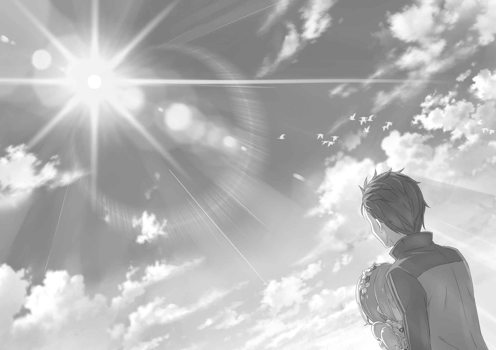
第六章 『配られたカード』
１
部屋には沈黙が、そして張り詰めた緊張感が満たされていた。
その緊張感を肌で味わいながら、スバルは渇いた唇を舌で湿らせ、まずは状況の第一段階を整えることができたことに感謝する。
全ての大前提として、今この場に参ずる面子が揃うことがスバルには欠かせなかった。
力もない。知恵も足りない。能力も人脈も欠けている自分にできることがあるのなら、それはこれまでの死を無駄にしないことだけなのだから。
「ようやく、夕食の時間を遅らせて集められた趣旨が理解できそうだな」
ソファに腰掛け、膝の上で手を組んだクルシュ・カルステンがその沈黙を破り、その凛々しい顔立ちに理解の色を浮かべて呟いた。
「そうですかぁ？ フェリちゃんは正直、まだまだ疑ってるんですけどネ。あれだけヘタレてた男の子が、急にどうしたらあんな目をするようににゃるのかにゃーって」
口調と顔つきこそ軽薄を装っているが、スバルを見る彼──フェリスの視線には油断がない。その姿勢からは、いかなる危険からも主を守ろうという気概が溢れていた。
「────」
そのフェリスと対照的に、クルシュの左隣で沈黙を守るのはヴィルヘルムである。
腰に帯剣し、瞑目する老剣士からは研ぎ澄まされた剣気だけが漂ってきており、城下から戻ったスバルたちを出迎えてくれた際の温和な雰囲気は微塵も残っていない。
今は私人ではなく、主であるクルシュが持つ一振りの剣の役割に没頭しているのだ。
スバルがクルシュたちと向かい合うのは、スバルにとってはあまりいい思い出のないクルシュ邸の応接間だ。過去に二度、スバルはここで辛酸を舐めさせられている。
居合わせる顔ぶれは、クルシュ、フェリス、ヴィルヘルムの三人。そして、そこにスバルがいるのまでは以前と同じ。だが、違う点も存在する。それが、
「出戻りとはいささか居心地が悪いものです。ナツキ殿にはこの居心地の悪さを払拭するような、そんなお話を期待させていただきますよ」
そう言って、くすんだ金髪にお洒落顎ヒゲが特徴的な優男がスバルに笑いかける。
王都で大きな影響力を持つ商業組合の代表者、ラッセル・フェローその人だ。
こちらを牽制するようなラッセルの言葉に、スバルは気楽な様子で肩をすくめた。
「今、レムがもう一人を呼びにいってるんで、もうちょっと待っててくれ。きてくれるかは確実じゃないんだけど......勝算は、ある」
「お早い到着をお待ちしておりますよ。ちなみに、勝算の根拠をお伺いしても？」
勿体ぶったスバルの発言に対しても、ラッセルの受け答えは淀みがない。
自分より頭も口も舌も回る本物の商人を相手に、スバルは口の端を歪めた。
「簡単な話だよ。金の臭いには敏感だ、って自分で言ってたからね。それが本当なら必ず顔を出してくる。ラッセルさんもその口でしょ？」
「これはこれは、痛いところを突かれましたね」
一本取られたとでも言いたげに、額に手を当てるラッセル。もちろん、それを額面通りに受け取れるほど、スバルも暢気に構えているつもりはない。
自分がどれだけ危険な綱渡りをしようとしているのか、そのぐらいの自覚はある。そして今は、やっとロープを崖の両側に張り終えようとしている段階だ。
渡るのはこれから、これからなのだ。
スバルを支えてくれている、借り物の勇気に力をもらいながら。
「皆様、大変お待たせしました」
その数分後、応接間の扉を開いて一人の少女──レムが姿を現した。
「おーけーです」
右手の親指を立ててウィンクし、スバルの隣へ歩み寄るとそっと耳に顔を近付けた。
「少し到着は遅れるそうですが、必ずきていただけると」
「──そうか。よし、よくやってくれたぜ、レム」
これで、スバルの綱渡りのための準備は完了だ。
交渉のテーブルに着く前に、交渉を望んだ形へ導くための筋道を整える。
それはまだ記憶に新しい世界で、スバルが身を以て経験した一つの答えだった。
「最後の参加者は少し到着が遅れるって話だけど、とりあえず役者は揃ってる。これ以上待たせるのもなんだ。──始めようか」
スバルの宣言で空気が変わり、部屋にいる顔ぶれが各々反応する。
クルシュが微かに笑い、フェリスが固く唇を引き結ぶ。ヴィルヘルムはひたすら沈黙に徹して表情を変えず、ラッセルはゆったりと椅子に腰を沈めた。
それらの反応を見ながら、スバルは深呼吸し、自分の気持ちを落ち着かせる。
心臓が高く、強く鳴るのを感じる。
血が全身に巡り、同時に大きな不安が首をもたげて目の前が暗くなりそうだ。
だが、
「スバルくん」
そっと、隣にいるレムが不安になるスバルを安心させるように袖に触れる。
手を握るのでもなく、自分の存在を殊更に主張するわけでもない。そんなレムらしいささやかな気遣い。スバルはまるで万の助勢を得たような安心感を抱いた。
レムが見ている。格好の悪い真似など、それこそできるはずがない。
「──うし」
不敵に笑い、恐怖をその笑みの裏に隠して、スバルは最初の壁に挑む。
針の穴を通すような条件を掻い潜り、ハッピーエンドを迎えるために。
自分を好きだと言ってくれた女の子が信じる、英雄に一歩でも近付くために。
「一つ、確認したいことがある。ナツキ・スバル」
気合いを入れて前を向くスバルに、指を一つ立てたクルシュの声がかかった。
「この集まりの趣旨を。──卿の口から、な」
肘掛けに腕を立て、頬杖をつきながらスバルを見やる怜悧な眼差し。
すでに答えがわかっているだろうに、スバルの口からそれを語らせるクルシュの姿勢には一貫して甘さがない。
話の始め方一つとっても、すでに勝負は始まっているのだ。
そのことが、失敗を続けてきた今だからこそ、わかる。
「そりゃ、もちろん──」
だからスバルは大きく身振りし、クルシュの突き刺すような視線に呑まれないように己を保ちつつ、かつての失敗を繰り返さないように強気に笑う。
「エミリア陣営とクルシュ陣営の、対等な条件での同盟──そのための交渉がしたい」
立ちはだかるいくつもの障害、その最初の関門への挑戦が始まろうとしていた。
２
──大通りでのレムとのやり取りで、スバルは本当の意味でのリスタートを決めた。
それが心の内を全てさらけ出し、それでもなおスバルを信じると言ってくれたレムへの誠意だ。そしてそのおかげで、自分のやるべきことがはっきりと自覚できた。
「それを踏まえて、乗り越えなきゃならねぇ壁が多すぎるな......」
立ちはだかる壁の数々に、状況が詰みの一歩手前にあることは変わっていない。
「それでも、何とかしなきゃだよな。手、貸してもらうぜ？ レム」
「はい、スバルくんのお望みならなんなりと」
頭を掻き、思考をまとめようとするスバルに、レムはあっさりとそう頷く。
思いの丈を打ち明けても、レムの瞳には変わらない信頼が浮かんでおり、スバルの内側に勇気と義務感の二つの炎を灯らせる。
今さらレムの前で、自分の醜態や手詰まりの焦りを隠そうとはスバルも思わない。
なにせ半泣きで、自分のコンプレックスから何まで全部ぶちまけたのだ。レムの胸の内を暴いた事実もあり、本当の意味でスバルとレムは一蓮托生の仲になっている。
そう心を決めたからこそ、スバルの頭はやけにクリアに保たれていた。
「まず、残りの時間の再確認だ。今が戻ってきて、小一時間......それで......」
以前にも検証した通り、メイザース領で魔女教による変事が起こるまでのリミットは五日間──正味、四日半ほどの猶予しかないのが現実だ。
その猶予も街道の封鎖を考慮する必要がある。準備に使えるのは実質的に二日間だけ。
「で、その二日で越える目処を立てなきゃいけない問題が、とにかくいっぱい」
突破しなければならない関門は多く、その質もこれまでのループとは比較にならない。
それぞれ独立して絶望的な壁が、大挙して押し寄せるのを全て突破する必要がある。
一つ目の問題は当然、魔女教だ。ペテルギウス率いる狂信者たちをどうにかして止めなければ、屋敷はもちろん村の住人たちも誰一人として助からない。
二つ目は手を変え品を変え、しかし必ず訪れるレムの死だ。
スバルと同行しても、レムだけが先行しても、運命の袋小路は必ず彼女の死に収束している。目の届かないところで死なれた一回目。そして、目の前で失った二回目と三回目の絶望感。それらの衝撃が、スバルに諦めの道を走らせたといっても過言ではない。
そして三つ目は、エミリアの死を引き金とした、大精霊パックの無差別な暴走だ。
思い返せば今回のループ、スバルの死因は全てパックの手によるものである可能性が高い。一回目から三回目まで、毎回のように凍死していることを考えるとほぼ確実だ。
いずれの壁も強大だが、どれか一つでも取りこぼせば、その後の世界はナツキ・スバルの望む未来ではなくなる。それはレムの信じる英雄像を裏切るということでもあった。
「──いくつか」
ぽつり、と問題点を洗い出していたスバルが呟く。
黙考するスバルを見守っていたレムは、その呟きに何も言わない。スバルの呟きは相槌を求めていない。ただ、その後に続く答えを待っている。それがわかっているのだ。
最愛の英雄に、最善の判断を期待し、最大の貢献をすること。
それが今のレムの在り方であり、それが今のレムの最大限の愛情の示し方なのだ。
レムに見守られたまま、スバルは限られた時間の中、限られた時間の枠を飛び越えた記憶を再生して、一片の取っ掛かりを求めて思考を走らせる。
──頭をひねれ、心を燃やせ。
体が、能力が、今は理想に追いつかないのだから。
──思い出せ、思考しろ。
三度の自分の死を無駄にするな。三度も死なせた少女の意志を無駄にするな。三度終わった世界の全てが、スバルの心に重く圧し掛かる。
出会った人々、交わした会話。決別、遭遇、怒り、狂気、悲しみ、絶望、再起。
そして──、
「可能性はある......か？」
ふいに脳裏を過ったのは、一握の可能性に過ぎない。
一つ一つの糸はか細く弱く、無理やりに繋げたそれはいつ千切れてしまうかも定かではない脆いものだ。全てを預けるには頼りなさすぎる。
──だからこそ、『オールイン』する価値がある。
「レム。話さなきゃいけないことと、聞きたいことが何個かある」
「はい」
思いついたばかりの草案をまとめるために、スバルはレムの協力を求める。
「エミリアの王選参加が公になったことで、魔女教の奴らが動き出そうとしてる。奴らがエミリアを狙えば、屋敷や村にも被害が出るはずだ。俺はそれを止めたい」
「魔女教......」
一瞬、その単語を耳にしたレムの瞳に剣呑な感情が浮かび上がる。
だが、レムは自制心でその感情を抑制すると、スバルの言葉に顎を引いて、
「魔女教が動く可能性については、ロズワール様も危ぶまれていました。レムも詳細は聞かされていませんが、検討されていたなら対策も立てられているのではないかと」
「でも、それだけじゃ足りない」
事実として、ロズワールが魔女教に対してどんな対策をしていたのかは不明だ。
それが不発に終わったのか、あるいは効果がなかったのかはわからない。ただ、結果的にその事前準備は実を結ばず、あの地獄は必ず展開される。
その未来を知っている以上、スバルはロズワールに頼らない形での自衛力を確保しなくてはならない。それこそが、屋敷と村の人々の命を守るための手段なのだ。
「魔女教は短期決戦を仕掛けてくるはずだ。レム、屋敷の戦力は？」
「......伝えづらいことなんですけど、実はロズワール様はお屋敷にいらっしゃらない可能性が高いんです。王都から戻られてすぐ、領内の有力者を訪ねる予定だったので」
言葉を濁すレムの返答は、前回と同じ。ロズワール不在の報せだ。
屋敷には現在、エミリアとラム、そしてベアトリスしかいない。
たったの三人。それもベアトリスのことだ。非協力的な彼女が、魔女教との戦いに参戦してくれるかは非常に怪しい。
前回、ほんの短い間ではあったが、ベアトリスと交わした会話が思い出される。
殺してくれと頼んだスバルに、まるで期待を裏切られた幼子のような目を向けていたベアトリスの顔が──。
「今は......それは後回しだ」
泣きそうな少女の眼差しを何とか振り切り、スバルはレムに向き直った。
「じゃあ、戦えるのは二人。俺とレムだけ戻っても、焼け石に水だな」
「本邸の戦力の大半は、ロズワール様個人の能力に依存している点が否めません。フレデリカが残っていてくれれば、まだ話は違ったかもしれませんけど」
以前、屋敷にいたという同僚の名前を出し、レムが悔しそうに視線を落とす。慰めるようにその肩を叩きながら、スバルは情報の齟齬がないよう細かい部分を詰めていた。
魔女教と、屋敷の保有戦力についてはこれ以上話すことはないだろう。
ならば、次なる話題が本題だ。
「レム」
居住まいを正し、スバルは真っ直ぐにレムを見つめる。
そして、空気が変わったことを察したレムが顔を上げるのを見やり、
「お前が王都に残って何をしてたか、ロズワールに命じられてたことを教えてくれ」
「────」
怪訝な表情か、あるいは虚を突かれて驚くものとスバルは思っていた。
しかし、その言葉を聞いたレムの反応は、スバルの予想をことごとく裏切っていた。
「──はい。スバルくんの望む通りに」
レムはスバルの言葉に頷き、心の底から嬉しそうな微笑を浮かべ、涙を一つ、その眦からそっとこぼしたのだった。
３
「同盟......か」
時は戻り、場面はクルシュ邸の応接間へと移る。
全員の視線を一身に受け、問われた会談の目的を答えたスバルにクルシュが呟く。
クルシュは考え込むようにわずかに顎を引き、それからちらとレムの方を見た。その探るような眼差しの意味を静かに察し、レムはゆるゆると首を横に振る。
「ロズワール様の言いつけ通り、レムは何も申し上げていません。──全てはスバルくんが、ご自分で辿り着いたことです」
「卿の忠義を疑うわけではない。だが、そうか......」
納得、というより合点がいったという顔つきで理解を示すクルシュ。
「ならば、此度の交渉役はレムから卿──ナツキ・スバルに権限を委譲されたと受け取っていいわけだな？」
「ああ、そうなる。ロズワールもずいぶん底意地の悪い真似してくれたもんだけどな」
大袈裟に嘆息して、スバルは脳裏に浮かぶ道化面の主人に内心で舌を出す。
スバルには内密に、レムにだけ下されていた王都での密命。その内容はスバルが自分で気付かない限り、決してレムから伝えることがないよう厳命されていたという。
「最初から、引っかからなかったわけじゃないんだよ。そもそも、うちの陣営の人手不足は自明の理なわけだしな。そんな状況で、期日も決めずにレムを王都に残す？ 屋敷で一番能力的に欠かせないレムを？ ありえねぇ。もっと早く気付かなきゃいけなかった」
もちろん、自領の危機を救ったスバルに対し、治療や賠償責任を取るためにも、世話役の一人も付けなくてはお話にならないという建前もある。
「けど、そんな殊勝な理由であの変人がこの時期にレムを手放すなんて思えない。何かしら裏があるに決まってる、と考えを詰めていけば......」
「自然、最も会見の機会があった当家の存在に行き当たる、か」
足を組み替えて、クルシュはスバルの言葉を引き継いで結論を述べる。
「それに、夜な夜なレムとクルシュさんが密会してるってのは聞いてたからな。何の話をしてるのかってとこまで考えない自分が、本当にアホすぎて嫌になるけど」
今まで、どれだけ自分のことしか見えていなかったのか、そんな自嘲しか浮かばない。
レムが本当にそれとなく、ロズワールが隠した意図がスバルに伝わるようにヒントをばらまいていたのに、世界を四回見直してようやく気付けたのだから。
「毎夜の会談の内容は同盟締結について。そのためにこっちから差し出してる条件に関しては一通り、レムからちゃんと聞いてる」
「エリオール大森林の魔鉱石、その採掘権の分譲が主な取引き材料だな」
隠すようなことではないと、匂わすだけにしようとしていたスバルの言葉をあっさりとクルシュが暴いてしまう。
途端、それを耳にして目を輝かせたのはこの場で唯一の商売人だ。
「それはそれは、聞き逃せないお話ですね」
ここまで沈黙を守っていたラッセルが目を輝かせる。やっと自分にとっても実りある内容になったと、喜んでいるのが声の調子でわかった。
「魔鉱石の採掘権は、近年の魔石細工の技術の躍進を思えば今後ますます価値がある。ましてやそれが、いまだ手つかずの地のものであるならばなおさらです」
予想以上の商人の食いつきに、スバルは内心で驚きを隠せない。
レムから最初に採掘権の話を聞かされたときには、クルシュがなかなか首を縦に振らないということから、さほど魅力的な条件ではないのではと思っていた。
「ラッセルさんが大喜びするぐらいの価値は、ある話なのかな？」
「当然です。魔石細工に秀でたカララギとの交易もあり、我が国の魔石細工の職人も年々腕を上げています。近頃は市井にもその恩恵がちらほら見られるようになりました。魔鉱石は今、あればあるほどいい。これまでは北のグステコからの交易にもだいぶ頼っていましたから、潤沢な鉱脈の話は大歓迎ですよ」
指を立てて、ラッセルは朗々とした声音でスバルの質問に応じる。
「魔鉱石はマナを含有した、純粋な魔力の結晶です。属性は土地の影響、加工する職人の腕に大きく依存してしまう。その代わり、腕のいい職人の手なら用途に応じて様々な魔石細工として活用できる。強度にも優れ、使い方を誤らなければ耐用年数にも信頼が置けます。商品としての魅力は、言うまでもないでしょう」
「ただし、魔石に細工できる職人は少ない。一度、魔石に加工の手を入れてしまえばやり直しも利かない。採掘場の多くは王国に管理され、魔鉱石は大部分が公共事業の方へ回されるのが現状だ。市井に出回っているといっても、一部での話に過ぎない」
魔鉱石の価値の良い部分を列挙したラッセルに対し、クルシュがその価値の悪い部分を冷ややかに列挙する。ただ、ラッセルはそれにもめげずに「だからこそ」と続け、
「手つかずの採掘場の発見には飛びつかずにはおれませんよ。メイザース辺境伯は代々、未発見の鉱脈を引き当てることで財を成してきた実績がある。そこに王選の候補者であるエミリア様の騎士の保証もある。信憑性と信用は非常に高い」
熱のこもった口調で言いながら、ラッセルはスバルを横目に抜け抜けと語る。
王城でのスバルの醜態を知っていて、なおそれを保証と言い切る根性の悪さだ。採掘権の話題に浅ましく飛びついた風を装い、スバルを牽制することも忘れていない。
今さら聞かなかったことにはできないと、ラッセルはスバルにそう念押ししたのだ。
もっとも、退くつもりなどスバルの方にも毛頭ない。
「ああ、そこは信用してもらって構わない。これから長いことかかる王選の中で、最初に手ぇ組もうって相手にブラフかますほど悪党じゃないはずだ」
採掘権の分譲を提示したのはロズワールだ。だからこその安心感がある。
そのスバルの返答に、ラッセルはわざとらしく身を引くと、
「なるほど。どうやら交渉役としての気構えはできていらっしゃるご様子。試すような物言いをいたしまして、非礼をお詫びいたします」
「いや、いいよ。こっちもここからの話し合いで、ラッセルさんの口出しにはガンガン力貸してもらうつもりだから」
元より、ラッセルのスバルに対する評価が高いことに期待などしていない。
スバルの能力を疑問視し、この場で確かめられることも予想していた通りだ。
突っ込みやすい話題を用意し、本題に入る前にややこしく突っ込まれるのを回避しようと思ってはいたものの、望んだ通りの形で食いついてくれたことに安堵は隠せない。
強張る頬を隠すために、無意味に大物ぶった態度を装ってしまうのはご愛嬌だ。
「とはいえ、こうやって謝ってもらえたからには、一回や二回の失言は見逃してもらっちゃったり、フォロー期待したいとこですけどね？」
「それを期待して、ラッセル・フェローを同席させたか。存外、卿も食えない男だな」
軽口を叩くスバルに薄く笑い、クルシュは今のやり取りの評価を終えたようだ。会談が打ち切られていない以上、採点は赤点を免れはしたらしい。
最初の冷や汗ものの関門を乗り越え、スバルは愛想笑いしたままクルシュを見やり、
「儲け話ちらつかせた上でアドバイザー確保、ってのももちろん狙いじゃあるんだが......ラッセルさん呼んだのは、この後の本題に関係があるからさ」
「ほう、本題か」
続いたスバルの言葉に、室内の空気が再び張り詰める。
それまであくまで会談の場に居合わせていただけのクルシュが、姿勢を正して一度静かに目を閉じる。それからゆっくり、開かれた琥珀色の眼差しがスバルを射抜いた。
風が吹いた、そう錯覚するほどの威圧を前に、しかしスバルは怯まなかった。
暴力的な威圧感ならば、もう嫌になるほど味わったのだ。それに比べればクルシュの眼光には、スバルを怯ませようとする負の感情の一切がない。
あるのは相対する相手の背筋を正させ、心を引き締めさせるような正の感情だけだ。
「認めよう、ナツキ・スバル。卿がメイザース卿の名代、並びにエミリアからの正式な使者であると。この交渉の場において、卿と私の間で交わした内容は、そのままエミリアと私との間で交わされたものであると」
正面に臨む、ただそれだけで、これほど人間は気圧されるものなのだ。
クルシュは今、狙ってスバルを威圧しているわけではない。
彼女は純粋に、それまでの私人としてのクルシュから、公人としてのクルシュ・カルステンへと意識を切り替えただけのこと。
カルステン公爵家当主の存在感そのものが、これほどの力を持っているのだ。
──これが、このルグニカ王国で今最も、王座に近い女傑の本当の姿だ。
鳥肌が浮かび、感嘆符が頭の中を入り乱れる。そんな静かな動揺に震えるスバルに手を差し伸べ、クルシュは始まりを告げた交渉の火蓋を自ら切ってみせる。
「すでに聞いているはずだが、改めて問うておこう。私とレムとの間での交渉は、採掘権の分譲を提示された上で合意に至っていない。それは承知しているはずだな？」
「......ああ」
自分の力不足を嘆くレムの姿が浮かぶ反面、そんなレムの苦悩にまるで気付かないでいた自分の見る目のなさへの情けなさも半分。
嘆き二つ合わせて後悔とし、スバルは未来の後悔を先に得るという幸いを存分に利用させてもらう。そのための、前回までの失敗があったのだと。
「こっちも確かめときたいんだが、実際、今の条件じゃ足りないってんだよな？ 互いの陣営への過干渉なしに、エリオール大森林の採掘権の分譲。採掘された魔鉱石自体の取り扱いの細部は後で詰めるにしても」
「草案はレムの方から提示されている。さすがはメイザース辺境伯というべきだろうな。自陣の利益を十分に確保した上で、当家を納得させられるだけの利を提示している。本来なら断るようなことはあり得ない。すぐに同意書を用意させたくなる条件だが......」
そのあたりの数字のやり取りに関して、スバルから口出しできることはない。
下手に口出しすると、「じゃあ、採掘権は全部やるよ！」とか言い出しかねない。
「今回の場合は、交渉後の影響が問題だ。わかるな？」
「ロズワールが信用できない......って、話じゃないんだろうな」
仮にロズワールの素行が問題視されているなら、今後は清く正しい生活を送るように矯正していく所存だが、クルシュが問題点としているのはそこではない。
それは避けることのできない、エミリアに延々と付きまとう問題だ。
「王選の対立候補、ましてやハーフエルフ......半魔の誹りを受けるエミリアとの取引きになる。後々のことを考えれば、慎重にならざるを得ない」
低い声でそう述べるクルシュに、スバルは意外なものを感じて落胆する。
スバルがクルシュに抱いていた印象は、言葉にすれば『威風堂々』や『誠実』といった真っ直ぐなものが相応しい。
王選での所信表明など、まさにその印象を体現するような姿勢を示したクルシュだ。あの発言を聞いていたからこそ、今の風評を気にするような態度には違和感が──、
「まさか、断りを入れるための建前、か？」
「────」
「スバルきゅーん？ 大事な交渉の場面で、ポロっとそゆことこぼすのフェリちゃんちょっとよくにゃいにゃーなんて思ったり？ 思ったり？」
不用意なスバルの発言に、それまで黙って交渉を見ていたフェリスが笑顔で怒る。
額に青筋を浮かべた彼に、スバルは慌てて口を塞いで頭を下げた。
「やれやれ、困ったものだな」
と、そのやり取りを見ていたクルシュが微かに口の端を緩めて、
「素直に建前を暴かれると、かえって私の方が恥じらいを覚えるのだな。これは勉強させてもらった。こうした機会でもなければ、なかなかこういった経験は得られない」
などと、スバルにはわかり難い論法で今の無礼は見逃してもらった。
とはいえ、相手の懐の深さに救われてばかりでは立つ瀬がない。
「つまり建前は建前で......本音の部分では、クルシュさんはエミリアと同盟を結ぶこと自体への忌避感はないって考えても？」
「ナツキ・スバル、一つ考えを正そう」
指を立てて、クルシュはその立てた指をスバルへ突きつける。
「その者の価値は、魂の在り方と輝かせ方で決まるのだ。出自と環境がその者の本質を定める決定的な要因にはならない」
もちろん、それが間接的な要因になることはクルシュにもわかっているだろう。
エミリアの環境が、ハーフエルフという存在への風当たりが、どれだけ理不尽な過酷さを彼女に強いてきたのか、思いを巡らせる想像力がないわけでも決してない。
「あの王選の場で、エミリアが語った言葉に嘘はなかった。そこに確かな覚悟と誇りがあったればこそ、私はエミリアを対立候補の一角であると認めている」
「ややこしいな。つまり？」
「芝居がかっているのは私の好みの問題だ、許せ」
自分の大仰な物言いには自覚があったらしく、クルシュは小さく唇を綻ばせると、それから瞬きの後に表情を引き締め、
「エミリアがハーフエルフである、という点を根拠に私が同盟を断ることはない。むしろ政策的に敵対しているわけでもないエミリアの存在は、私にとっては積極的に敵対する必要のない相手であるともいえる。同盟の話も、吝かではない」
「ってことは......」
「答えを焦るなよ、ナツキ・スバル。卿の申し出を受けるかどうかは、この後の卿の受け答えに左右されるといっても過言ではないのだからな」
好感触な返答に前のめりになるスバルを窘め、クルシュは改めてこちらへ問う。
つまりは、交渉権を譲られたスバルが何を持ち出してくるのかを、だ。
「エリオール大森林の採掘権、大いにこちらに実りがある。だがその反面、私は王選の盤面を急いで進める必要はないと感じているのも事実。期限は三年だ。あまり早急に状況を動かしてしまえば、後々に禍根を残すこととなろう」
「エミリアと同盟を結ぶことのメリットが、そのデメリットに見合ってないと？」
「少し違うな。現状、メリットとデメリットは打ち消し合っている。当家の考えとしてはあと一歩、こちらの背中を押す口実が欲しいといったところだ」
クルシュ自身の意向としては、同盟の締結には乗り気でいるように見える。
一方、クルシュの意思で全てが思うままに動かせるほど単純でないのが、公爵家という大きくなりすぎた立場のしがらみでもあるのだろう。
だから、彼女は求めているのだ。
状況を動かし、周囲の声を黙らせるほどの『何か』が、スバルからもたらされるのを。
「────」
言葉を吐き出そうとして、スバルは己の喉が詰まるような感覚にわずかに驚く。
緊張と不安が胸中で膨らみ、踏み出そうとするスバルの喉を塞いだのだ。
ここからは完全に、これまでの経験にもない完全なアドリブだ。
誰に確実性を確かめたこともない。見当違いの的外れである可能性だってある。
だが、きっとクルシュは乗ってくる。
──そう、スバルは自分の考えを信じた。
「同盟締結に向けて、うちから差し出すのは採掘権と......情報だ」
「──情報」
それを耳にして、クルシュは自身の長い髪に触れながら言葉の先を促す。
まだ、判断されていない。ここからが正念場だ。
「ああ、そうだ。俺が差し出せるのは、とある情報ってことになる」
「聞かせてもらおう。卿の口にするそれが、はたしてこちらを動かせるものか」
髪に触れていた手をこちらへ差し出し、クルシュはスバルの言葉を待つ。
自然、不安と緊張がスバルの全身に震えをもたらした。
だが、それは微かに肘あたりに感じる温もりが打ち消してくれる。
レムがスバルの腕に指を添えて、借り物の勇気に火を付けてくれたから。
息を吸い、一息にスバルはそれを口にする。
「──白鯨の出現場所と時間、それが俺が切れるカードだ」
《了》
あとがき
ありがとうございます！ ６巻です、長月です。鼠色猫でもあります。
今回はまず、一番最初にお礼から入らせていただきました。
それというのも、この『Ｒｅ：ゼロから始める異世界生活』という作品にここまで付き合っていただいて、本当に感謝しているからです。
元々、ＷＥＢでの掲載を行っていたこの作品は、この６巻の内容に辿り着くことを一つの目標として始まった形です。
ＷＥＢでの掲載時も、この内容を書いたときは一つの達成感がありました。その達成感を書籍という形で、もう一度味わわせていただけたのはただただ嬉しく、光栄なことです。本当にありがとうございました。
この物語にここまで付き合ってくださった皆様、今回の内容はどうだったでしょうか。作者としてはとても力の入った部分で、ＷＥＢ版でも最も反響の大きかった部分でもあります。
当時のＷＥＢ版読者の皆様と、作者の達成感。この本を読んでくださった方にも感じていただければ、これ以上のことはありません。
ＷＥＢ版の感想では「ここで終わりかねない勢いですね（笑）」などとも言われましたが、ちゃんと再起と反撃の展開は続くのでご安心ください。
大いにフラストレーションの溜まる展開に、ここまでついてきてくださった皆様が納得していただけるよう、主人公共々頑張ります。
では、あとがきのお約束として今回も最後に謝辞を。
担当のＩ様、このシリーズ通して本当にお世話になっております。６巻の内容はまさに、お声かけいただけた最大の切っ掛けだったと思っていますので、ここまで辿り着けたこと、ありがとうございました。
イラストの大塚先生、今巻は特に絵に対する言及が多くてすみません。ネタバレできない口絵に始まり、挿絵の数々。特に最後の挿絵に関してはものすごい悩んでいただいて、感謝、感謝です。それに今回は二種類のカバー絵、通常版と特装版が可愛すぎる。特装版が特にすごすぎました。あなたが神か。
そしてデザイナーの草野先生、今回もビシッと決めてくださってありがとうございます。今回はカバーイラストだけに留まらず、リゼロ関連で大いに腕を振るっていただき、感謝と恐縮の限りです。今後もよろしくお願いします。
そしてリゼロのコミカライズも絶好調！ 第一章が月刊コミックアライブにてマツセダイチ先生、第二章が月刊ビッグガンガンにて楓月誠先生が連載してくださっています。どちらのコミックスも、今回の６巻と合わせて刊行していただき、無理を言って申し訳ありません＆ありがとうございます。マツセ先生にはこれから、第三章の方でもお世話になります。よろしくお願いします。
他にも、ＭＦ文庫Ｊ編集部様、営業様、校閲様に各書店様、いつもいつも本当にありがとうございます。皆様のご協力あっての作品です。
そして何より、いつも温かいメッセージやファンレターをくださる読者の皆様に心からの感謝を。この巻、読んでくださってありがとうございます。
ではまた、次巻でお会いしましょう。作者と主人公の奮闘にご期待ください。
２０１５年２月 長月達平《年明け最初のサインの年月日を間違えながら》
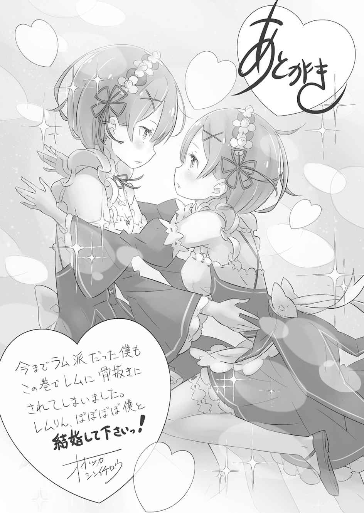
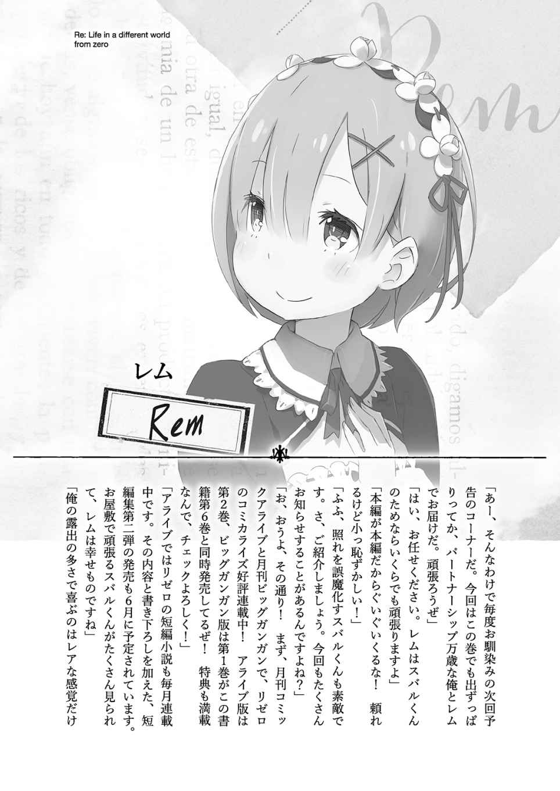
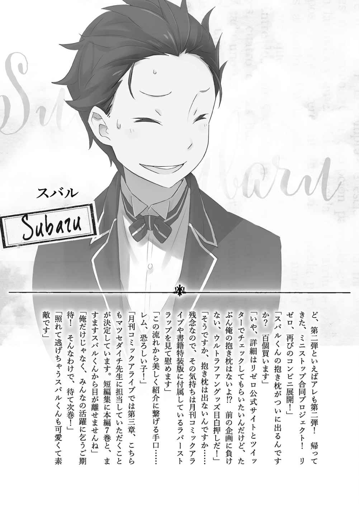
著者
長月達平（ながつき・たっぺい）
１９８７年生まれにして、１９９８年６月に人生五度目の交通事故。アイスクリームはモナカ派で、何も入っていないものが好み。冬に何の話だ。
小説投稿サイト「小説家になろう」にて、同タイトルの小説を投稿中。
イラスト
大塚真一郎（おおつか・しんいちろう）
熊本出身のイラストレーター。ゲームを中心に小説の挿絵なども描いてます。代表作は「コンセプション」、「サモンナイトクラフトソード物語」など。
Re：ゼロから始める異世界生活６
2015年3月31日発行 ver.1.0
著者 長月達平
発行者 三坂泰二
編集長 万木壮
発行所 株式会社ＫＡＤＯＫＡＷＡ
〒102-8177
東京都千代田区富士見2-13-3
03-3238-8745（営業）
編集 メディアファクトリー
0570-002-001（カスタマーサポートセンター）
年末年始を除く平日10:00～18:00まで
©Tappei Nagatsuki 2015
※無断で複製・複写・データ配信などをすることは、かたくお断りいたします。
本電子書籍は下記にもとづいて制作しました
ＭＦ文庫Ｊ
Re：ゼロから始める異世界生活６
発行日 2015年3月31日 初版第一刷発行